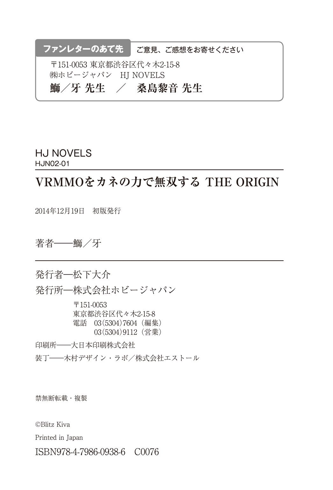

| VRMMOをカネの力で無双する THE ORIGIN (HJ NOVELS) | |
| 鰤／牙 | |
| (2015) | |

プロローグ
空気が弾 け、光が割れ、音が裂 ける。炎 が砕 け、雷 が舞 い、ぶつかり合う二つの斬撃に対して、その間に存在する全 てのオブジェクトは、存在することを許されない。あまりにも現実離 れした、超 常 的な光景。そう、これは決してリアルなどではない。
だが、この状 況 下にあって愉 悦 さえ浮 かべる二人のアバターを目 の当 たりにしたとしても、人々は納 得 できるのだろうか。しょせんこの光景は、電気信号が巻き起こす錯 覚 でしかない。その事実に対して、容易に首 肯 してしまうことを、人々は自分の心に許せるのだろうか。
アスガルド大陸を代表する、最強のプレイヤー二人の激 突 。それを誰 もが固 唾 を呑 んで見守っていた。
人間と竜 人 族。戦士 と魔法剣士 。あるいは......、
二人の違 いを、より決定的に指し示す言葉なら、まだある。だが、それをここで軽々しく記すべきではないだろう。
「なぁ、そろそろ止めにしないか」
先にそう口にしたのは、人間の方である。防 御 修正のさして高そうではない黒衣に身をつつみ、関節部や急所などを簡易的なアーマーで覆 っている。その手に握 るのは、やはり無骨で特 徴 に欠ける、かざりっけの無い長 剣 。端 整 ではあるが、やや幼さを残した顔立ちで、先ほどから超 人 的 な打ち合いを演じている人間とは思えない。
「君の口からそういう言葉が出るとは思わなかったな」
巻き起こる粉 塵 の中から姿を見せた、ドラゴネットの男がそう言う。
こちらも黒衣といえば黒衣ではあるが、その装いはなんとも言えぬほどに豪 奢 であった。
霊 大 樹 ユグドラシルの繊 維 を織って編まれたシャツ。
フェニックスとペガサスの翼 を素材としたベスト。
レイディアントモルフォの翅 から出来たジャケット。
マギメタルドラゴンの鱗 で作られるベルト。
オリハルコンとミスリルの合金、そしてジュエルクォーツのちりばめられた腕 時 計 。
キングベヘモスの革で出来た靴 。
特徴的な外見でこそあれ、課金装備の類 では決してない。すべてが完 璧 なオーダーメイドの一点モノだ。素材にまでこだわりぬくそのあり方に、単純な戦 闘 能力では推 し量 れない何かを、この男から感じ取れる。これだけのものを作るのに、一体どれだけの通貨を使用したのやら。
「いや、この戦い、もうなんかよくわかんなくなってるじゃん」
「君が言うならまぁ、止めても良いんだが」
「あのドロップ品については、もっとこう、平和的な手段でさ......」
「それはナンセンス」
ドラゴネットは肩 をすくめた。
「でもあんた、もう剣 が折れてるだろ」
「心配はないよ。代わりはあるからね」
そういうと、男はメニューウィンドウを呼び出し、手 馴 れた仕草で装備画面を選 択 する。すぐさま、インベントリから男の手に剣が召 喚 された。攻 撃 修正＋三六〇〇、スキルスロット＋八〇、武器耐 久 値三。男がこの剣を取り出すのは、もうこれで十八度目になる。
「ブルジョワなんだよなぁ......」
「おっと、ブルジョワに負けるのは怖 いかい」
人間の青年が漏 らしたぼやきに対して、ドラゴネットは挑 発 的 な言葉を投げた。
「......なに？」
「君がここで背を向けるのは勝手だよ。そう、君が何十何百何千時間と費やした努力であっても、僕 はほんの数秒の動作でそれを上回ることができる」
男はメニューウィンドウを開いたまま、コンフィグを選択した。このページにはゲーム内課金の項 目 がある。何の躊 躇 もせずにクレジットカードのアイコンを選択すると、中から適当なサービスと数量をタッチ。そのまま暗証番号を入力し、
どさどさどさどさ。
アイテムインベントリに収容しきれなくなった無数の消費アイテムが、ドラゴネットの周囲に降り注いだ。このゲーム、ＮＰＣの販 売 するポーションの、一日あたりの流通量が決められている。だからこそ錬金調合のできる生産職にも日の目が当たるわけなのだが、このドラゴネットの男は、『基本アイテムパック』なる追加料金サービスを無数に選択することで、一人のアバターが一年かかっても消費しきれない量のポーションを一 瞬 で召喚したのだ。
「趣 味 が悪いぜ、おっさん」
「よく言われるよ。だがナンセンス。僕はこういう生き方をしてきたからね」
「まぁ、今のはないわよね」
「ありませんな」
二人を取り囲む観衆の中で、赤髪のエルフと銀 髪 の人間がそんな言葉を交 わしていた。クラスはエルフが錬金術師 、人間が騎士 。生産職のなかでも、とりわけポーション生産を得意とする錬金術師 に、今のドラゴネットが行った暴挙は許しがたいものであったはずだが、義 憤 よりも先に呆 れが顔に浮かんでいた。
「だが、あれは本心からではありませんよ。イチロー様も相手にはそれなりに敬意を払 っているはずです。何と言っても、自分とは正反対に位置する人間ですからな」
騎士 はどうやら、ドラゴネットとの付き合いが長いらしい。
ドラゴネットは課金サービスを利用するのに躊躇がない。このゲームももうじきサービス開始一周年を数えるが、その記念として、瀕 死 に陥 るダメージを一回だけ無効化するアイテムが課金サービス欄 に並んだ。非課金勢の猛 反 対 を受け、たった半日でそのサービスは姿を消したのだが、このドラゴネット、そのアイテムを大量に確保している。
「そうかなぁ。お金を使いまくって、自分はこんなに凄 いんだぞアピールをしてるだけじゃないの？」
「まぁ、それはあるかもしれませんが......」
無論、そんなものを使えば勝敗など見えているようなものなのだが、人間の青年のほうも負けてはいない。《剣技の心得》がスキルレベル９９９に達することで取得できるエキストラスキル《極意開眼》。それを有する唯 一 のプレイヤーが彼 であり、あらゆるアイテム、スキルによるダメージ無効化能力を貫 通 する力を持つ。
ゆえに、ドラゴネットが、リアルマネーの力を以 てしても止めるに至らない青年の力に敬意を払っているというのも決して嘘 ではない。ただ、あれは敬意を表に出すことが決して無いだけなのだ。
「でもまぁ正直、死なないで欲 しいのよねぇ。あたしの作った防具つけて負けたとか、最悪じゃん......」
「アイリスブランドも地に堕 ちますしなぁ。まぁ、決着つけずに終わるのが一番穏 便 で良いとは思うんですが......」
二つの影 は、すでに他者を寄せ付けない空気を纏 い、一 触 即 発 の緊 張 感を滲 ませつつある。次に起こる何度目かの激突の果てには、とうとう決着はついてしまうのかどうか。ここにいる全ての観衆にも、それを予測することはままならない。
竜人族と人間。
魔法剣士 と戦士 。
あるいは、二人の違いをより決定的に指し示す言葉なら、もうひとつある。すなわち、
課金勢と、廃 人 勢だ。
第一幕
深夜の摩 天 楼 。窓ガラスの向こうに映る都内の夜景は人々の生活の光だ。そこでは幾 多 の悲喜が育 まれ、行き交い、ぶつかり合っていることだろう。それを上から眺 めることのできる、文字通りの天上人など、この一億を超 える日本の人口においても、ほんの一 握 りに過ぎない。彼らは、大衆が一生かかっても手が届かないような高級酒をグラスに眺め、ここホテル・グランドヒルズの会員制バーで、楽しげに談 笑 を交わしている。
さて、日本の名士がかき集められるこのバーにおいて、ひときわ注目を集める男がいた。
耳をすませば聞こえることだろう。この地上一二〇階の地においては、下界の雑多な喧 騒 など届かない。奏 でられる弦 楽 器 の旋 律 。上品だが冷 酷 な情熱を秘 めた、やや早足の曲調。せわしなく弦 を押さえる指先の動きとは裏腹に、男の顔は涼 やかだった。整えられたプラチナブロンドは、毛先すらも微 動 だにしない。すれ違えば、はっと振 り向 かずにはいられないであろう、目の覚めるような美男子である。ハイ・ソサエティな令 嬢 たちが彼に送る熱視線なども、ごく当然のものと言えた。
やがて演奏が終われば、いつの間にやらバーに座 る客の大半を占 めていた聴 衆 が、惜 しげもなく賞賛の拍 手 を送った。
男は特別気をよくするわけでもなく、さも当然と言わんばかりの一礼の後、彼のために開けられていたカウンター席へと戻って行く。
「さすが、ツワブキコンツェルンの御 曹 司 は多芸でいらっしゃる」
「目の覚めるような演奏でしたよ。お見事ですな」
自分よりふた回り以上、親と子ほどに離 れた男たちからの美辞。
「一 朗 さん。今の曲、エルンストの〝魔 王 〟でしょう？」
「ヴァイオリン・ソロの中でも難曲と聞いておりますのに。あっさりと演奏なさってしまうのね」
見目麗 しくきらびやかな、それでいて決して下品ではない美女たちからの麗 句 。
そのいずれもが、石 蕗 一朗にとっては聞き慣れたフレーズでしかない。ヴァイオリンをケースにしまいながら、適当に相 槌 を打つ。このヴァイオリンも、何かの余興になれば良いと思い持ってきた程度のものであって、そもそも触 れること自体二、三年ぶりだ。自身の天才性を自覚する一朗としては、それらの賛辞を当たり前のものと受け取りつつも、こんなものしょせんは手 慰 みだとも思う。
ナンセンスだな。
何が、というものを思い浮かべるでもなく、漠 然 とそんな言葉が浮かんだ。
「一朗さんは、最近なにをなさっているの？」
隣 に腰 掛 ける美女が、話題の切 り替 えに、ふとそんなことを口にした。
「それは仕事で？ それともプライベートの話？」
たずねると、美女がくすりと笑う。
「お父様のお仕事のお手伝いはあまりなさっていないと伺 いましたわ」
「おっと、参ったな。そんな噂 が流れているんだ」
「ドラ息子 でいらっしゃるのね」
「そんな下品な言葉、こんな場で使うものじゃない。僕のやってることは変わらないよ。最近はよく山 梨 の方に行くけれどね」
一朗は、上流階級の人々が使いがちな、腹の底に何かを隠 すような物言いが好きではない。だから軽いお返しの意味も含 めて、明確に何かを答えたりしないようにしていた。
「変わらないということは、また珍 しい虫を探しに？」
「おや、詳 しいね。僕のファンか何かかい」
「ここに来るような女性ならば大 抵 の方は知ってらっしゃるのではないかしら。ツワブキコンツェルンの御曹司は、希代の虫マニアだって」
どこから噂が流れて行くのやら、わからないものだな。一朗はグラスに注がれた琥 珀 色 の液体を眺め、ため息をつく。
当然、流言飛語の類ではなし。あまりおおっぴらにしているわけではないが、石蕗一朗の趣味は虫の観察だ。山梨に出かけたのも、現在は希少種とされている国 蝶 オオムラサキを探すためである。この独特の斑 紋 を持つ昆 虫 の魅 力 を語り出せば一晩では済まないが、そこを自重する精神も一朗にはある。
「こういう話、普 通 の女の子は気味悪がると思うんだけどね」
「みなさんも距 離 感を測りあぐねてらっしゃるのよ。それを差し引いても、石蕗一朗は魅力的な男性ですもの」
「ナンセンス」
女性の発言を、片手で遮 る。ここに至って相手が比 較 的 あけすけに物を言ってくるタイプだとわかり、一朗も遠 慮 なく本音を口にすることにした。
「そのテのおべんちゃらはもう良いよ」
「あら、失礼しましたわ」
「それで、レディのご用はなんだい。僕と虫の話をしたいって言うなら、個室を用意しても良いんだけど」
「それはまたのご機会に。わたくし、こういうものですけれども」
そう言って、女性が取り出した名 刺 を、一朗は受け取る。なんだ、また営業の類か。味わい慣れた落 胆 の影が、一朗の心に落ちた。
「なに、シスル・コーポレーション社長......野 々 あざみ。あぁ、シスルの社長さんなんだ。まだ若いのに大したもんだね」
「まだ起こしたばかりの小さな会社ですけれども」
シスル・コーポの名前ならば知っている。近年確立されたバーチャル・リアリティ技術を用いたソフトウェアの開発を行っている新興企 業 だ。もともと、ＶＲ技術の開発に携 わった大手ゲームソフトメーカーの技術者が独立して作った会社であると聞いているが、どうやら目の前にいる女性がその社長であるらしい。
「仮想現実技術開発成功のニュースは僕も少し驚 いたよ。なんて言ったかな。かなり前にマサチューセッツ工科大を十歳 で卒業した天才児がいたよね。あの卒業論文でも言 及 してたから、理論は知っていたけど。現実になるまであと五、六年はかかると思ってたな」
「あ、それ私です。九年前になりますわね」
「あ、そう......。じゃあ君、僕より歳下なんだ......」
「はい。ポニー・エンタテイメントでＶＲ用ゲームハードを開発していたのが三年前です」
「そうなんだ。すごいね。ちなみに僕は九歳でハーバード大卒業したけどね」
「存じ上げておりますわ」
野々あざみほどの才女であれば、このとき一朗が言外に匂 わせる敵 愾 心 じみたものを、敏 感 に感じ取れていたことだろう。口調の端 々 ににじむ棘 は、涼やかな社交界のプリンス・石蕗一朗の印象から程 遠 いものである。だからと言ってむろん、怖 気 付 いてしまうようなあざみではない。なぜこの男が急激に不 機 嫌 になるのか。想像の一 端 がそこに追いつくと、むしろ妙 な可笑 しさが口をついて吹き出した。
訝 しげに睨 む一朗に、一度『失礼いたしました』と取 り繕 って後、あざみはようやく本題を切り出す。
「実は、我 が社 の開発したＶＲＭＭＯＲＰＧ〝ナローファンタジー・オンライン〟が、来月でサービス開始から一周年を迎 えます」
「へぇ」
一朗からすればそれも聞いたことがある名前だ。シスル・コーポレーションが旗 揚 げと同時に提唱した、世界初のＶＲＭＭＯ......すなわちバーチャル・リアリティを活用したオンラインゲームである。
惜しくもリリースが遅 れたため、最終的に世界初の座はポニー・エンタテイメント社が開発した他のソフトに譲 ってしまったものの、ＶＲ技術開発に直接関 与 した社長が注力したゲームソフトであるとして、割と大々的に話題を集めていたと記 憶 している。その頃 一朗はアマゾン熱帯雨林に珍しい虫を探しに行っていたので、話題の規模の割に記憶そのものは薄 いのだが。
ちなみに、一朗はこのとき新種の昆虫を二種ほど発見して、それはそれで一部にセンセーショナルな話題を集めた。
ナローファンタジー・オンライン。一〇〇年遊べるオンラインゲームだったか。キャッチフレーズはそんな感じだった。
「一朗さんには、一周年セレモニーにゲストアバターとして参加していただきたいんですの」
「なんで僕なの？」
言葉の意味を吟 味 するまでもなく、彼の脳 裏 に浮かんだのはそんな疑問である。
一朗は、自分自身が言語に絶する天才であり、世界で十の指に入る資産家であり、経済界の未来を担 う御曹司であることも自覚しているが（あとそこらのモデルを圧 倒 するほどの美男子であることも）、そういった場に呼ばれるような人間であるとは思っていない。
ＶＲＭＭＯのようなものに触れる、コアなゲームユーザー、あるいは暇 や退 屈 をもてあました学生・非労働者諸君に、名前を認 知 されている存在ではない。一〇〇年遊べるオンラインゲームの記念セレモニーならば、著名な漫 画 家 なり、俳優なり声優なり、もっと相応 しい人間がいるのではないか？
ここで一朗は、十六歳から十八歳までの短い期間、アイドル歌手として一世を風 靡 していたことを思い出したが、あれももう五年前のことだ。時の人と呼ばれるには少し時機を逸 している。
「ツワブキコンツェルンの御曹司がセレモニーに参加してくれたとあれば、経済界へのアピールにはなりますでしょう？」
「つまり、シスル・コーポとナローファンタジー・オンラインは、名前にハクが欲しいわけだ」
ミもフタもない言い方をしてみたが、あざみは上品な笑 顔 を見せてうなずいた。
「新興企業、それに、社長が若い女ということもあって、各方面との交 渉 にもいちいち難 儀 いたしますの。おわかりになります？」
「理 屈 の上ではね。僕は生まれたときから石蕗一朗だったから、実感としてそういう苦労はわからないな」
正直、この用件は一朗にとって何の得にもならない話である。ゲストアバターとして参加して欲しい、というからには、セレモニーは仮想世界、すなわちナローファンタジー・オンラインの中で行われるのだろう。それがどれほどの規模になるか、一朗自身にはよくわからないし、自分以外にどのようなゲストが招かれるのかもわからない。上流階級の著名人であれば、招待される場にも気を使う。下手な招待に意 気 揚 々 と出向いたのでは、本人の格を落としかねないからである。
が、
それはまぁ、あくまで一 般 論 でしかない。石蕗一朗は基本的に規格外の男である。
ここでむしろ、何かこちらへの利益を匂わせたりすることがあれば、一朗はにべもなく断っていたことだろう。ギャランティの話であったとしてもそうだ。何が得で、何が損か。それは一朗自身が決めることであり、他人に干 渉 されるべきことではない。そこに踏み込まれるのは、一朗は嫌 いだ。
そのナローファンタジー・オンラインの記念セレモニーとやらが、たとえ五〇人程度しか集まらないこぢんまりとしたものであったとしても、一朗が面 白 いと思えば参加するのである。そうしたことで、自身の格が落ちるとは、一朗は思っていない。彼の格とはすなわち、彼が石蕗一朗であるという事実ですでに完結しているからだ。
「すぐに返事は出せないな」
石蕗一朗の答えはそれであった。
ナローファンタジー・オンラインの記念セレモニー。それが果たして自分が参加する意義があるかどうか。まずそれを吟味しなければならない。幸いにして、山梨でオオムラサキを探すのにもひと段落をつけたところだ。取り立てて急ぎの予定も入れていない。
「今日はこの辺で失礼しようかなと思う」
「あら、寂 しいわ。前向きに吟味してくださるってことでよろしいのかしら」
「そのあたりも含めて僕が決める。他人の意見や価値観で物事を回されるなんていうのも、ナンセンスだ」
バーテンダーに声をかけて、クレジットカードで支 払 いを済ませる。さらっと六桁 クラスの金額が移動するお勘 定 だが、当然、一朗は歯 牙 にもかけない。
「ナンセンスだけど、一応、聞いておこう。君が作ったそのゲームって、面白い？」
野々あざみはクスリと笑った。
「えぇ、一〇〇年遊べることは保証しますわ」
「ふーん」
そっけなく言ってから、一朗はバーを後にした。それまで直立不動であったガードマンの一礼を受け、エレベーターで一気に地上を通 り越 し、地下の駐 車 場 へと降下する。カーマニア垂 涎 の高級車がずらりと並ぶ、味気ないコンクリート製の洞 窟 を、フェラガモ製のオーダーメイド・シューズが叩 いた。コツ、コツ、という音だけがやおら高く反 響 する。
ナローファンタジー・オンラインか。
一朗はコンピューターゲームに手を出したこともないではないが、熱 狂 的 にはまって遊んだ記憶というものはない。ＭＭＯＲＰＧであっても然 りだ。そもそもこうしたゲームは、一部の熱狂的なゲームマニアが過 剰 にのめりこむもの、という世間の風潮がある。一朗は他人の価値観に左右されるお粗 末 な精神の持ち主ではないにせよ、当たらずとも遠からずな考えを持っていたのは事実だ。オンラインゲームにのめりこみすぎて、身を持 ち崩 してしまった人間の例は、枚挙に暇 が無い。
それはそれとして、オンラインゲーム......というよりはむしろ、ウェブ上に構築されるオンラインコミュニティが、ビジネスモデルとして今 尚 発展途 上 にあるのだということは、一朗も認めざるを得ない。いかに親の仕事に手を貸さない道楽息子 であるといえど、一朗も経済界の中 枢 にて生まれたからには、そのコミュニティの商業価値に興味はある。
世界最大のメタバースである〝アナザーライフ〟は、今なお国外で強い勢いを持つ。国内大手のオンラインコミュニティサービス〝プラナリアピグ〟は青少年保護のための対策措 置 を強行したことでちょっとした話題を呼んだ。
ナローファンタジー・オンラインは、しょせんはゲームである以上、これらと同様の大規模なサービスとなれるかどうかは怪 しいところだが、オンラインで共有できる仮想現実世界という意味では、これまでになくリアルなメタバースとなり得る。一朗の知能を以てしても、結局は未知数であると言うほかないのだ。
結局、重要なのかどうかは、そのゲームが面白いのかどうかだろう。ゲーム自体が高く評価されていけば、バーチャル・リアリティを用いた本格的なオンラインコミュニティを作る切っ掛けにもなる。あるいは、野々あざみ社長にはすでにその構想があって、足場を固めるための評価作りに、一朗をゲストとして呼びたいのかもしれない。
どうしようかな。
ずっと思考の世界にいた一朗だが、視界に見慣れたセダンが映り、立ち止まった。深い海のような色合いをしたリンカーン・ＭＫＳ。一朗の所有車のひとつである。ひとつと言っても、高級車を好き放題乗り回したところであまり楽しくないと最近気づいたので、もっぱら移動はこれ一台だ。
フォルムに関しては、ケーニッグセグ・アゲーラやパガーニのウアイラなどのほうが趣味なのだが、二人乗りなので、自分でハンドルを握りたいときでもない限り車庫からは出さない。ただ、割とマメに洗車はする。
「もうお帰りですか？ 一朗さま」
さて、そのリンカーンの前で恭 しく一礼する女性というのが、古式ゆかしいヴィクトリアン・メイドであるというのだから恐 れ入 る。これも一朗の趣味、ではない。こちらはどちらかというと、当のメイドの趣味である。
「うん、寄り道もせずにまっすぐ帰るよ。出してくれないか」
「かしこまりました！」
扇 桜 子 は、石蕗一朗が道楽で雇 った使用人である。それなりに美人でそれなりにスタイルがよくそれなりに教養のある人物を採用したつもりだが、これがなかなか優 秀 で、単なる使用人のほかに、秘書代わり兼 運転手として重宝している。
なお、趣味でメイド服を着るだけあって、まぁ、割とそういう人間だ。
一朗はセダンの後部座席に座り、シートに背中を預けた。桜子は慣れた仕草で運転席にもぐりこみ、ロングスカートやエプロンなどを邪 魔 に扱 うでもなく、サイドブレーキを戻し、ブレーキとクラッチを踏む。
「桜子さんって、ゲーム好きだったよね」
発進してからしばらく。車がグランドヒルズのあった六本木を抜 けたあたりで、一朗はそう口にする。視線は窓ガラスの向こうに溶 けて流れる景色を、ぼんやりと見つめていた。
「はい、好きですよ。ゲームだけじゃなくて、漫 画 とかアニメとかもですけれど」
桜子の使う砕けた敬語は、一朗の周りにはあまり使う人間がいない。ありていに言えば物 珍 しかった。彼 女 を採用した理由のひとつだ。
「オンラインゲームとかもやるの？」
「ＭＭＯですか？ 好きですねー。アルティメット・オンラインとか、モンスターバスターフロンティアもやったなー。一朗さまからそんな話をするなんて珍しいですね。いつもは虫を眺めてニヤニヤしてるだけなのに」
「ナンセンス。漫画やアニメを見ているときの君の顔も大 概 に台無しだよ。そんなことはどうでもいいんだけど、ナローファンタジー・オンラインって知ってる？」
信号がちょうど赤になったのもあって、セダンが急停車する。運転席から、嬉 々 とした表情で桜子が振り向いた。
「ナロファン！ 知ってるもなにもドハマりですよ！ 先週、一朗さまが五日くらい山梨に行って帰ってこなかったときは、もうずっと潜 ってました！」
「あぁ、帰ってきたとき部屋がいつもより汚 かったのはそういう......」
「給料分のお仕事はしてますよ。棚 の上の埃 くらいは大目に見てください」
ぷいと視線を前に戻して、桜子はステアリングを握りなおす。
しかしヘビーユーザーだったか。彼女は住み込み使用人だが、メイドの私生活に足を踏み入れるような趣味はなかったので、彼女に与 えてやった部屋も覗 いたことがなかった。だが、これはちょうど良いかもしれないな。
「僕も少しやってみようかなって思うんだけど」
「えっ、本当ですか！」
「信号、青になったよ」
「おっと」
桜子がアクセルを踏んで、セダンが再び夜の国道を走り始める。
「知人でやってる人、いないんですよねー。クエストこなすときは野 良 ギルドばっか組んで......それはそれで楽しいんですけど、一朗さまが始めるっていうなら色々教えてあげられますね！ どんな種族とクラスにするんですか？ 取得するスキルは決めました？」
その声はいつになく弾 んで聞こえた。まぁ、もともと性 根 の明るい女性ではあるが。
「何言ってるのかまったくわからないけど、まぁ適当に選ぶよ」
「そーですかー。まぁ操作方法に癖 あるし、ちょっとバーチャル酔 いもしやすいですけど、一朗さまならすぐ慣れますよ」
「あぁ、僕天才だからね」
「天才ですからねー」
国道四一二号線から首都高に乗る。窓の向こうに流れていく夜景が、よりいっそう糸を引き、光同士が溶け合っていく。景色の奥 に見える代々木公園の暗 闇 が、やけに目を引くのも、いつものことだ。東京の夜は何も変わらない。退屈でナンセンスだ。
「明日は秋葉原ですね！ 始める前にまず〝ミライヴ〟買わないと！ でも在庫あるかなー。いますっごく人気なんですよねー。あ、帰ったら私のミライヴありますから、そっちで少し触 ってもらっても......」
楽しそうに首都高を飛ばす桜子の声を聞きながら、一朗は、そのナローファンタジー・オンラインが、短い間でも自分に刺 激 を与えてくれることを祈 っておくことにした。
ツワブキコンツェルンの御曹司、石蕗一朗。彼の名を知らぬ者など、世界の上流階級においても存在しない。親の仕事を手伝わず、暇さえあれば珍しい虫を探して喜んでいる一朗ではあるが、その実彼は脛かじりな道楽息子では決してない。彼の住まいも、生活費も、メイドの給料も、すべて彼自身の稼 いだポケットマネーで賄 われる。一朗が両親から小 遣 いを貰 ったのなど、十歳の一月が最後だ。
何しろ孤 高 のロイヤル天才児・石蕗一朗である。九歳でハーバード大学を卒業したとき残した論文が、経済界に与えた影 響 について、今さら紙面を割 くまでもないだろう。全世界の経営者を震 撼 させた新理論は、今なお威 光 を伴 っていたるところに轟 いている。
幼少期をウィーンで過ごしたこともある一朗は、ヴァイオリンとピアノの演奏もプロ級であり、上流階級の人間だけを集めた音楽イベントが開 催 される際は、必ず彼の姿がある。一朗が戯 れに描 いた絵画は、現代美術の最先端として多額で取り引きされる。趣味の一 環 で世界を飛び回り、見つけた新種の昆虫は二十を下らない。
そうしたあれこれを、一朗は片手間でやってしまうのだ。
時間にゆとりが取れれば、大学の客 員 教授として講 壇 に立つこともある。経済学に精通する身として、有 償 で資産運用の相談に乗ることもある。アイドルデビューしてお茶の間を騒 がせたのは二年とちょっとだけだったが、その時手にしたまとまったお金は、うまいこと回して何倍にも膨 れ上 がっている。不 況 不況と世の中が喚 こうと、カネはあるところにはあるのだ。
自分自身で稼いだ金である。どう使おうと、人から文句を言われる筋合いはない。
世田谷区三 軒 茶 屋 に、一 般 人 ではなかなか手の出せないような高級賃 貸 マンションがある。ツワブキパピヨン三軒茶屋。大家は石蕗一朗、設計は石蕗一朗。現在の一朗のおもな収入源であり、その最上階すべてが彼の住まいでもある。
ツワブキパピヨンの業務用エレベーターに、運送会社のスタッフが、なにやら巨 大 な梱 包 物をせっせと運び込んでいるのは、もう昼をだいぶ回った時刻のことであった。それに交じって見える黒いスーツの男。襟 元 には、国内大手のゲームメーカーであるポニー・エンタテイメント社の社章があった。
七月の頭。もう梅雨 も明け、陽光がじりじりと額を焦 がす時期だが、この男が浮かべる汗 の原因は、果たして猛 暑 のせいだけでもあるまい。何よりツワブキパピヨンは、オートロック式の自動ドアをくぐれば空調が効いている。
「やぁ、どうも」
最上階にて彼らを迎えたのは、もちろん我らが天才御曹司・石蕗一朗である。ダンボールで大 掛 かりに梱包されたふたつの塊 を見て、特に感 慨 を浮かべるでもない。黒いスーツの男を見かけても、その涼やかな表情に変化はなかった。
「石蕗さま、今回は弊 社 の〝ミライヴギア・コクーン〟を直接ご購 入 いただいて......」
「うん。その辺の挨 拶 は省いて良いよ。ナンセンスだ」
とりあえず大きな両扉を開き、一朗は来客を招き入れる。作業着の男たちは、一生に一度拝めるかどうかというセレブリティ空間に、しかし浮 かれる様子でもなく踏み込んだ。プロフェッショナルの鑑である。
対照的に緊張を隠しきれていないのがポニー社の男だ。出鼻をくじかれたところで、めげるわけにはいかない。
「わたくし、ポニー・エンタテイメント営業部課長の、荒 垣 大 吾 と申しまして......。立ち上げや設定などを......」
「いや、それも僕がやるから良いよ。自分で遊ぶものだしね。他人にいじらせるのもナンセンスだ」
取り付く島がないとは、まさにこれである。名刺も受け取ってもらえない。
絶 妙 なトークと押 しの強さで、古巣では営業の鬼 とまで言われた荒垣大吾の姿はここにない。相手は、この歳にして経済界の重 鎮 に数えられることすらある石蕗一朗。その気になれば、ポニー社の社長にホットラインを繋 いで、荒垣の進退を決めることすら容易であろう。まさしく格が違 う。
梱包物は一朗の誘 導 に従うままに一室へと運び込まれ、ダンボールと緩 衝 材 、そしてビニール包装を剥 き取 られることでその姿を現す。傷一つ無いメタリックシルバーの曲面が真っ先に目を引き、スタイリッシュな青文字で"Mi-L/RiveGear COCOON"と刻印されていた。プラスチック素材の黒い透 過 板 と、銀色のボディの兼ね合いは、絶妙に未来的だ。人間をすっぽり覆い隠して、なおもゆとりのあるフォルムである。
「うわぁ。本当に買っちゃったんですねぇ、コクーン」
喜色をにじませた感 嘆 と共に、一人のメイドが入ってきた。これには作業着の男たちもいささか面を食 らう。両手で支えるトレーには人数分のグラスが載 せられていた。
「あ、皆 さんお疲 れ様 です。暑い中大変ですよね。とりあえず喉 でも潤 してくださいね」
石蕗一朗の専属メイド・扇桜子は、男たちの間を華 やいだ笑顔で練り歩き、丁 寧 にグラスを手 渡 した。氷と一 緒 に、なにやら甘 そうな液体がなみなみと注がれている。荒垣を含めた男たちは遠慮がちに縁へ口をつけ、あまりの美 味 さに目を見開いていた。
「まさか私の分まで買ってくれるなんて。このときほど一朗さまに雇われてよかったと思った時はありませんね」
「まぁ惜しむような金額でもなかったからね」
「今まで以上に充 実 したＶＲライフが送れそうです......。早く設定しちゃいましょうよ！」
一朗は、開 梱 作業中に荒垣から手渡されていた書類に目を通していた。三〇〇ページ近くの分厚さを持つマニュアルを、ぱらぱらとめくるように読む。天才である一朗は速読術にも長 けているのだ。読み終えるや、一朗は桜子の持ってきた工具箱を受け取って、まるで手 馴 れたものであるかのように仮止めされた板を外す。中にぎっしりと詰め込まれたコード類も、正確に把 握 しつつ引き抜いては繋ぎ始めた。
一 切 の危なげがない作業である。荒垣も舌を巻くどころではない。こうなってしまえば、彼らのやれることなどありはしない。荒垣と運送屋の男たちは、桜子の天使のような笑顔に見送られて退散するより他は、無かったのである。
電源コードにＬＡＮケーブル。業務用の変圧器は家にあるもので十分まかなえる。配線類の作業を済ませてしまえば、あとは立ち上げと設定だ。外側にある電源を入れれば、重 厚 な作動音と共に〝ミライヴギア・コクーン〟が起動する。レバーを引いてハッチを開くと、中にはゆったりとしたシートと全天周型の液 晶 モニタがある。まるでロボットのコクピットだ。
ミライヴギア。ポニー・エンタテイメント社が開発した、バーチャル・リアリティ体感機能を備えるゲームハードである。ミライヴとは「未来」「ライヴ」「ドライブ」の複合語であり、それ自体がコントローラーであることを示すため、クラシックコントローラーのキーである「Ｌ」と「Ｒ」も名前に入っている。一 般 的 に流通しているのは、頭部をすっぽり覆うフルフェイスヘルメット状の〝ミライヴギア・Ｘ〟、桜子が所持していたものと同様のものだ。
ここから本筋にあんまり関係ない話が進む。
ミライヴギア・コクーンは、ゲームセンターやインターネットカフェに少数導入されている業務用のミライヴギアである。ナローファンタジー・オンラインのほか、ポニー・エンタテイメント社のリリースしたネオリアリティ・オンラインなどのサービスも、いわゆるＭＭＯＲＰＧだ。従来のものと同様に、インターネットカフェからログインすることで得られる特別なサービスを要求する企業も多く、リリース元もそれに乗らざるを得なかった。それに同調するように開発されたのがコクーンなのである。もちろん、通常のミライヴギア・Ｘを貸し出すインターネットカフェも多かったが、この大掛かりな装置はゲームセンターという新たなる顧 客 を開 拓 し、ＶＲＭＭＯ用の長時間料金コースを用意するゲームセンターも増加した。結果として、全体的に下火であったゲームセンター業界にも新風が吹き込まれたのである。
当然、大掛かりなだけあって、コクーンの性能はミライヴギア・Ｘとは比べ物にならない。ゲームプレイ中、身体にかかる負担を大きく軽減し、またより多角的な手法で仮想現実を構築できる。操作の際の反応性も、コクーンのほうが上出来だ。桜子が大喜びしていた理由はこの辺にある。
あんまり関係ない話終わり。
「設定、終わったよ」
ハッチを閉じてから十数分後、ハッチが再び開いて一朗が出てくる。
「ゲームのインストールは外側からやるみたい」
「じゃあ、いよいよ......これの出番なんですね！」
そう言って桜子が取り出したのはゲームパッケージ。高くそびえる古塔をバックに、空を見上げる騎士 が描かれている。鎧 や武器の質感も当然リアルで、澄 み渡 る蒼 穹 は、狭 苦 しいパッケージのはるか向こうにまで広がっているのだと、錯 覚 を抱 かせるにも十分すぎる。時計のイラストを交えて描かれたタイトルロゴは、『Narrow Fantasy Online』。その下に『プレミアムパッケージ』と書かれている。
初期生産ロットはわずか一〇〇〇という文字通りの稀 少 プレミアソフトだ。通常版に比べて五倍近い値段を持ち、当然それに見合うたくさんの特典が内蔵されている。サービス開始から一周年を数えようとする現在でも、未 開 封 品 が心無き転売屋によって法外な値段で売られている。これは今朝、桜子が秋葉原の片 隅 で発見し、一朗から預かったクレジットカードであっさり買ってきてしまったものだ。
「私はもちろんこっちです」
桜子が取り出したのは、自室から持ってきた通常版のソフトだ。インストールするだけなら、プレミアム版を二人で共有すればとも思ってしまうが、そうは問屋がおろさない。
プレミアムパッケージにはシリアルナンバーが記 載 されており、ひとつのパッケージにつきひとつしかアカウントを作れない。特典内容もゲームプレイを有利にするものばかりで、当時は露 骨 な課金仕様であると多くのユーザーが眉 をひそめたものだが、ナローファンタジー・オンラインの緻 密 なライティング技術が描く世界観を目 の当 たりにしては、そんなものどうでもよくなってしまった。通常版で始めた多くのユーザーも、多少ムチャをしてでもプレミアムパッケージを買っておけばよかったと後 悔 しているらしい。
一朗は、別にプレミアムパッケージを見つけたら買っても良いよと言っていたのだが、桜子自身、一年かけて育て上げたアカウントを放り出すのは気が引けたらしい。もちろん、秋葉原を練り歩いても二つ目を見つけられなかったという事実もあるのだが。
「うわー。やっぱプレミアム版はいいなー。見てくださいよ。こんな種族選べるんですねー。いいなー。ずるいなー」
桜子が説明書をぐいぐいと押し付けてくる。キャラクター設定時に選 択 できる種族が複数あるが、通常版で選択できるものよりも強力なものが複数ある。ゲーム内格差を生みそうなほど致 命 的 な差になるかどうかは、始めてみないとわからないが。ひょっとすると、これらの種族を選択すると風当たりが強い、ということくらいは、あるかもしれない。
ま、だからという理由でこれらの種族を選ばないのはナンセンスだな。
「桜子さんは何選んだの？」
「普通の人間ですよ。エルフと迷ったんですけどね！ 前衛職やる気だったし、キャライメージを大事にしました！」
「ふーん」
最初に決めておかなければならないのは、種族と性別、あとはクラスくらいか。
クラスに関しては、プレミアムパッケージ限定の特別クラスというものはないらしい。自分に相応しいものになると限られてくるだろうか、と、一覧を物色してみる。
「私、前衛ですから、一朗さまは後衛にしましょうよ。魔術師 とかそういうの」
「僕 、剣 使いたいんだけど。あぁ、魔法剣士 ってあるね。これにしようかな」
「それ地 雷 ですよ!? 」
反射的に食らいついてきた専属メイドの言葉だったが、一朗はいつもの台詞 で一 蹴 した。
「ナンセンス。地雷かどうかは僕が決める」
「えぇ、まぁー。一朗さまならそう言うと思ってましたけどぉー」
ＭＭＯＲＰＧに限らず、基本的にキャラクターメイクを行うゲームでは、得てして複数の方向性に手を出すよりも、ひとつの要素をまっすぐに伸 ばしたほうが強力なキャラクターに成長する。だからこそ、役割分担ロール・プレイングが成立するのであって、これはもう、卓 上 でダイスを転がしていた時代から不変の法則なのだ。だいたいのゲームにおいて、魔 法 と剣技を両立すると残念な性能のキャラクターになる。
が、桜子がそう声 高 に叫 んだところで、聞き入れてくれるような一朗でもあるまい。噛 み付 きすぎて口論を続けるのも、それこそナンセンスだ。
「魔法剣士 だとスキル構成もカツカツになりそうですねー」
それでも、年季の入ったゲーマーとして、桜子は主人の決定にいまいち納 得 がいっていないようだった。
「その辺はゲームを始めてからだね。スキルとアーツを決めるのは開始後かな」
「そーですね。メイク時点で、装備とスキルとアーツが自動取得されるんで、あとは自由に伸ばしていくカンジです」
コクーンのマニュアルを読んだときとは違い、一朗も説明書をじっくりと眺 めている。言葉の端々からにじんでくる飲み込みの早さは、さすがと言えるだろうか。
壁 にかけられた時計はいつの間にか四時過ぎを指している。一朗は、ようやく説明書を閉じて立ち上がった。
「じゃあ桜子さん、インストールも済んだことだし、そろそろ始めようか」
「おっ？ おぉぉっ！」
言われて桜子も、拳 を握 ったまま勢いよく立ち上がる。
「ついに、ついにですね一朗さま！ まさか一朗さまと一緒にゲームをする日が来るなんて思ってませんでした！」
「まぁ、すぐに飽 きるかもしれないけどね」
そもそもこのゲームを始めるきっかけだって、昨晩のグランドヒルズでの小さな出会いでしかないわけだし。興味が湧かなければ、ナローファンタジー・オンラインはもちろん、野々あざみとの縁もそれまでということになる。つまらないことに時間は割かない。
「とりあえず、軽くちょっとだけやって......六時すぎくらいになったら、桜子さんは夕飯の支 度 に戻 ってね」
「えっ、今日は徹 夜 で朝までやるんじゃないんですか？」
一朗は肩 をすくめ、結局、今日何度目かになるその言葉をつぶやく。
「ナンセンス」
本来は業務用遊技機であるミライヴギア・コクーンには、クレジットカード用のカードスロットが存在する。遊技機を兼ねたパソコンで決済ができた従来のＭＭＯとは異なり、ミライヴギア・Ｘでは仮想現実世界へのドライブ中は課金が行えない。それに対するメーカーからの心 憎 い配 慮 と言えよう。あまりにも露骨な要素であるためユーザーからの受けは悪く、コクーンを設置しているインターネットカフェやゲームセンターでも、カードスロットをテープやＰＯＰなどで隠 してしまっているところも多い。
ナンセンスだ。
金が使えるなら使えば良いじゃん！ というのが石蕗一朗の思想であるからして、カードスロットに黒 塗 りのクレジットカードを挿 入 するのにも、何の躊 躇 もありはしなかった。現在はフューチャーポイントと言って、コンビニで購入できるいわゆるウェブマネーもあるのだが、そんなものを買ってくるくらいなら最初からクレジットカードを使う。
アルモニアの高級ベッドで寝 起 きする一朗には少々物足りなかったが、コクーンのリクライニングシートのすわり心 地 もなかなかのものである。全身をシートに預けると、ヘルメット状の機械、すなわち市 販 のミライヴギア・Ｘと同型の装置が降りてきて、一朗の顔をすっぽりと覆った。
窮 屈 だな。これが最新のバーチャル・リアリティ機材か。
と、思ったのも束 の間 。一朗の意識と感覚神経は徐 々 に現実世界から遮 断 され、ミライヴギアの作り出した架 空 の宇宙へと招待される。暗闇と光が交 錯 し、支配するサイバー空間に、アイコンがひとつだけ浮かび上がった。先ほど開 封 したゲームのパッケージと同じもの。ナローファンタジー・オンラインのプレミアムパックだ。
ゲームを選択してくださいという文字。おそらく、日本の各地で稼 動 しているコクーンであれば、この仮想宇宙に、インストールされた複数のゲームアイコンが浮かんでいるのだろう。身体の感覚すら確かではないこの空間で、一朗が『触 れよう』と思った瞬 間 、ゲームアイコンがまばゆい光を放ち始める。
光が視界（と言って良いのかどうか）を覆い尽くしたあと、一朗の意識の中にポニー・エンタテイメント社の、そしてミライヴギアのロゴが浮かび上がり、最後にシスル・コーポレーションの名前が浮かぶ。せっかくの仮想現実だというのに、こういうところは今までのゲームハードと変わらないらしい。
しかし、今、一朗は完全に電脳空間に取り込まれているのだろうか。実感というものがまったく湧いてこない。現実との具体的な境界がさっぱりわからないのだ。脳を騙 すという意味において、確かにこのミライヴギアは相当高性能な代 物 と言えた。
『ナローファンタジー・オンラインへようこそ！』
明るい女性の声が、一朗の意識に響き渡った。続いて、視覚を司 る脳分野の片隅に、声の主らしき姿が影 を落とす。白い服、という意外に形容は難しいが、何らかの制服の類であろうことは察せられた。
『ナローファンタジー・オンラインは、数ある冒 険 者 のひとりとなって、広大なアスガルド大陸を探 索 するバーチャルリアリティ・ＭＭＯＲＰＧです！』
『プレミアムパッケージをご購入された方ですね！』
『このシリアルナンバーはアカウントが登録されていません』
『早 速 、キャラクターを作っていきましょう！』
ＮＰＣらしく、矢 継 ぎ早 に言葉を繰り出してくる。このあたりのＡＩに思考ルーチンは仕組んでいないのだろうか。
まぁ、考えるだけナンセンスかな。
一朗は思考だけで続きを促 す。
『申し遅れました！ 私は、冒険者協会案内係のアザミと申します！』
冷静沈 着 を旨 とする石蕗一朗だが、さすがにこれには噴き出した。アザミって、つまりあの女社長の名前から取ったのか。彼女は十九歳 だというから、年 齢 的 には確かに近いのだろうが、昨晩会話を交 わしたあのクールビューティとは、似ても似つかないＮＰＣだ。
『ではまず、あなたの名前を聞かせてください！』
当然、本名を要求しているのではないのだろう。要するにアバターネームをここで決めるということだ。
ナンセンスだ。
石蕗一朗は、石蕗一朗である。他 の何者でもありはしないのだ。たとえオンライン上であっても、名前を偽 るつもりなど、一朗にはない。そんな思考の変 遷 を知ってか知らずか、アザミは笑顔のまま続ける。
『ツワブキ・イチローさまですね。ミライヴギアがスキャンしたデータでは男性となっていますが、この性別のままプレイなさいますか？』
『ナローファンタジー・オンラインでは、ミライヴギアがスキャンしたデータから、あなたによく似たアバターを作成できます。この機能をご利用になりますか？』
『しばらくお待ちください』
『アバターが完成しました』
アザミのアナウンスに従い完成したアバターを見て、一朗は眉をひそめる。いや、ひそめる眉など今はないのだが。
ナローファンタジー・オンラインのアバターは、リアルな質感を持つバーチャル・リアリティであるとは言え、ある程度のデフォルメはなされている。ミライヴギアのスキャン性能がよろしくないのか、デフォルメの過程で致命的なミスが生じたのか、完成したアバターは、本物の石蕗一朗と似ても似つかない、不細工な仕上がりとなっていた。
これは我 慢 がならない。
「手直しをしたい」
『手直しをされますか？ 輪 郭 、髪 型 、目鼻などの複数のパーツから......』
「そういうのは良いんだけど、ちょっと直接モデリングとかできない？」
『データにない造形を直接モデリングする場合、モデルをサイバースペースにインポートするため八〇〇円の手数料がかかります。よろしいですか？』
目の前に、一朗が使用するものと同じクレジットカードと、ホログラムキーボードのようなものが浮かび上がる。一朗は迷いもなく暗証番号を入力し、『ＹＥＳ』を選択した。
「ああ、モデリング用のソフトがいるね」
『オンラインに接続しているため、ミライヴギア用のモデリングソフトをダウンロード購入できます。ソフトはアカウントごとに管理されます。オススメは、ゲーム内でもアイテム生産のデザインなどに使用可能な』
「じゃあそれで」
表示された金額には目もくれず、やはりクレジットカードの暗証番号を入力し、『ＹＥＳ』を選択する。
さっそくクレジットカードが役に立ったな。一朗が生きてきた中で数少ない不満というのが、彼 が持つブラックカードが使用限度額に達したことが一度もないという点である。遠 慮 せずにガンガン使っていくとしよう。
しかし参ったな。桜子さんを少し待たせてしまうか？
だが、そこは絵画のみならず、彫 刻 やマンション設計などの３Ｄデザインでも才能を発揮する石蕗一朗である。叩 き台 ができている以上、それを自分に似せて手直しするなど造作もない。一朗は、自分自身の整った顔立ちこそが完 璧 であると自負しているが、完成した３Ｄモデルは、一朗自身のものより少しだけ髪の青みが増していた。
『このアバターでよろしいですか？』
「良いよ」
『アバターモデルの稼動をナローファンタジー・オンラインに合わせて最適化しています。しばらくお待ちください。最適化が完 了 しました』
一朗はため息をつく。ナンセンス。実にナンセンス。こんなところで足止めを食らうとは。気にしなければならない設定は、次からだろうに。
『あなたの種族を決定してください。種族特 徴 に応じて、アバターに若 干 の手直しが加わります』
あまり愉 快 なアナウンスではない。時間がかからなかったとは言え、せっかく自分に似せて作り直したアバターだ。下手な修正が入って、またひどくなったりすると困る。
と、いうことは、あまり修正の入らないような種族が良い。
選択できる種族は、人間、エルフ、ドワーフ、小人、獣 人 の五種に加えて、プレミアムパッケージでのみ選択できるハイエルフ、ドラゴネット、マシンナーの三種。比 較 的 人間に近い種族を、と思ったが、そこまで致命的な修正が入りそうな物はない。だがドワーフと小人は論外だな。プレミアム限定の種族からえらぶとしよう。ここはドラゴネットで。『太古に存在した最強の生命体、ドラゴンの血を引く種族』というテキストも気に入った。
しばらくして手直しが加えられたアバターというのも、頭に竜の角が生え、瞳 の色が金色になったくらいで、気にはならない。鱗 をつけたり、フォルムをもっと爬 虫 類 らしくするギミックもあるが、このままで良いだろう。
『あなたのクラスを決定してください』
これは最初から決めていた。魔法剣士 だ。
クラスにはメインとサブ１、サブ２があるらしいのだが、サブクラスに関してはプレイ後でも埋 めることは可能らしい。悩 むのもばかばかしいのでメインクラスだけを決定する。この場合、ステータスは三つのクラスすべてが魔法剣士 であるとして算出される。
浮かび上がったままの一朗のアバターは、クラスの決定と共に簡素なレザー装備に身をつつむ。あまり気に入るようなデザインでもないが、まぁ装備なんていうのはあとで買 い揃 えればよろしい。
『キャラクターエディットが完了しました。アカウント情報を登録するため、以下の項 目 に記入してください』
『ログイン用のパスワードを設定してください』
『キャラクターネームとは別に、ユーザーネームを決定してください』
『アカウント情報の登録が完了しました』
これで終わりか、と思っていると、アザミはにっこりと笑ってこんなことを口にする。
『最後に料金コースと有料オプションの設定を行います。後からでも変 更 可能です』
ここに至れば、一朗もようやく、この清純そうなＮＰＣの後ろに、昨晩言葉を交わした強 かな女性の姿を幻視できる。
とは言え、ナローファンタジー・オンラインは、プレイそのものが有償であったか。膨 大 なサーバーの管理や、開発費用、継 続 して行われるメンテナンスなどを考えれば、基本料金月額九八〇円というのは、高いのか安いのか。
基本料金のほかは、ＮＰＣショップの品 揃 えが増えたり、購入価格が値引きされたりする『エクストラコース』、獲 得 資金や獲得経験値などがわずかに上 昇 する（一・一倍）『ロイヤルコース』などがあり、複数のコースを併 用 できる。最初の一ヶ月のみ適用され、資金と経験値の獲得に更 なる補正がかかる『スターターコース』などもあった。
有料オプションというのも、要するに体の良い課金サービスのことだ。ポーションなどの消費アイテムを、リアルマネーでまとめて購入する『基本アイテムパック』、二十四時間限定で獲得資金・経験値に異様なブーストがかかる『ブースターパック』などがある。多少種類が豊富すぎる気がしないでもないが、時間の取れない社会人が、ヘビーユーザーに追いつくためにはありがたい有償コンテンツであるといったところか。いわゆる課金装備の類も、強さよりも見た目のオシャレにこだわりたいユーザー向けの性能であるようだ。
とりあえずめんどくさいので全部購入した。
『以上で設定は終 了 です。では、広大なナローファンタジー・オンラインの世界を、是 非 お楽しみください！』
広大なのに狭 い（narrow）とはこれ如 何 に。アザミのアナウンスのあと、意識が再び光につつまれる。いよいよ冒 険 の始まりというわけだ。
一朗の心に高 揚 感はない。だが、ほんのわずかな期待感はあった。ともなれば、それが裏切られないことを祈るのみである。
光が晴れると、それまでのサイバー空間とは異なり、空気や地面などが確かな実感を伴った場所へと転送される。正確には、転送したとの錯覚を、脳が起こす。石蕗一朗......否 、竜人族の魔法剣士 であるツワブキ・イチローは、はっきり覚 醒 した意識と同時に、自分がどのような場所に立っているのかを確かめた。
どうやら、そう広くない個室であるように思える。木目の床 と、簡素なベッド。片隅に置かれたテーブルにはニスなどはなく、撫 でてみるとざらついている。電球の類はなし。
ここがスタート地点というわけである。
ひとつ備え付けられた窓ガラスの向こうに、煉 瓦 敷 きの穏 やかな町並みが広がっていた。
五感的な違 和 感 はない。狭い部屋の中を歩き回ってみると、ブーツの硬 い感 触 に、自身の体重を確かに実感できる。備え付けの鏡台は決して出来の良いものではなかったが、自分自身にそっくり似せて作ったツワブキ・イチローの端 整 な顔立ちと、レザーアーマーに覆われた均整の取れた身体を映し出している。
人間の手でここまではっきりと脳を騙せるものなのか。イチローは珍 しく舌を巻いた。これは確かにすごいかもしれない。たくさんの人間が夢中になるわけだ。
さて、イチローはここで少しいたずら心のようなものを起こした。窓を開き、身を乗り出す。どうやらここは二階のようだ。いざ、飛び降りてみるかと思ったが、次の瞬間、謎 のアラーム音が鳴り、目の前に半 透 明 のメッセージウィンドウが出現した。
『まずは階下へ行き、受付で操作方法のチュートリアルを受けてください』
なるほど、こういうところはゲームだな。
「ナンセンス。教えてもらわなくても操作はできるんだけど」
『決まりは決まりですので』
「あ、そう......」
この辺はプログラムだ。あまり融 通 も利 かないんだろうな、と折れることにする。
だが、教えてもらわずとも操作ができるのは本当だ。説明書を一回読んだだけではあるが、そこは天才・石蕗一朗であるからして。
イチローは拳の背中で、虚 空 を三回ノックした。キーモーションに連動して、目の前にメニューウィンドウが出現する。この辺の操作は意識承 認 とホログラムタッチの併用式だ。システム上、前者だけでも操作は可能であるらしいが、『操作している』という実感を伴ったほうが、意識との剥 離 性が少なく済むとか、意識承認だけでは誤作動が発生するとか、そんな理由だろう。このあたりは、野々あざみの論文に書いてあった気がする。
ステータス閲 覧 、装備、スキルやアーツの選択など、メニューには様々な項目が並んでいる。コンフィグをタッチすると、課金に関するメニューがあり、アカウントに登録されたウェブマネーの残高（当然買っていないのでゼロである）と、クレジットカードのアイコンが確 認 できた。購入済みアイテム一覧というのもあり、コース名とパック名がずらりと並んでいる。一部のパック名には、名前の先頭に包装されたボックスのアイコンがあった。そのうちひとつをタッチしてみると、やはりメッセージウィンドウが出現した。
『ポーション×５を入手しました。解 毒 剤 ×５を入手しました。万 能 薬 ×３を入手しました。蘇 生 薬×１を入手しました。疲 労 回復剤×３を......』
なるほど。こんな具合か。イチローは課金入手したアイテムを次々に開梱していく。
その後、メニューウィンドウから『装備』項目をタッチする。レザーアーマーに身をつつんだイチロー自身の姿が表示され、選択可能な装備欄 には、追加課金で購入した防具やアクセサリー類が並んでいた。さすがに初期装備より性能は良いようだが、防 御 力 自体に大差はなさそうだ。人気アニメとタイアップした類のものが多い。やはりオシャレ装備なのだろう。結構結構。イチローはその中から適当に複数をチョイスして、装備した。レザーアーマーよりはイチロー好みする見 栄 えだ。
自動取得したというスキルやアーツの確認もしておきたかったが、まぁ、それは後でもいいかと思い直す。外では桜子さんが待っているのだろうし。いや、アバターネームを聞き忘れてしまったが。でもまぁ、イチローは姿も名前も完全に一朗なので、向こうから気づいてくれるだろう。
扉を開けて部屋を出る。安 普 請 な作りなのだろう。歩くたびにギシギシと音が鳴る。現実の安普請とは異なり、どれだけ暴れてみたところで、壊 れることなどないのだろうが。
一階。受付というのはすぐに見つかった。キャラクターメイク時にアナウンスをしてくれたＮＰＣのアザミがそこに立っている。出ずっぱりな社長だな。自 己 顕 示 欲 の現れであるとするならば、イチローにも痛いほど気持ちがわかるところだ。
ともあれ、このアザミ嬢 は冒険者協会の案内係であるという。ならば、この建物も冒険者協会の関連施 設 であるわけだ。説明書によれば、このゲームは設定上新大陸であるアスガルド大陸を舞 台 にしている。冒険者というのは、要するに体の良い開 拓 者 のことで、冒険者協会というのは、バックに存在する王国があつらえた後 援 組織だ。
『では、イチローさん。これからチュートリアルを開始します』
アザミがにっこりと笑ってそう言った。
「いや、知り合いを待たせているから早く出たいんだけど」
『チュートリアルを開始します』
「わからないことはないから大 丈 夫 だよ。あっても知り合いに聞くし」
『チュートリアルを開始します』
「あのさぁ。ユーザーフレンドリーがなってないんじゃないの。ＶＲＭＭＯの魅 力 は自由度の高さとストレスフリーなところじゃないの」
不満も露 にそう言うと、アザミは数秒ほど反応を停止させ、こう言った。
『では、チュートリアルは終了です』
すごいな。ゴネてみるもんだ。
そういえば、野々あざみの論文には、仮想現実世界をより快適なものにする手段として、人工知能にある程度プログラムの改 訂 権を与 える方法論が載 っていた。ミライヴギアの思考波スキャンを利用して、ユーザーの要望を常に取り込んでいるのであるとすれば、それはなかなか大したものだ。
一〇〇年遊べるオンラインゲームというのは、そういう意味なのかもしれない。
ともあれ、面 倒 なプログラムの呪 縛 はこれでおしまいだ。木製の扉を両手で開く。
直後、柔 らかな日差しと、さわやかな風がイチローを出 迎 えてくれた。レンガ敷 きのストリートに、一歩、踏み出す。これがミライヴギアの作り出した虚 構 であり、突き詰めれば電気信号によって引き起こされる錯覚でしかないのだが、そこを改めて持ち出すのはナンセンスというものだ。
このバーチャル・リアリティ技術は、確かにすごい。イチローがこのアスガルド大陸に誕生してまだ十分と経 たないが、すでにそう認 識 せざるを得ないところまでは来ていた。
外を様々な人間が行き交っている。大半のキャラクターは、頭上に名前が表示されており、プレイヤーキャラクターであることが確認できる。ここは、いわゆる〝始まりの街〟であるためか、装備が簡素なプレイヤーが多かったが、中には豪 奢 で重厚な鎧を着た騎士 の姿もある。
「お待ちしておりました、イチロー様」
イチローに最初に声をかけてきたのは、その騎士 である。
姿を偽れるＶＲＭＭＯで外見への言 及 などなんの意味もないが、オールバックにそろえた銀 髪 が印象的な、精 悍 な壮年男性であった。名前はキルシュヴァッサー。腰 に吊 るした片手剣は幅 広 で、重量のありそうなカイトシールドも携 えている。相当な筋力ステータスの持ち主であることは窺 えた。歩み寄って来るのと同時に、金属のこすれあうガチャガチャという音が響く。
誰 だ。と、思った後、数瞬の時間を経 て、イチローは口を開いた。
「......ひょっとして、桜子さん？」
「そーですけど」
普 段 の扇桜子とは似ても似つかない、深く響くような声 音 である。
「うわぁ、ナンセンス。これは誰も得をしない展開だなぁ」
「えぇっ、それってどういうことですか？ そう、この私は、ナロファンの世界では激シブの前衛ナイト・キルシュヴァッサー卿 なのですよ！」
「その声で桜子さんのしゃべり方はちょっと気持ち悪い」
「率 直 に言われると傷つきますね！ 普段はきちんとロールしてますよ。えー、あー、」
激シブの前衛ナイト・キルシュヴァッサー卿は、何度か喉の調子を整える仕草をした後、やはり低く明朗な声（要するに激シブな声というのだろう）で言葉を続ける。
「イチロー様はドラゴネットにされたようですな。その防具は課金装備ですか？」
「うん。レザー装備の見た目は好きじゃなかったからね」
「ふむ。では私は、ツワブキ家に代々お仕えする熟練の騎士 。冒険者として新大陸アスガルドにやってきた主人の護衛としてやってきたということで」
キルシュヴァッサー卿＝桜子の中では、すでに設定の構築が進行しているようだった。ドラゴネットと人間の間に、そこまで歴史ある主従関係が成立するのかどうかは疑問だったが、どうせゲームの進行に関係ないところなのだ。突っ込むだけナンセンスである。使用人がそうしたいというのだから、そうさせればよろしい。
イチローも別に機 嫌 が悪いわけでもない。彼 女 というべきか彼というべきか、とにかくキルシュヴァッサーのロールプレイには、乗じてやることにした。
「キルシュヴァッサー卿、待たせたね。とりあえずフレンド登録でもすればいいかい」
虚空を三度ノックして、メニューウィンドウを開く。先ほどまで選択できなかった『フレンドリスト』の項目がタッチできるようになっている。プレイ中の知人の条件検 索 機能と、周囲十メートル以内のプレイヤーを選択してフレンド申 請 する機能がある。
「あー、そうですな。イチロー様のステータスも確認しておきたいですしな。フレンド登録すればそれができるので」
「はい、申請したよ」
「お、確認しました」
キルシュヴァッサーが、目の前に出現したウィンドウに触れる。直後、イチローにも『キルシュヴァッサーさんへのフレンド申請が承認されました』という、メッセージウィンドウが出る。
イチローは引き続きメニューウィンドウの操作を続ける。『ステータス』を選択し、画面を呼び出した後、『フレンドに見せる』をタッチする。フレンドリストの一覧が呼び出されるが、当然キルシュヴァッサーの名前しかない。
「フレンドは何人かいますが、ドラゴネットのステを見させていただくのは初めてですな」
ここでも嬉 々 とした感情を隠せていないキルシュヴァッサーの背後には、当然桜子が透 けて見える。外見の変 貌 は、まこと残念と言わざるを得ないのだが。まったくナンセンス。
キルシュヴァッサーからもステータス画面閲覧の許可が出たので、遠慮なく見せてもらうことにする。種族は人間ヒューマン、クラスは騎士 、サブクラスに戦士 と聖職者 がある。敏 捷 系のステータスを犠 牲 にして攻 撃 力 、防御力、耐 久 力 に特化したステータス。ガチ前衛と言っていたか。確かにガチだな。レベルは64 。これがどこまで高いのかまではわからない。
「課金装備とは言っても防御力はそこまではないようで。スキルスロットがやや多いくらいですかな」
「タイアップ装備だしね。高レベルのユーザーでも、スキル編成次 第 では性能を生かせるようにって配慮じゃないの」
「でしょうな。スキルレベルの育っていない序 盤 ではあまり役に立ちそうにありませんが」
イチローはキルシュヴァッサーのステータス画面を閉じて、改めて自分のステータスを確認する。数値上、筋力系などはもちろんだが、キルシュヴァッサーの苦手分野である敏捷系・魔 法 系などでも劣 っていた。レベル１だから仕方が無いといえばないのだが、ちょっともやもやする。
装備のほか、スキルやアーツ、課金やプレミアム特典などのボーナスもこの画面で簡単に確認ができるようにはなっているらしい。キルシュヴァッサーがふむふむと唸 っている間、イチローも無言でそれらを眺めていた。
「武器はメイジサーベルですか。初期装備にしてもちょっと攻撃力が心もとないですな」
「一応魔法攻 撃 にも補正がかかるらしいけど、たかが知れているということかな」
「でしょうなぁ」
魔法剣士 は器 用 貧 乏 であると言いたいらしい。それは始める前の桜子の態度からわかっていたことだ。が、難しい顔をするキルシュヴァッサーとは対照的に、イチローは自分の選択を悔 やんでもいなければ、成長方針に思い悩んでもいない。
「魔法剣士 の旨 みを最大で生かそうと思ったら、やはり剣 士 系のスキルと魔法系のスキルを同時に伸ばさなければなりません。一応、自動取得スキルの《マギスタイル》は物理系と魔法系のステータスに多少の補正がかかるようではありますが」
ここらで簡単に解説をしておこう。ナロファンには、キャラクターの得意技能を表すステータスとして常時効果を受けられる〝スキル〟と能動的に起こすアクションである〝アーツ〟がある。どちらも関連するアクションを行うことで熟練度が溜 まりレベルが上昇する。キャラクターの個性を際 立 たせるのは、もっぱらスキルのチョイスだ。これらはスキルレベルの合計が、キャラクターの持つスキルスロット数以下でなければならない。
スキルとアーツはどちらも新規取得には条件が必要で、これらの条件を満たした上で、スキルポイントやアーツポイントを消費して取得する。
イチローのステータスで言えば、《マギスタイル》の他では、素 の防御力に補正のかかる《竜 鱗 》がスキルであり、普 遍 的 な武器技である《バッシュ》、簡易攻 撃 魔 法 である《マジックボール》がアーツにあたる。
「イチロー様は剣を装備していらっしゃるので、スキルポイントさえあれば《剣技の心得》が取得できるはずです。《心得》系は物理攻 撃 を行う上では基本スキルなので、取っておいた方が良いでしょうな」
「ああ、スキルポイントは一〇〇あるね。遠慮なく使おう」
「なんでそんなにあるんですか!? 」
キルシュヴァッサーが思わず素を露 呈 し、周囲を行きかう新米冒険者の視線を集めた。
「プレミアムパッケージの特典で初期スキルポイントが二〇、スターターコースの特典で＋二〇、課金装備のオマケ特典で＋一〇、あー、あとは、初めてコースやパックを購 入 した特典でそれぞれから＋五とか、そんなのがいっぱい」
「でも、スキルポイントがいっぱいあっても、スロットが足りませんしねぇ」
「追加料金パックで、『スロットブーストパック』っていうのがあったけど。二十四時間限定でスキルスロットが二倍になるやつ」
「それ中 堅 以上のキャラクターがどうしても勝てないボスに挑 むときに使うパックですからね！ しかも高いし！」
「ナンセンス。たかだか二〇〇〇円だよ」
課金装備の空きスロットと合わせて、スキルスロットは三十八ある。38 レベル分のスキルを発動させられるということになるが、現在取得できるスキルの数自体はそんなでもないのだろう。スキルを乱取りすることはできるが、やはりキルシュヴァッサーの言うとおり、ある程度スキルを絞 ってレベルを上げる必要はあるだろうし。
「あー、おほん。そういえば気になっていたんですが、ドラゴネットの種族スキルは《竜鱗》の他に何かあるんですかな」
「ん、どうだろう。いま取得できる奴 か。面 白 いのがあると良いね」
メニューウィンドウで『スキル』を選 択 して、開く。
キルシュヴァッサーに教えてもらうと、人間ヒューマンの種族スキルは、自動取得がスキルスロットを一だけ増やす《神々の加護》で、他にもステータスをちまちま上げる程度のものらしい。尖 った性能がないぶん、様々な方向性に対応できるということだろう。
「《竜 翼 》とか《竜 尾 》とかだね。素 手 の攻撃を強化する《竜 爪 》っていうのもある」
「完全に物理職ですなぁ。まープレミアム種族だと、ハイエルフが魔法向けって感じでしたし......イチロー様、いまそれ全部取得しましたね？」
羽根と尻尾 と爪を生やしたイチローに、激シブ前衛騎士 は名状しがたい視線を向ける。
これらのパーツも、気に入らなければ自分の意志で出し入れができるらしい。見た目があまり優 雅 ではないので、普段は非表示にしておこう。
「この《オブジェクト破 壊 》っていうスキルも面白そうなんだけど、筋力ステータスが足りないみたいだ」
「あー、ダンジョン探索とかで役立ちそうですな」
スキル談義はここまでにしておこう。聞いた話では、この〝始まりの街〟（本当にそういう名前だった）では、クラスごとに専用アーツを取得するためのお遣 いクエストがあるらしい。が、ナンセンス。それはいつでもできる。せっかく一 緒 にプレイを始めたのだから、まず自分のレベル上げを手伝って欲 しいと言うと、キルシュヴァッサーは恭 しく頷 いた。丁 寧 なロールであることだ。
かくして、二人で並んでメインストリートを歩き出す。新米冒険者ばかりが闊 歩 する往来において、高レベル騎士 と稀 少 種族ドラゴネットの組み合わせは、視線を集めた。
「しかし、なんかずるいですなぁ。イチロー様。廃 課 金 どころの騒 ぎではありませんぞ」
「ナンセンス。お金で才能が買えるならそうするべきだよ」
そのお金というのも、現実世界におけるイチローの才能の賜 物 であるからして、金銭によって才能を獲得することに何の罪悪感もありはしないのである。
二人はそのまま正面門に向かい、アスガルドの広大な大陸へと踏み出して行った。
〝始まりの街〟の正門を出ると、見 渡 す限りの草原が広がっている。〝ヴィスピアーニャ平原〟は、強力なモンスターＭＯＢ（＝Moving object）も生息せず、食用や薬用となるアイテムの収集も容易であるため、初心者がナローファンタジー・オンラインの操作性やゲームシステムに慣れる練習ステージとして認識されている。なお、王国からやってきた冒険者を大陸に送り出す〝始まりの街〟は、海岸線に面し、大規模な港も有するが、こちらは次回のアップデートで解放される予定らしい。
ツワブキ・イチローとキルシュヴァッサーは、その全 てをスルーして〝ヴォルガンド火山帯〟へと向かった。
だいたい20 レベルから30 レベル。初心者を卒業し、ナロファンにも慣れてきた冒険者たちが、徒党を組んで立ち向かうべきフィールドが、このヴォルガンド火山帯である。まかり間 違 ってもデビュー一時間に満たない新米プレイヤーを連れてきて良い場所ではないのだが、キルシュヴァッサーには、ひとつ考えがあった。
「ここに出現するＭＯＢが、美味 しいのですよ」
理知的な騎士 の顔グラフィックを以 てしても、その内面に眠 る狡 猾 なゲーマーの性 は隠せないものだ。キルシュヴァッサー卿が不敵に笑う。
平原を抜 けた頃 には、青々と茂 る草木の姿はなりを潜 め、岩石がごろごろ転がる殺風景な道へと変化し始める。途 中 、こぢんまりとした家が何軒か立ち並ぶ、集落のようなものもあったのだが、キルシュヴァッサーはそれもスルーした。
何度か他のプレイヤーともすれ違 う中、イチローはふと疑問を口にする。
「さっきから、妙 に同じ名前のプレイヤーが多い気がする」
「ああ、〝キリヒト〟ですか。十年くらい前に刊行された、ＶＲＭＭＯを主題にした小説の主人公ですな。アニメ化もされましたよ」
「へぇ」
さすがにこのあたりのことを答えさせると、キルシュヴァッサー＝桜子はよどみがない。
「そのＶＲＭＭＯが現実化したので、ここ一、二年はまた盛り上がってますな。今度映画にもなりますよ。あと一週間で封 切 りです」
「桜子さんも見に行くの」
「そりゃもちろん！ 私はキルシュヴァッサーですが。イチロー様も一緒に行きますか」
「ナンセンス」
他 愛 の無い話題を続け、本日十二人目の〝キリヒト〟氏とすれ違った頃になると、肌 に纏 わりつく空気がにわかに熱気を帯び始めた。アバターに発 汗 神経は必要ないはずだが、額からにじみ出た汗 と、それが頬 を伝わる感覚までもが、リアルに再現されて一朗の脳を刺 激 する。
「こういう要素って、最初は感動しそうだけど、しばらくするとストレスの原因にもなりそうだね」
「はい？」
「暑さのこと」
「ああー」
キルシュヴァッサーのように、一年もプレイを続けているユーザーにとってはそうなのではないだろうか。再現性の高さは素 晴 らしいが、不快感の類 はそもそも人体の脳に対するアラームであるはずだ。不必要に神経を煽 っていれば、煩 わしさの元にもなる。
「そういう意見はあったみたいですな。だから現在は、《痛覚遮断》というスキルがあります。レベルが上がらないしスロットを二ほど使いますが。痛みだけじゃなくて、ゲーム中のあらゆる不快感をカットしてくれるという」
「へぇ。さもありなんっていうか、まぁたいしたもんだ」
もちろん攻撃を受けた場合には、ダメージを受けたことを実感させるため、代 替 の電気信号が脳に送られることになる。が、それはストレスを誘 発 する類のものではないらしい。感覚としては、『コントローラーのバイブ機能でダメージを実感する感じ』というのだが、それがまたどういうものなのかはよくわからない。
ま、取っておけば良いか。
イチローは歩きながらメニューウィンドウを開き、取得可能スキル一覧から《痛覚遮断》を選んで取得した。
「またそうやって無 駄 遣 いをする......」
「ナンセンス。僕 のやることに無 駄 なんてないよ」
現状で取得できるスキルはもうほとんど取ってしまった。が、まだスキルスロットにもゆとりがある。
「あとはユーザーの希望で追加されたスキルには、《視点変更》っていうのがありますな。自分の姿を第三者視点から確認できるようになります。ＦＰＳからＴＰＳになるみたいなカンジ。まぁ、そこまで融通を利 かせられる視点変更ではないのですが」
魔術師 や射手 がより広い視野を確保するために活用するスキルかと思ったが、キルシュヴァッサーの話を聞くに、どうやら違うらしい。
いわゆるＭＭＯＲＰＧの楽しみのひとつに、キャラクターエディットがある。顔や体型など、まずは苦心して自分好みのキャラクターを作り上げ、数ある装備の中から似合うもの、格好 いいもの、可愛 らしいものなどを着せてやる。自分のアバターに対して人形遊びのような楽しみ方をするユーザーも、決して少なくはなかったという。
ナローファンタジー・オンラインを初めとするＶＲＭＭＯも、その多 彩 なキャラクターエディット機能を活用し、見栄えのいいアバターを組んでいくユーザーは数多く存在した。中には性別を偽る例まで存在したというが、それはまぁ、目の前のかつてメイドだった騎士 を見れば自明である。
まぁそこまでは良い。問題があったのはそこからだ。
いかに労力を払 い、キャラクターをエディットしてみたところで、ＶＲＭＭＯは自分自身がキャラクターとなって大 活 躍 するゲームである。そのキャラクターの一挙手一投足はプレイヤー自身と連動するし、勇ましくＭＯＢに斬 りかかるキャラクターの姿を、プレイヤー自身は確認できない。ありていに言えば、プレイヤーは自分自身のキャラクターに萌 えられないのである。
これは多くの人間がうっかり気づかずにいたＶＲＭＭＯの盲 点 であり、大量のネカマ（インターネット・オカマ）卒業者を輩出した。それでも、自分自身のエディットしたキャラクターの外見を、第三者的に楽しみたいという猛 者 の要望により、この《視点変更》が実装されたという経 緯 があるのだそうな。
「うーん、ナンセンス」
さすがの御 曹 司 もそう唸らざるを得ない。
「キルシュヴァッサー卿も女のキャラクターにはしないんだね」
「いやぁ、コスプレをしていると思えば悪いもんではないですな。私自身、こういうロールプレイは嫌 いではありませんし。今は外してますが、戯 れに《視点変更》も取っていますよ」
「君の場合、日常生活もコスプレみたいなもんだと思うんだけど」
やがて二人は、火山帯の奥 深 くまでたどり着く。そこかしこで蒸気が噴出し、熱により光が屈 折 して、視界が歪 むような演出が確認できる。溶 岩 が垂れ流しになっている箇 所 もあり、リアルではあるが現実味を感じられない光景だ。スキル欄から、先ほど取得した《痛覚遮 断 》を外してみると、全身から汗が噴出してくるような感覚があった。
キルシュヴァッサー卿は周囲に目を配るが、お目当てのＭＯＢというのはなかなか見つからないらしい。途中、口から火を吐 く小さなトカゲなどを見かけたりしたが、高レベルプレイヤーには近づかない思考ルーチンが設定されているのか、遠巻きにこちらを見て唸っているだけだった。
キルシュヴァッサーは自身のメニューウィンドウを開いて、なんらかのスキルを発動させている。その間、イチローは退 屈 であるので、火山帯に生えた数少ない植物を引っこ抜いたりしていた。得てしてこうしたところに自生する植物は、火山活動が生む二酸化硫 黄 や硫 化 水素に適応を見せる。要するに、なんらかの特 殊 効 果 があるのではないかと期待してのことだったが、
『火 炎 草 を入手しました。アイテム化しますか？』
どうやらこれ自体が火を吐いたりするようだ。ファンタジーだな。
メッセージウィンドウに『ＹＥＳ』で返答すると、引っこ抜いた火炎草は光につつまれて消えてしまった。メニューからアイテムを選択し、課金で入手した消費アイテムに混じって、火炎草が存在していることを確認する。
キルシュヴァッサーがいまだにＭＯＢを探 索 している。イチローは、ふと、地面に転がっている小石を拾い上げてみた。アイテム化を問うメッセージウィンドウは出てこない。このくらい小さいと、あまり使い道もないということなのだろう。
好 奇 心 の赴 くまま、口の中に放り込んでみる。
妙な苦味と、じゃり、という感触があって、その直後、アラーム音と共にメッセージウィンドウが展開した。
『それは食材アイテムではありません！』
さすがに嚥 下 することまではできないか。だが、口に放り込んだ上で、味や食感まで再現できているとは。道 端 に転がっている小石ひとつひとつに、こういったステータスが設定されているとは思えない。いったいどういったプログラムを組んでいるのか、ちょっと気になるな。
「イチロー様、発見しました。移動しましょう」
周囲にモンスターらしき気配はないが、キルシュヴァッサーはそう言った。おそらく先ほど発動させていたスキルは、遠視や千里眼、あるいはレーダーのような効果を持つものなのだろう。イチローも立ち上がって、彼のあとをついていくことにする。
先述の通り、ヴォルガンド火山帯はレベル20 以上の冒 険 者 が訪 れるフィールドだ。レベル１、しかも初期装備に毛が生えたような防御力しかないイチローには、ザコモンスターの一 撃 も致 命 傷 になりかねない。が、彼 に臆 した様子は一 切 なかった。どうせゲームだし、という意識があるのは、まぁ否定しない。
しばらく進んだところで、キルシュヴァッサーが片手でイチローを制した。巨 大 な岩 陰 から、顔だけを出してその先を覗 き込 む。
「なんだかキルシュヴァッサー卿を見てると、去年アマゾンに行ったときに案内してくれたマリオを思い出す」
「お、頼 りにしていただけますか」
「現地のガイドでね。彼のおかげでワニやジャガーに襲 われる稀 有 な体験をしたよ」
「それって役立たずじゃないですか！」
そのときは一朗がマリオを救出して事なきを得たのだが、今回似たような状 況 に陥 ってもそう上手 くいくとは限らない。プログラムは平等で融通が利かないからだ。現時点で、イチローは一朗に比べてだいぶスペックで劣っていることを自覚せねばならない。
ま、その辺はキルシュヴァッサーを全面的に信 頼 するとしようか。
促 されるままに岩陰の向こうを覗き込むと、なんとも表現に困る生き物が、周囲を警 戒 しながら闊歩していた。白と黒のストライプ柄 を持った二足歩行のトカゲである。火山灰でくすんだ甲 冑 を身につけているが、片手に持った剣 の刀身だけは、きらびやかな光を放っている。
「リザードマンゼブラです。このレベル帯のＭＯＢにしては、飛びぬけて【技 巧 値】が高いのですよ」
「説明書には載ってなかったステータスだね」
「ＭＯＢに設定されている隠 しステですな。【技巧値】というのも公式名 称 ではありませんし。有志の検証で明らかになったものです」
曰 く、【技巧値】は、各種戦 闘 系ステータスやクリティカルの発生率に補正をかけるステータスである。【技巧値】の高いＭＯＢは、実際のステータスより幾 らか強力な性能を持つことになるのだが、プレイヤーにも利点がある。
ナローファンタジー・オンラインの成長システムは複雑であり、ステータスの成長は、それまでに交戦したＭＯＢのステータスに依 存 する部分がある。筋力ステータスの高いＭＯＢとの交戦経験が多ければ、筋力系の成長に補正がかかるといった具合だ。もちろん、レベルアップ時に行うポイント割 り振 りのほうが比率としては大きいのだが、高レベルになればなるほど、こうした些 細 な補正の積み重ねがバカにできないものとなる。
【技巧値】はこうしたステータス補正の恩 恵 とは関係ないものの、スキルの熟練度やスキルポイントと関連するため、熟練プレイヤーには非常に重要視される。スキルの自由度がキャラクターの個性と能力を裏づけするのは先述の通りであり、このレベル帯にしてはかなり高い【技巧値】を持つリザードマンゼブラは、低いレベルからスキルレベルやスキルポイントを上昇させるのにうってつけなＭＯＢなのだ。今回のキルシュヴァッサーのように、高レベルプレイヤーが低レベルプレイヤーを引き連れて行うパワーレベリングにも利用されることがある。
なお、ヴォルガンド火山帯にはゼブラを含 めて五種のリザードマンが生息しており、それぞれが筋力系ステータスや敏捷系ステータスに特化している。ステータス補正を稼 ぐのに有用なポイントで、ヘビーユーザーからは『リザードマン道場』として重宝されている。
「インターネットでナロファンｗｉｋｉって調べれば出てきますな」
「そうなんだ。じゃあ、あとで調べておこう」
イチローは、コンフィグから課金画面を呼び出し、ミライヴギア専用インターネットブラウザを購入することにした。こうしたソフトウェアは、やはりコンフィグ画面の『外部ソフト』を選択することで、ゲームプレイ中でも一部使用可能である。エディット時に購入した３Ｄモデリング用のソフトもそうだ。
「では、いきますよ！ イチロー様、準備はよろしいですか？」
「ナンセンス。準備なんていつでもできてる」
片手剣と盾 を構えるキルシュヴァッサーに対し、イチローは気負わずに答える。彼の使える武器と言えば、せいぜい攻撃力修正＋六のメイジサーベルくらいだ。いや、《竜爪》があったな。微 弱 ながら素手に強化補正がかかっている。
いよいよ、戦闘というわけだ。ディスプレイを通して、コマンド選択で非現実的なモンスターを狩 った経験ならばある。山 奥 の道場で、合気道の門下生一〇〇人を相手取って乱 捕 りをした経験もある。インドへ行ったとき、空腹からこちらを襲ってきたベンガルトラを、やむを得ず射殺したこともある石蕗一朗だが、これから経験する戦闘はそれらともまったく違う、未知の領域に踏み込むことになるはずだ。
始める以前に感じていた漠 然 とした不安と諦 観 じみた感情は、払 拭 されつつある。これが、プログラムがはじき出す電気信号によって見せられている幻 の体験であったとしても、そんなことを論じるのはナンセンスだ。
意識の裏に野々あざみの顔をちらつかせるのは少々癪 ではあるが、ここは素 直 に楽しませてもらうとしよう。イチローはメイジサーベルを構え、キルシュヴァッサーのあとを追うようにして、リザードマンゼブラへ切りかかっていく。
スキルの熟練度は、そのスキルに関連するアクションをどれだけ行ったかに依存する。リザードマンゼブラの【技巧値】がどれだけ高かろうと、当のＭＯＢに対して攻撃を行わなければ、スキルレベルは上 昇 しない。イチローは、三十倍近くある実力レベル差をひとまず無視し、引き抜いたメイジサーベルで勢いよくリザードマンゼブラに切りかかる。
石蕗一朗。サーブル・フェンシングにおいて日本人で唯 一 金メダルを有するが、当然ながら、プログラムによって制 御 されるナローファンタジー・オンラインの戦闘は、彼の思うようには運ばない。鋭 い踏み込みから、稲 妻 のような斬撃。刃 は間違いなくゼブラの鎧 を捉えるが、手ごたえはなかった。剣身が鎧の内部を透 過 し、リザードマンゼブラに命中しない。
「むっ」
イチローが表情を変えたのは一 瞬 だ。いぶかしむのはあとにすべしと、次なる攻撃に備えてその場を飛びのく。代わりに、背後から飛び出してきたキルシュヴァッサーが、リザードマンゼブラの高く振り上げた円曲刀 の一撃を受け止める。
銀髪の騎士 は頼 もしい。重 厚 なカイトシールドが円曲刀を受け止めた後、その盾が勢いよくゼブラの身体を弾 き飛 ばした。
防 御 時、通過ダメージ〇を条件に発動可能な騎士 専用アーツ《カウンターシールド》。ダメージは発生しないものの対象に「めまい」の状態異常を与え、重量［スキルレベル］以下のＭＯＢであれば五メートルほど吹き飛ばすことができる。リザードマンゼブラは、転がっていた岩石にぶつかって軽い昏 倒 を起こした。
「卿、このゲームの当たり判定どうなってるの？」
「あぁ、それも説明書には載っていませんでしたな。当たり判定は、【命中値】と【回 避 値】の差額に、もろもろのスキル効果を合わせて決定されるのですよ。出発前に説明した《心得》系は、攻撃への補正はもちろんですが、この当たり判定を大 幅 に有利にしてくれます」
「ふーん」
相手の攻撃を避 けたと思っても命中する可能性があるわけだ。このレベル差では。
イチローは、リザードマンゼブラがクラクラしているのをいいことに、メニューウィンドウを開いて自身のスキルを確認した。外してしまったにもかかわらず、今の攻撃一回で《マギスタイル》及 び《剣技の心得》のスキルレベルが二、三ほど上昇している。ゼブラの【技巧値】に加えて、複数の課金サービスの複合効果だろう。
これほどカネの力をわかりやすく実感できる世界もない。
イチローは、メイジサーベルの柄をぐっと握 り、再び地面を蹴 ってリザードマンゼブラに飛び込んでいく。次はアーツを試 そう。
能動的に発動させる特 殊 技能であるアーツは、当然ながらある程度モーションが固定される。中には無敵時間が発生する類のものもあるが、アーツの発動から終 了 までの数秒間は、アバターの操作は完全にプログラムに掌 握 され、自由な動きが取れなくなる。
これはまったくもってイチロー好みのしない、実にナンセンスで不 愉 快 なシステムではあるのだが、アーツの発動によって得られるダメージの補正が、結局のところ攻撃手段として重要になってくるのは事実なのだ。傲 慢 なイチローと言えど、この世界の、言わば『物理法則』にまで口出しをしようとは思わない。真に天才であれば、むしろその法則を利用することを考えねばなるまい。
実は、敏捷系のステータスが一定に達することで、発動中のアーツを強制的に解除できるようになる《アーツキャンセル》というスキルも取得できるようになるのだが、まぁ、イチローは知らない。
《バッシュ》は、すべての物理職が最初に取得する攻撃用アーツだ。武器を振りかぶって振り下ろすだけの単純なモーションだが、威 力 補正はそこそこで、隙 が少なく疲 労 蓄 積 度 も低い。
リザードマンゼブラはいまだに「めまい」から抜け出せていない。イチローは助走をかける足を更 に強め、メイジサーベルを振り上げる。
―――《バッシュ》を使う。
そう意識した瞬 間 、腕先はスタイリッシュな軌 道 を描 いて、リザードマンの頭部にたたきつけられた。［16 ］という数字がひらめく。
「御 見 事 ですな、イチロー様」
「ナンセンス」
たった16 ダメージか。１レベルプレイヤーが与えられるダメージとしては上出来なのだろうか。
再びステータスを確 認 すると、スキルレベルの上 昇 幅 は先ほどより大きかった。ダメージを与えたことが大きかったのか。《バッシュ》もアーツレベルが上昇している。疲労蓄積度は、現在八。気になるほどではない。
とりあえず、これを何度か繰 り返 して、スキルレベルとアーツレベルを上げていけばいいということだ。リザードマンゼブラがどれだけ出現率の低いＭＯＢかは知らないが、こちらの攻撃力が低い分、何度でも攻撃して熟練度、スキルポイントを稼ぐことができる。キルシュヴァッサー卿は完全に《カバーリング》と《カウンターシールド》に徹 するようで、こちらが安全に攻撃する機会を作り出してくれる。手間が空いたときに、《ヒール》《パワーダウン》をリザードマンにかけるあたりが非常にちゃっかりしていた。確かにシステム上、そうすることにより回復系、弱体系、魔 法 系スキルの熟練度を上げられる。
タイミングを身体に染み込ませる目的もあっての、《バッシュ》の連続。時折《マジックボール》も交えて攻撃を続け、疲労蓄積度が六〇を超 えたあたりでアイテムの疲労回復剤を飲み、再度攻撃を再開する。スキルレベル、アーツレベルのめまぐるしい上昇により、ダメージは目に見えて増えていった。

「今ので三本目の疲労回復剤ですな。私のをお渡 ししましょうか？」
「いや、いいよ。どうせタダだし」
コンフィグから課金画面を呼び出したイチローを、キルシュヴァッサーが血相変えてしかりつける。
「タダじゃありません！ リアルのお金がかかっているんですよ！」
「ナンセンスナンセンス。［稼ぐ額／時間］で言えば、今の僕には円よりもゲーム内通貨のほうが高レートだよ」
ブルジョワ漫 才 の真 っ只 中 、リザードマンゼブラは何度となくこちらに襲い掛かってきては、キルシュヴァッサーの盾に阻 まれ、吹き飛ばされ、昏倒し、回復魔法をかけられていた。実際、良い食い物である。
いったいどれだけの攻撃を繰り返した頃だろうか。
スキルレベル21 に達した《剣技の心得》と、アーツレベル36 に達した《バッシュ》が織り成す高速剣技は、おおよそレベル１のプレイヤーが叩 き出 すのは不可能と思える数値を、リザードマンゼブラのＨＰゲージにえぐり込ませる。
状態異常「めまい」による防御の下方修正を差し引いても、燦 然 と輝 く二七二ダメージ。
一方的な殺 戮 に対する怨 嗟 の声を上げ、リザードマンゼブラがヴォルガンド火山帯の大地に倒 れ伏 す。緻 密 なディティールを持った３Ｄモデルが消 滅 し、無数の光の粒 子 となって宙に散った。
「御見事ですな」
「うん」
今回の賛辞には、ひとまず素直に同意させてもらう。
不意にファンファーレが鳴 り響 き、ＭＯＢを討 伐 したことによる報 酬 リザルトウィンドウが表示される。複数のブーストによって信じられない額となった獲 得 経験値と獲得資金。レベルは一気に17 にまで上昇した。
「しかしイチロー様、初討伐がリザードマンゼブラとはさすがでございますな」
「いや、うん。若 干 ナンセンスだな。結局攻撃は卿にしのいでもらったわけだからね」
「ま、そこは仕方がありますまい。私としては、やはりイチロー様が最初に倒すモンスターはゼブラでなければならないと思っていましたからね。金さえあれば、王位だってなんだって買えるんだ！」
「なにそれ」
「わからないんですか！ これだから最近の若者は！」
「桜子さんだって僕の二コ上なだけじゃない。ナンセンスだよ」
レベルアップによるボーナスの割り振りは、またあとで済ませるとしよう。【筋力】系のステータスに全振りすれば、すぐにでも《オブジェクト破壊》が取れそうではあるが、ステータス前提の魅 力 的 なスキルは他 にも多い。
「なんなら、もう一匹 くらいゼブラを探してきますかな？ 筋力を上げるならリザードマンビッグボディというのもいますよ」
「残念だけど桜子さん、もう六時だ」
ウィンドウの片 隅 に表示された時計を見て、イチローは肩 をすくめる。
そう言われてしまえば、熟年の騎士 キルシュヴァッサー卿 は、石蕗一朗の専属使用人である扇桜子に戻 らざるを得ない。いわゆる激シブな壮 年 男性の顔立ちに、なんともいえない情けない表情が浮 かんだ。３Ｄモデルが描くオーバーアクションなのだ。感情は伝わって余りある。
「一朗さま、今晩はカップラーメンとかどうでしょう」
「給料減らされたい？」
決まり文句すらすっ飛ばしての脅 迫 である。キルシュヴァッサーは大きく肩を落とした。
「わかりましたー。わかりましたよう......。先に帰って準備してます。おゆはんは八時くらいで良いですか？」
「それがベストだね。メニューは任せる。でも、今日は魚が良いな。コクーンは付属の外部端 末 からドライブ中のプレイヤーに直接メッセージが送れるらしいから、準備が出来たらそれ使って教えてね」
「はーい」
いそいそとログアウトの準備を始めるキルシュヴァッサー卿であったが、ふと思い出したように顔を上げる。
「イチロー様、〝始まりの街〟へ移動するためのアイテムがありますが、お渡しいたしますかな。私はここでログアウトしてしまうので。スキルレベルが高いとは言え、一人でこの火山帯は危険すぎます」
アイテムウィンドウを開こうとしたキルシュヴァッサーを、イチローは片手で制する。
「いや、良いよ。ちょっと一人で探索してみたいし」
それに、とイチローは続けた。
「このゲームのデスペナルティは、所持アイテムと装備アイテムが全部消えるだけなんでしょ？」
「初期装備だけは残りますよ。そのシステム、プレイヤーにはすっごい不評なんですけどね......」
あまりにも不評であったためか、一定以上のレアリティを持つ装備アイテムに限り、二十四時間の間だけその場に放置されるというシステムに変 更 された。それ以外のアイテムが戻ってこないことには変わりないし、これはこれで、死亡したキャラクターのレア装備を回収して高値で売 却 する〝ハイエナ〟というプレイヤーを生む原因にもなったのだが。
「じゃ、私は晩 御 飯 作ってきますね。失礼しまーす」
キルシュヴァッサーがログアウトしたあと、イチローは一息つきながらステータスウィンドウを再確認する。
レベルアップによってスキルスロットが上昇したため、現在は七〇以上のスロットがある。現状、その大半を《マギスタイル》と《剣技の心得》に割 くことになるわけで、確かにここに魔法系スキルを入れてしまえばだいぶカツカツになる。
さて、これから夕飯までどうしようかな。探索がてらに街まで戻ったあと、クラス専用アーツを取得できるという序 盤 クエストをこなすべきなのだろうか。ステータス振りはもう少し吟 味 しておきたいが。
思案に暮れていたイチローの背後で、何やら低く唸 る声が聞こえてきた。振り返ってみると、先ほど倒したばかりのＭＯＢ......正確にはその同種が、チロチロと舌を出しながらこちらに近づきつつある。リザードマンゼブラ、二匹目だ。
よく見ると改めて素晴らしい造形であると感心する。皮 膚 の質感はリアルで、実際にキャラクターの視点から眺 めるためなおさら迫 力 がある。珍 しい昆 虫 をつぶさに観察したことのある彼であるが、その時に何度も感じ取った生命の神秘、造物主に対する畏 敬 を、思い出しそうにすらなっていた。
イチローはふと試してみたいことを思いつき、何の恐 れもなくリザードマンゼブラに近づいていく。ゼブラは、武器すら構えようとしない目の前の獲 物 を前に感情を昂 ぶらせた。
「うぐるあぁぁっ!! 」
それから数秒もしないうち、奇 態 な雄 たけびを上げながら、リザードマンゼブラがイチローに斬りかかる。イチローは、科学者が予想した実験結果を受け入れるような冷 徹 な目でそれを見つめている。ゼブラの円曲刀 がイチローの頭部に到 達 し、彼のＨＰはあっさりゼロになった。
視界が真っ暗になり、『あなたは死亡しました』という、何の味気もないメッセージウィンドウが表示される。
目を覚ますと、そこは〝始まりの街〟である。さもありなん。他に復活する場所もないだろうし。
イチローはメニューウィンドウを開き、幾つかの事 項 を確認する。
「ふむ」
スキルウィンドウを確認しながら、満足そうに言うと、イチローは次にコンフィグを開く。
ところで、まったくの余談になるのだが、その日、十八時過ぎから二十時くらいにかけて、何度も何度も〝始まりの街〟と〝ヴォルガンド火山帯〟を行き来する、謎 のドラゴネットの存在が確認された。恐ろしいことに彼は、ソロで火山帯の奥 地 に赴いては始まりの街へ『死に戻り』し、その後、失ったはずの防具を再び装着して意 気 揚 々 と火山帯へ赴いたという。謎のゾンビアバター『ツワブキ・イチロー』の存在は、新米から中 堅 冒 険 者 の間で、ちょっとだけ話題をさらった。
イチローが扇桜子から、夕食の準備が出来た旨 のメッセージを受け取ったとき、彼のスキルウィンドウには《竜 鱗 Ｌｖ42 》という語句が、妙に誇 らしげに浮かんでいた。
第一・五幕
シスル・コーポレーション社長、野 々 あざみ。いわゆる『才女』である。
ごく普 通 のサラリーマンの家庭に生まれた彼 女 だが、幼少期に過労死しかけていたシステムエンジニアの父親を、あっさりデスマーチから救ったことをきっかけに才能を開花させる。まぁそれからトントン拍 子 で幸運が重なって、マサチューセッツ工科大に飛び級で入学し、卒業し、帰国後は念願のゲーム業界に飛び込んだ後、独立して会社をおったてた。弱冠十九歳 。天才というのはいるのである。
彼女が建てたシスル・コーポレーションは、バーチャル・リアリティ技術を駆 使 したソフトウェア開発を行う企 業 である。社員数は二十名に満たないごく小規模な会社で、かつては名うてのＳＥとして勇名を上げた父親も、その傘 下 に名を連ねている。一年前にリリースしたＶＲＭＭＯＲＰＧ『ナローファンタジー・オンライン』の市場評価は上々で、ぐいぐい伸 びる業績は、飛ぶ鳥を落とす勢いだ。
ある日、野々あざみは二人の部下を引き連れて、世田谷区三 軒 茶 屋 を訪れていた。
白いセダンが高級マンション『ツワブキパピヨン三軒茶屋』のゲスト用駐 車 場 に停車し、後部座席からあざみが降りる。如 何 にもキャリアウーマンといった出 で立 ちで、年 齢 の割に隙を感じさせない。上司としては頼り甲 斐 もあるのだろうが、プライベートで付き合うには覚 悟 のいるタイプだ。
「社長、いくらなんでも気を張りすぎですよ」
部下の片方が、苦笑いを浮かべながら言った。
確かに、あざみの表情は険しい。それが気負いを顔に出 してしまった結果だと言うのならば、まぁ、否定はできない。
「そうかしら......。でも、あの石 蕗 一 朗 に会うのよ？ シスルの総資産を以 てしても、あのひとの個人資産に勝てるかどうか......」
「その石蕗氏が、いまやカスタマーの一人というからには心強いじゃないですか。課金額、すごいですよ。二十四時間限定の強化サービスを毎日買ってますからね」
「だいたい社長、以前高級ホテルのラウンジバーで会ったんじゃありませんでしたっけ？」
会った。確かに、会った。以前も何も、たった一週間前の話である。
あの時は、今以上に毅 然 とした態度で、強気にアタックしてみたつもりだ。あざみも自分の容姿には自信もあったし。まぁ女性としての魅 力 は彼にはあまり通用しなかったのだが。それでもプライドが高いという噂 の石蕗一朗の自尊心を上手に刺激して、彼の興味を引き出すことに成功した。結果として、彼はナロファンのユーザーとなってくれたのだから、万 々 歳 ではある。
ただあれは、夜の高級ラウンジであるからこそ、雰 囲 気 に乗れた部分もあるのだし、正直、あのキャラクターを演じ続けるのは凄 く疲 れるのだ。それに、
いやいや、よそう。
今日、あざみがツワブキパピヨン、すなわち石蕗一朗の住居まで足を運んだのは、お招きに与 ったからである。どこで知ったのかいきなりホットラインをつながれて、『ああ、こないだの話なんだけど、受けるよ』と言われたときは、鉄面皮を取 り繕 うのも忘れて『あっ、はい。ありがとうございます』なんて、素で返してしまったものだ。リセットできるならばやりなおしたい。
そのあと、『では、詳 しい打ち合わせなどの相談を』と言ったところ『あー、じゃあうちに来て話そう。僕が出向いても良いけど』と言われ『いえ、お邪 魔 させていただきますわ』となり、まぁこうなったのである。
「まぁ、金持ちの家にお邪魔するのは初めてなんで、そういう意味では緊 張 しますね」
シスルの社員は、みなかつてＭＩＴで得たツテや、ポニー社を退社する際一 緒 に引き抜いてきた開発チームの仲間たちだ。気心の知れたメンバーでやりやすい。今日つれてきた二人はそれなりの重役であるが、ここ最近膨 れすぎた給料の使い道がわからない程度には、一 般 的 な金銭感覚の持ち主である。
オートロックの自動扉を前に、備え付けのインターホン。石蕗一朗宅の専用コードである『５８７４』を入力し、『呼出』ボタンを押 すと、しばらくして一人の女性の声が聞こえた。
『はい、どちら様でしょうか』
まるで鈴 を転がしたような声 音 だ。
「わたくし、シスル・コーポレーションの野々あざみと申します」
『ああ、はい。承 っております。どうぞ』
自動ドアのロックが外れ、三人をエレベーターホールに招き入れる。天 井 に不 躾 な監 視 カメラが張り付いていることを除けば、まるでホテルのロビーのように豪 奢 な空間であった。実際、中にはガードマンがいて、バーカウンターまで存在している。著名人が住まいにしているというのだから、まぁ、これくらいはするのだろう。
「二人とも、きょろきょろしない。行 儀 が悪いわよ」
壁 にかけられた絵画や、安置されている彫 刻 （いずれも石蕗一朗作である）を物珍しそうに眺める部下二人を一 喝 し、あざみはエレベーターに乗り込んだ。
最上階に到 着 し、降りる。このフロアは全 てが石蕗一朗の邸 宅 となっている。インターホンを押すと、マンション全体の造りの割にはあっさりとした扉が開いて、中から先ほどの声の主であろう女性が、笑 顔 と共に出 迎 えてくれた。部下二人が異口同音に『メイドだ......』と漏 らしたのには、いささかヒヤッとした。確かに、メイドだ。
「野々さま、お待ちいたしておりました」
「お邪魔いたしますわ。少し早く着きすぎてしまったかと思うのですけれど」
玄 関 も決して広いわけではなかった。こうしたお金持ちは、自宅でも外 履 きを履いて過ごしているのだという偏 見 があったが、きちんとゲタ箱があり、来客用のスリッパもそろえられている。メイドさんは上 履 きを履いていた。
「申し訳ありません、野々さま。ただいま石蕗は室内プールの方におりまして。しばらく客間にてお待ちいただいてもよろしいですか？」
仕方が無いだろう。時計をチェックすると、予定より十五分ほど早く到着してしまっている。遅 れるよりは良いか、と思っていたのだが。しかし来客前に室内プールとは。天上人の考えることはよくわからない。
客間に向かうまでの廊 下 は、壁にＡ４サイズ程度の絵画が並べられ、さしずめ小さな美術館のようだった。途 中 、風景写真や、昆虫などの接写が交じる。本当に多芸な人間なのだな、とあざみは舌を巻いた。
到着した客間も、下品になりすぎない程度に豪 華 な調度品がしつらえられた居 心 地 の良さそうな空間である。大きく開けた窓からは、世田谷の町並みが一望できた。どこのメーカーが作ったのかもわからないふかふかのソファに、あざみを始めとした三人はすっぽりと腰 を下ろす。
部屋の片隅にある巨大な水 槽 には、アロワナが泳いでいた。その横にはクリスタル製のチェス。全体的に青っぽい、涼 やかな透 明 感のある空間だ。石蕗一朗のまとう雰囲気とよく似ている。
「金持ちって......いるんですね......」
部下の一人が偽 らざる本音を漏らした。まったく、同意する。
いや、この三人も正確に言えば、金持ちの仲間入りを果たしつつあるのだが、やはりこうしたものは生来の気品やセンスがものを言うことになるのだろうか。
更にすごいのは、これだけの空間に埃 ひとつ落ちていないことである。いったいどれだけの使用人を雇 っているのやら。
おそらくそのうちの一人であろう先ほどのメイドが、トレーにティーセットを載 せて帰ってくる。このティーカップやらソーサーやらが、また年季の入ったクイーンズウェア・コレクションで結構なお値打ちなのだが、三人はそんなことわからないのだ。
「そういえば、昆虫とかは飼っていらっしゃらないんですね。部屋にいるのかしら」
アロワナの水槽を眺めながら、あざみが言う。少し失礼な発言だったかなと後 悔 する。
「ああ、石蕗はあまり虫を飼いませんよ。自然のままの虫を見るほうが好きだそうです」
メイドは苦笑いを浮かべながら、カップにダージリン・ティーを注ぐ。
「少し前、養 蚕 家 から蚕を借りて育てたことはありましたね。養 蜂 家 からミツバチを借りたこともありましたけど、飼ったことがあるとしても、そういった家 畜 化 された虫くらいです。そうではない虫を、狭 い飼育ケースの中に閉じ込めるのは、」
「ナンセンスだ、と？」
「はい」
なるほど。交 わした言葉の数はそこまで多いわけではないが、いかにもあの御 曹 司 が口にしそうな言葉だ。その割にアロワナを平気で水槽に閉じ込めたりしているわけだが、彼にとって虫と魚は同列に扱 う存在ではないのかもしれない。
注がれた紅茶の芳 醇 な香 りが、鼻 腔 をくすぐった。セカンドフラッシュ、という奴 なのだろうか。見たことも無い茶畑を、思わず脳 裏 に浮かべてしまいそうになる。ミルクと砂糖はどうなさいますか、という問いに対して、逡 巡 の後、かぶりを振った。あまり紅茶をストレートで飲むことはないのだけれど、この香りを嗅 いでしまっては、そのままいただかざるを得ないだろう。
「やぁ、待たせたね」
御曹司が姿を見せたのは、そんな折である。青みがかったプラチナブロンドは、濡 れてこそいないものの、しっとりとした重みを含んでいる。実際、プールから上がったばかりなのだろう。やはり青いシャツの袖 はカフスで留められており、黒のスラックスとベストを着用していた。上にジャケットを羽織りネクタイをしめれば、一週間前にグランドヒルズのバーで会ったときと同じ服装になる。
「楽にしてくれて構わないよ。あざみ社長、このあいだはどうも」
「ご無 沙 汰 しておりますわ。一朗さん」
ひとまず礼 儀 として一礼する。その時点で、メイドさんはトレーを抱 え、部屋の片隅で『見ざる』『聞かざる』の置物と化した。彼女もプロである。
「まずは、こちらのお願いを快 諾 していただけたことに感謝を......」
「あー、ナンセンス。そういうのは良いって。もうわかってるだろう？」
「あら、そうでしたわね。でも、感謝しているのは本当ですわ。ゲームまでご遊 戯 してくださって」
加えて、追加料金サービスまで利用してもらっているのだからありがたい限りである。
「実際、ナロファンは面 白 いよ。僕 も使用人も楽しませてもらっている」
「光栄ですわ」
石蕗一朗は、こういった場で社交辞令を口にするタイプではないのだから、本心からの言葉なのだろう。もちろんそれがなくとも、彼がナローファンタジー・オンラインを楽しんでいることは、合計ログイン時間と、計算するのもおぞましい課金額が物語っている。
社交界のプリンスを自らの〝作品〟の虜 に出来たことに、ひとしきりの満足を覚えると、あざみはいよいよ本題を切り出す。
「それで、来月の十日に控 えた一周年記念セレモニーの件ですが」
「うん。僕はゲストアバターで参加することになっていたね」
「それなのですが、せっかくキャラクターを作っていただいたのですから、一朗さんのアバター......『ツワブキ・イチロー』で参加していただこうかと思います」
すでに廃 課 金 プレイヤーの域に達しつつあるイチローをそのままゲストとして招 聘 することは社内でも議論を呼んだが、結局そうする方向で話は落ち着いた。新しくゲストアバターを用意するとしても、現在のイチロー以上に、一朗のイメージを再現できるアバターを作るのは難しいからというのが、理由のひとつ。あとは単純に、形はどうあれ、プレイヤーとして楽しんでいるアバターにそのままゲストとして参加してもらったほうが、ゲームとしての宣伝に繋 がるという理由だ。
「当然ですが、式典の開 催 中は、アバターの属性を少しこちらでいじらせていただきます」
「あぁ、ゲスト属性とか、そういうことだね。もちろん構わないよ」
あざみが取り出した書類は、セレモニーのタイムスケジュール表だ。式典は大規模アップデートの完 了 直後に行われ、ゲストを交えてそのアップデート内容の紹 介 をしたり、セレモニー参加者のＩＤを用いて抽 選 会 を行ったりする。さすがに廃課金勢のイチローがこの抽 選 に当選してレアアイテムを引いたりしては大 顰 蹙 であろうし、一時的に他のプレイヤーと違 う扱いにするという措 置 は極 めて妥 当 だ。
打ち合わせはその後も滞 りなく進む。一朗の機 嫌 が相当よかったのか、その最中に彼 の口から『ナンセンス』を聞くこともなく、おおまかな流れの相談はあっさりと決まってしまった。これには少々、あざみも拍 子 抜 けする。
「今の段階で決めておきたいことは、これくらいかしら......」
「ん」
かなり時間を余らせてしまった。こうした場合、早めにお暇 してしまうのも相手に対しては失礼になってしまうだろうか。若手の女社長として舐 められっぱなしの経 緯 から、常に商談は時間一 杯 まで粘り続けたあざみの経験として、そのあたりがいまいちわからない。
ひとまず、不自然にならない程度に他の切り口の話題を、と思っていたところ、それを口にしてきたのは、意外にも一朗のほうからであった。
「ログインした初日に、ヴォルガンド火山帯の石ころを拾って食べようとしてみたことがあってさ」
「はい？」
いったい何を言い出すのだろうか、この人は。それまで完全に部屋の調度品のひとつとなっていたメイドさんの表情に、呆 れが浮かぶのが見て取れた。見ざる聞かざるではなかったのか。
「あれもなかなかリアルだったな。容量的にも技術的にも、あんな石ころひとつひとつにステータスをプログラムしているとは思えないんだけど、どうなの？」
「それは......」
反射的に言葉を繋ごうとし、部下の一人が躊 躇 する。何かを請 うような視線に対して、あざみはうなずいて見せた。話して構わないわよ、の合図。
「認 識 志向プログラムと集合知集積システムという、二つのシステムを組み合わせたものなんです。失礼ですが、石蕗さんは、野々の論文をお読みになったことが？」
「あるよ。認識志向プログラムか。そう言えばそんなものもあったね。集合知集積システムっていうのは、つまり機械学習アルゴリズムと統計を使ったデータ分 析 のことかな」
「そんなところです」
すなわち、ゲーム内における環 境 の大半は予 め設定がなされているわけではなく、プレイヤーが意識を向けたものに対して、『これはこういったものである』という詳 細 なデータを直接プレイヤーに送るのが認識志向プログラムである。集合知集積システムは、そのアシストを行うための、いわゆる集合知プログラミングを利用したものだ。ミライヴギアの脳波スキャンによって、プレイヤー全体の認識を統合し、均一化することによって、ごく標準的な世界観のデータを蓄 積 する。
一朗が味わった石ころの『味』と『食感』は、プレイヤーの多くが無意識のうちに認識している、『きっとこんな味と食感なのだろう』という想定の平均値であり、別にプログラマがわざわざ想像して電気信号を設定したわけではないのだ。平均値の中には、実際に石を食べてみた感想も混ざっているのかもしれないが。とにかく、そうした集合知の集積が、設定されていないデータに対する、違 和 感 のない認識志向プログラムを可能にしている。
この二つのシステムが、ナローファンタジー・オンラインの広大な世界観を、より少ないサーバー負担とプログラミングで支えている。『一〇〇年遊べるオンラインゲーム』の所以 のひとつだ。
「あとは、人工知能による十賢 者 会議システムとかですね」
平 坦 な感情ながら素 直 に感心を見せているらしき一朗に、部下は気をよくして話を進める。調子屋だな、と思いつつ、別に企業秘密でもない内容なので、あざみは喋 るに任せることにした。
「野々がＭＩＴにいたころに開発した学習型の人工知能がありましてね。ローズマリー、コリアンダー、シシリー......まぁ彼らにメンテナンス権を与 えているんです」
「なんだか見事にハーブの名前ばかりだね」
「薬草と賢者をかけたダジャレですよ」
部下は子供のように笑いながら言った。こういうことが根っから好きな男なのだ。
「集合知集積システムは、当然、プレイヤーの要望や不満を集めることもできますから。そういったものを集めて、是 か非 かを討論するんです。もちろん、運営に関 わる内容であればこちらが判断することになりますし、十賢者会議で是 非 の割合が一定のラインに満たなかった場合は、やはりこちらで直接検討することになるんですが」
「僕、チュートリアルが嫌 だってゴネたんだけど、あっさりそれが通ったのも会議のおかげなのかな」
「あー、そういう意見は多かったかもしれませんね。自分も、説明書やチュートリアルは飛ばしてしまうタイプなんです。やっぱり実際に動かして覚えたいですよね」
「まぁ説明書は読むけどね」
勢いづく彼と一朗のトークを、あざみともう一人の部下は苦笑いしながら見守っていた。
この石蕗一朗という男、なかなか我が強いと思っていたが、相手に喋らせるのも意外と上手 い。システム面のそれなりに深いところに触 れながら、相手の意見を引き出し、自分の経験を交えつつも、ときおり建設的な提案をしてくれる。いつの間にやら実のある議論になっていたそれは、気がついたら予定の時刻を大幅にオーバーしていた。
「すいません、喋りすぎてしまいました」
「僕は楽しかったから良いけどね。あざみ社長、悪かったね」
「いいえ、こちらも為 になるお話が聞けましたわ」
こちらも偽らざる本音で、あざみはそう言った。見送ってくれるのが玄関までというあたりがさすがに上から目線であるが、あまり気にはならない。詳細な予定に関しては、また後日ファックスで送信する旨を伝えて、お暇させていただくことにする。
ゆったりと降りていくエレベーターの中で、喋りすぎていたほうの部下が言う。
「思ってたより良い人でしたね」
「まぁ、そうね。機嫌が良かったのかしら」
「いやいや、きっと我々の作ったゲームがそこまで魅力的だったということですよ」
もう一人の部下も、やや気をよくした喋り方でそう言う。
「じゃあ、次のアップデートも気合を入れないといけないわね。御曹司のご機嫌取りというわけではないけれど」
「もちろんです。彼も含 めた全てのカスタマーに楽しんでもらえるようなアプデにしたいですね」
やや斜 陽 気味と言われる日本ゲーム業界である。その中にあって、現在のトップ集団を牽 引 する三人の若き開発者は、意気揚々とツワブキパピヨン三軒茶屋を後にした。
「一朗さまー、おゆはん、昨日のアジが残っているんですがどうします？」
「今日話をしていたら屋上でローズマリー育ててたのを思い出したよ......。香草焼きにでもしといて」
「かしこまりました。香草焼きかー。白ワイン開けたくなっちゃいますねー」
「好きなの開けていいよ」
「やった！ でもお酒飲むとこのあとナロファンできませんね」
「今日はお休み。楽しいけど、あれ身体なまるからね。桜 子 さんも少し太ったんじゃない？」
「えっ、ええっ!? 」
「プール使っていいよ」
「水着なんて持ってませんよ！ いや、海！ 来週で良いんで海行きましょう！」
「ナンセンス」
第二幕
ナローファンタジー・オンラインにおいて生産職を志すのであれば、〝グラスゴバラ職人街〟は一度は訪 れておきたい都市である。〝ヴォルガンド火山帯〟や、〝ヴィース竜 洞 窟 〟、〝ランカスティオ霊 森 海 〟から程 近 いこの都市は、冒 険 者 協会のドワーフ達 が率 先 して開 拓 した都市であり、そこかしこから上る製鉄の煙 が印象的な街である。大 掛 かりな建物はなく、訪れるプレイヤーの多くが雑多な印象を受けつつも居心地の良さを感じてしまうのは、ここがすなわち、秋葉原だの、大 須 だの、日本橋（にっぽんばし、のほうである）だの、そういった街の雰囲気を纏 っているからだと言われる。
このＶＲＭＭＯでは、プレイヤーは自宅を購 入 し住居を構えることができるが、生産職プレイヤーの大半は、一度訪れるにとどまらず、そこを拠 点 に活動を始めてしまう。なんといっても素材の流通がよく、また鍛 冶 錬 鉄 系のスキル強化イベントが発生しやすい都市なのだ。結果として、生産職の腕 前 を求めて訪れるプレイヤーも増え、結果として、グラスゴバラの雑多な印象に拍 車 をかけている。
エルフの錬金術師 アイリスは、そうした生産職プレイヤーの例に漏れず、グラスゴバラにこぢんまりとした住まいを購入していた。住まいと言っても、プレイヤーの歩 幅 にしてわずか二歩か三歩といった狭 苦 しいもので、ホームカスタマイズなど期待するべくもない。
錬金術師 は、そう種類の多くない生産職の中では、比 較 的 人気職に位置する。このゲーム、ＮＰＣが販 売 するポーションの入 荷 量 が、一日あたり決められており、自動取得で《錬 成 》のスキルを取得できる錬金術師 は需 要 が高いのである。戦 闘 職であっても、サブクラスに錬金術師 を入れるキャラクターは少なくない。
が、このアイリス、《錬成》のスキルレベルはからきしであり、ナロファンにおいて数少ない不 遇 スキル《細工》のレベルばかりを伸ばしていた。
《錬成》だろうが《製鉄》だろうが《細工》だろうが、アイテム生産に関連するスキルであることには間 違 いない。錬金術師 専用アーツ《アルケミカルサークル》や、鍛冶師 専用アーツ《アイアンフォージ》などによって行える、特定のアイテム生産、アイテム強化の成功率に補正をかける。
『だが、《細工》はなぁ』
グラスゴバラ随 一 の生産職ギルド『アキハバラ鍛 造 組』のリーダー、『↓こいつ最高にアホ』氏は、苦笑いを浮かべる。
《細工》は、主にアクセサリー類のアイテム錬成、アイテム強化などにまつわるスキルであり、そのほかデータ上はあまり役に立たない小道具や、珍しいところではロープやランタンと言った冒 険 用アイテムも扱うことができる。
だが、ロープやランタンに設定されるステータスと言えばせいぜい耐 久 値や使用回数などであって、そのあたりを強化するくらいならば、アイテムそのものをまとめ買いしたほうが安い。アクセサリー類も、戦闘において劇的な効果をもたらすものはそう多くなく、利点と言えば素材が安く手に入ることくらいだ。
アイリスは、女の子である。
アクセサリー類をちまちまといじくり回し、自分好みのデザインをして、露 店 で誰 かに買ってもらう。そんな些 細 なことに喜びを感じる。そのために、３Ｄモデリングソフトを始め、様々なミライヴギア専用ソフトウェアを購入したのだが、ちょっと外見が珍しいくらいで、そう大した性能でもないアクセサリーや小道具を買ってくれるプレイヤーなど、いるわけがなかった。
それでも、日 銭 は稼 がねばならない。
ゲーム中、生活費を気にする必要はほとんどないが、《細工》を行うのに、何かと金は入り用だ。ログインしてはヴィスピアーニャ平原へ繰り出し、素材を採取し、ポーションを作り、ちょっと個性的なアクセサリーを《細工》しては、まとめて露店に出してログアウトするというのが、ゲーム内におけるアイリスの、一日のサイクルである。
正直に言おう。彼女も、武器や防具は作ってみたい。せっかくの３Ｄモデリングソフトである。自分自身の大 胆 なデザインセンスを生かした防具を作り、それを着た一流のアバターが、華 麗 にＭＯＢを葬 り去 るところを見てみたい。
だが、ログインした直後、露店に出したアイテムのうちポーションだけが見事に完売し、渾 身 のデザインを施 したアクセサリー類にまったく手がつけられていないところを見ると、自分に才能がないのか、と落 胆 せざるを得ない。
そろそろ、潮時かなぁ。
初めてこのゲームにログインしたときの感動は色あせつつある。景色や町並みのリアルな質感。躍 動 するモンスター。彼女も３Ｄモデルを扱ったことがあるからこそわかる、技術度の高さ。この世界で、自分の思うがままの装備アイテムをデザインできると知ったとき、アイリスは自分の方向性を決意した。だが、その意識ももうだいぶ揺 らいでいる。
夢ならば、現実世界で追いかければ良い。こんな電脳世界で予行演習をしようなど、土台無理があったのかもしれない。よし、今日で最後にしよう。ミライヴギアも高かったけど、これも手痛い授業料だと思えば、
そんなことを考えつつ、ログインした日のことである。
「あれ......。売れてる......」
アイテムウィンドウを開き、そこから更 に露店ウィンドウを確 認 する。インベントリは空だった。
ホームから外に出ると、そこには『露店』を経営していた自分の分身がいる。いわゆる『売り子アバター』という奴で、ログアウト中も簡単な受け答えをして、ＮＰＣ同様にキャラクター相手の商売をしてくれるシステムだ。まぁ、使うには《売り子》というスキルが必要なのだが。
「やぁ、どうも。君がログインするのをずっと待っていたんだ」
店の前に立っていたのは、稀 少 種族ドラゴネットの青年だ。全身を課金装備でつつんだ豪奢なたたずまいで、廃課金勢の臭 いを露 骨 に漂 わせている。ドラゴネットということはプレミアムパッケージのユーザーなわけで......。現実世界では苦学生であるアイリスだ。敵 愾 心 と警 戒 心 が生まれる。
「誰よ、あんた」
「ナンセンス。名前ならば頭の上に表示されているじゃないか。そんなことはどうでも良いんだけど」
ドラゴネットの青年、ツワブキ・イチローは、実に癪 に障 る自信たっぷりな態度でこう続けた。
「うん。君の顔が気に入ったよ」
「は？」
「君、僕の防具を作ってみる気はない？」
「防具が欲 しいなぁ」
目の前に立ちふさがるリザードマンスーパーフェニックスを《ストラッシュ》の一 撃 で葬り去り、イチローはぼやいた。
「防具......ですか」
キルシュヴァッサー卿 も鸚 鵡 返 しにつぶやく。
すでにイチローの実力は、ヴォルガンド火山帯に出現するモンスターなど問題にならなくなっている。複数の課金サービスによる獲 得 経験値ブースト。その結果が、たった一週間で１０１レベルという有様である。キルシュヴァッサーの血の滲 むような一年間はなんだったのか。とも思ってしまうが、この銀 髪 の老騎士 には、あまり気にした様子はない。
「イチロー様は、基本ステも高くなりましたし、高レベルの《竜 鱗 》もありますからなぁ。その防具でも十分高レベル帯でやっていけそうではありますが......」
ツワブキ・イチローが現在身に纏っている課金装備は防 御 力 が大したことない代わりに、スキルスロットが多めに空いているタイプだ。プレイを始めてから三日くらいは、《竜鱗》のスキルレベルを上げるため、リザードマンゼブラに無 謀 な特 攻 を行い、あっさり屠 られる経験を繰り返したので、デスペナルティで失った回数も尋 常 ではない。買 い換 えた数も三桁 は下らないだろう。
どうせ死んで戻 るのだから、スキルレベルが安定するまでは買わなければ良かったのでは、という意見はもっともである。もっともであるが、簡素なレザー装備に身をつつむこと自体が、どうやら御曹司には我 慢 ならないことであったらしく、そのためなら死ぬたびに一二〇〇円を支 払 って課金防具を身につけることも厭 わないらしい。ブルジョワである。
「でもこれはしょせんタイアップ装備だし、僕のために作られた衣装じゃない。そういうの、あまり好きじゃないんだよね」
「まぁ、気持ちはわからなくもありませんな」
キルシュヴァッサーも、その片手に携 えるカイトシールドはオーダーメイドの一点モノだ。銘 はなく、表記も単なる『カイトシールド（改）』と味気ないが、表面に刻印された桜の花びらが、彼ただ一人のものであると証明してくれている。
もうじき70 レベルに到 達 しようというキルシュヴァッサーにとっても、やや分不相応な性能を持つ代 物 で、要求する筋力ステータスもべらぼうに高い。装備のために武器と鎧 の性能をワンランク落とすことになったが、結果むしろ愛着もわいている。
「ですが、イチロー様。オーダーメイドは高いですぞ？」
「ナンセンス。お金ならある」
「円じゃなくて、ガルトがですね！」
イチローは、そこでにやりと笑うでもなく、ごくごく事務的にメニューウィンドウを開いて、こう言った。
「実はもうそっちの方も心配していないんだ。この一週間、溜 まる一方だったからね」
キルシュヴァッサーは、どれほどのものかと思って自身もウィンドウを呼び出し、フレンドリストからイチローの簡易ステータスを閲 覧 しようとする。その動作に気づいて彼は詳細ステータス閲覧の許可を出してくれたので、では遠 慮 なくとそちらを開いた。
8,726,912ガルト。
「ひどい」
「なかなかのものだろう。石 蕗 一 朗 の個人資産とは比べるべくもないんだけどね」
経験値同様の過 剰 なブーストがかかった獲得資金と、レアドロップの容 赦 ない売 却 、《交 渉 Ｌｖ38 》による暴力的な商談、加えて決してアイテムを購入しない無消費生活を続ければ、こうも通貨が溜まるのか。
もちろん、通常プレイはもちろん、課金プレイであってもアイテムを購入しないなどあり得ない。二人の力量に見合う最前線、現在で言うところの〝デルヴェ亡 魔 領〟などにおいて、一回の戦闘で消費するポーションは、回復プレイヤーがいない場合三～六本。キルシュヴァッサーの持つ《ヒール》で消費は抑 えられるものの、アーツの使用や連続的な戦闘行動によって蓄積される『疲 労 度 』を回復させるために、疲 労 回復剤 が必要になるのだ。
一日に何十回も戦闘を繰り返すプレイヤーであれば、こうしたアイテムの複数購入は無視できない。最前線付近では、ＮＰＣの販売するポーションを独 占 購 入 し、高額転売するプレイヤーもいる（度が過ぎると運営からアカウントを停止させられるが）ので、良心的な値段でアイテムを購入するには、やはりヴォルガンド火山帯付近に戻ってこなければならない。〝始まりの街〟では、低額の消費アイテムを無限購入できるのだが、当然、10 レベルに到達するまでのお助け機能だ。
イチローの場合、その辺を全部リアルマネーで解決してしまうので、まぁ強い。キルシュヴァッサーは頑 なに自身の財 布 から回復アイテムを買い続けたが、それでもアイテムが尽 き掛 けたとき、慈 愛 の笑 みと共に主人が差し出してくる疲労回復剤には、飛びつかざるを得なかった。
「まぁ、それだけあれば、かなり良い防具が作れるかもしれませんな......」
「防 御 性能は《竜鱗》を上げればどうにでもなる。気になるのはデザインだな。空きスロットもあると、なおのこと良いんだけど」
キルシュヴァッサーは、このヴォルガンド火山帯をやや西寄りに抜けることで到着する〝グラスゴバラ職人街〟の存在を教えてくれた。何 を隠 そう、彼のカイトシールドもそこで鍛 えてもらったものだ。
「もうすぐ六時なので、私はお暇させていただきますが」
「もうそんな時間なんだ。今日は鶏 肉 がいいなぁ」
「たまに運動するとは言え、やっぱ脂 っこいものは避 けたいですかねー......」
「そうだねナンセンスだ。桜 子 さんの得意料理は基本的にオイリーだからね。これを機会にレパートリーを広げてみたら良いんじゃない」
キルシュヴァッサーの中の人は、先日『太った』と言われたことをまだ幾 らか気にしているらしい。
「蒸 し鶏 あたりで何か作ってみます。それでは一朗様、またあとでー」
桜子丸出しで手を振りながら、キルシュヴァッサー卿がログアウトする。それを見送ったあと、イチローは職人街とやらへの道を歩き始めた。
《感覚強化》によって鋭 敏 となった聴 覚 が、獣 の低い唸 り声 を捉える。が、イチローはさして気にする様子もなく、メイジサーベルを引き抜いた。特化された筋力ステータスには軽すぎる剣 先 が閃 き、《ストラッシュ》の一撃が、岩 陰 のリザードマンゼブラをずたずたに引き裂いたとしても、イチローは最後までそちらを見ることはなかった。
〝グラスゴバラ職人街〟には、思っていたよりも早く到着した。イチローは、歩きながらウィンドウを開き、専用ブラウザで〝ナロファン用語ｗｉｋｉ〟を閲覧する。この街はサービス開始から二ヶ月後、大々的に行われたグランドクエストで開放された街だ。この一帯を支配していた火山竜ヴォルガンドを打 ち倒 し、ドワーフを始めとした多くの技術者の入植地を確保した。参加した全てのユーザーにはレアアイテム『ヴォルガニック合金』が配布され、ＮＰＣ職人や鍛冶師 プレイヤーの手によって、強力な武器・防具が開発された、という経緯を持つ。
しかし、訪れてみたはいいものの。
ここで自分の望む防具が作ってもらえるかというと、なにやら難しい問題な気がしてくる。多くの生産職プレイヤーが拠点にしているらしき建物からは、甲 高 い錬 鉄 の音が鳴 り響 き、軒 先 に並べられた装備アイテムも、鎧やら兜 やらの類が大半を占 める。金属製のものばかりではなく、強力なモンスターの皮や鱗 を加工したと思 しきものも見られはするが。
レザーアーマーよりは自分好みとは言え、今の課金装備自体、鎧という体 裁 を取っている以上違和感を感じてしまう。何より、どうもオリジナリティに欠けて見えるのだ。用意されたグラフィックに少しばかり手をくわえたものが大半であって、どれもこれも同じものに見えてしまう。
少しばかり暗 澹 とした気持ちになりながら、路地を歩く。もちろんイチローとしては、それぞれの店から嬉 々 とした笑顔を浮 かべて出てくるプレイヤーを嘲 笑 するつもりなんてないのだが。あまり自覚はないが、要するに彼は自分が特別でないと納 得 できないタチなのである。子供といえばそれまでだが、その子供な部分が是 正 できる者が現れないまま大人になってしまったのも事実だ。
「よう、兄ちゃん。課金プレイヤーか？」
背後から野太い声が響いたので、振り返ってみる。でっぷりとした腹を抱え汚 らしい口 髭 を蓄 えた、背の低い男。あまりにもドワーフ然としたその姿に、まずはＮＰＣかと疑ったが、ＮＰＣは『課金プレイヤーか？』などと聞いてきたりしない。何より、頭上にはプレイヤーを示すアイコンとアバターネームが浮かんでいる。
その名前が『↓こいつ最高にアホ』というのにも面を食 らったが、驚 くのはその容 貌 だ。
自分の姿を偽れるＶＲＭＭＯである。ネカマが減ったとは言え、現実世界よりも整った容姿、顔立ちにしたいと思うのが、一 般 的 な人間の感情である。『↓こいつ最高にアホ』氏の外見は、そういった方向性とは真逆を行っているように思えた。
なかなか、個性的な人間だ。ドワーフだが。
「お、なかなかイケメンだな。まぁ、現実世界でもそうとは限らねぇが」
「ナンセンス。現実世界の僕もこんなものだよ」
「そうかいそうかい」
アホ氏はガハハと笑って、腹を揺らした。
「課金プレイヤーがここに来るってぇと、目的はなんだい。ポーションからミサイルまで、何でも揃 うのがこのグラスゴバラの良いとこでな」
「ポーションは間に合ってるし切らす予定もないよ。実は防具を新調したくてね」
「ほほう」
アホ氏は、そのギョロリとした目を細めて、イチローの鎧を眺 める。
イチローを一目で課金プレイヤーと見 抜 いたからには、アホ氏もこの防具が課金装備の類であることは知っているはずだ。そうありふれた類のものでもないだろうが、そこまで稀少な装備でもない防具である。レアリティで言えば、おそらく彼自身がドラゴネットであるということのほうが高い。
「いや失敬、俺 は《鑑 定 眼 ：防具》を持っていてね」
「ふうん。大体の性能や耐久度がわかるってスキルかな。生産職をやるには便利そうだね。客引きのきっかけにもなりそうだ」
「いやぁ、ご明察だよ。見たとこ、新調するほど耐久度は落ちてねぇみてぇだが？」
「ナンセンス。僕は僕だけの防具が欲しいんだよね」
なんとも増長した我 が侭 な物言いではないか。彼が身につけている防具だって、欲しくても手を出すか迷う学生ユーザー諸氏は多いだろうに。これが三桁にのぼる買い替えを行ったと知れば、卒倒する者だっているのではないか。
だが、そんな事情も知らぬであろうアホ氏は、こんな言葉を口にする。
「まぁ兄ちゃんは気づいてるだろうからぶっちゃけるが、当然こいつは客引きさァ。俺がリーダーやってるギルドは、〝アキハバラ鍛造組〟っていう、生産ギルドでね」
「ふぅん、〝アキハバラ鍛造組〟ね......」
ブラウザを立ち上げ、用語ｗｉｋｉで調べてみると、あっさり検 索 に該 当 した。
有志の立ち上げた用語ｗｉｋｉに名前があるくらいだから、それなりに地力のある組合なのだと思ったが、〝アキハバラ鍛造組〟は、グラスゴバラを拠点に活動するナロファン最大の生産職ギルドだ。職人街に拠点を造り、ＮＰＣからの素材流通、周辺に出現するモンスター素材の検証を行った、筋金入りの生産職集団である。
彼らに睨 まれた生産職プレイヤーは、グラスゴバラでは商売できないとまで言われていた。ここまでいくと嘘 っぽいが、力のある生産者集団が流通を掌 握 することは、ままある話だ。完全な眉 唾 でもないのだろう。
「そんなギルドのリーダーが、ふらふら出歩いていて良いの？」
「いやいや、最大の生産職ギルドっつっても、日がな一日ハンマーぶったたいてるわけでもねぇんだよ。噂 を聞いて装備を買いに来てくれる客はいるんだけど、兄ちゃんみたくオーダーメイド希望って奴はそう毎日こねぇしな」
武器や防具に存在する耐久値は、生産職のプレイヤーであれば誰でも回復させることができる。ただし、プレイヤーが作ったものに関してはその限りでなく、プレイヤーが鍛えた装備アイテムは、そのプレイヤーのスキルレベルを上回る《製鉄》スキルを持っていなければ、耐久値を回復させることができない。
生産職プレイヤーのトップ集団である〝アキハバラ鍛造組〟が作った武器や防具であれば、鍛えなおせるプレイヤーもなかなかいない。彼らの顧 客 は、そうした耐久値の回復や、レベルに合わせた性能の鍛えなおしを求めるリピーターが大半を占めるのだそうだ。
「うーん、経済だなぁ......」
「俺は秋葉原で小さな電気屋やってんだよ。ぶっちゃけ規模は鍛造組のがでけぇし、通 販 でパソコンのパーツ売ったりしてるせけぇ店なんだけどな」
そのノウハウをギルド運営にも生かしているというのは、本当か嘘かわからない話だ。
とりあえず立ち話もなんであると、アホ氏はイチローをギルド所有の工 房 に案内してくれることとなった。イチローも、わずかな期待感を持って、この風変わりなドワーフの後ろを歩くことにする。その名前や風 体 から伝わる、独特の美意識ならば、あるいは、と思ったのだ。オリジナリティは、イチローがもっとも愛する要素である。
アキハバラ鍛造組のギルドハウスは、グラスゴバラでも有数の巨 大 建造物のひとつを完全に独 占 しており、〝グラスゴバラＵＤＸ工房〟という、どこまでが本気なのかよくわからない看板がかけられている。中には、完成済み装備アイテムの販売コーナーがあり、見たこともないような武器や防具を装備したユーザーや、攻 略 最前線〝デルヴェ亡魔領〟などで見かける装備を身につけたユーザーの姿もあった。
いずれのプレイヤーも、素の地力はもちろんだが、金銭的余 裕 ガルトをしっかり蓄えていることが、その立ち居振る舞いから窺 える。その点で言うと、課金防具に初期武器メイジサーベルというイチローの姿は、かなりの『貧 乏 人 』に見えたのではないだろうか。もちろん、外部の評価などナンセンスと一 蹴 するイチローのスタンスからは、何の歯 牙 にもかからない問題である。
「兄ちゃん、ドラゴネットの課金ユーザーっていうからあっさり連れてきちまったが、もちろんこっちの方はあるんだよな？」
人差し指と親指で輪っかを作りながら、アホ氏が振り向いてくる。
「ナンセンス。下品なハンドサインだね。足りるかはわからないけど、８００万くらいだな」
「最前線クラスでもそんなにいかねぇぞ。そんなに稼ぐまでその防具で戦ってきたんか。大したもんだぜ」
「防御力は《竜鱗》があるから、そんなに大して必要じゃないんだ。この防具はスキルスロットが多いから、性能面で不満はないよ」
「じゃあ、兄ちゃんの期待に沿うようなスロット数の防具を作ってやらねぇとな」
ドワーフのヒゲ面 に、にんまりとした笑みが浮かぶ。現実世界ではＰＣパーツショップを経営していると言っていたか。オリジナルパソコンだって、オーダーメイド防具と同じで一点モノだ。ユーザーの要求に応じて、パーツや素材を探すのが好きなタイプなのだろう。職 人 肌 であると言えた。
実は、『↓こいつ最高にアホ』氏にとっても、イチローは得がたい顧客であった。金払いが良さそうなことは言うまでもない。加えて、オリジナリティのある防具を欲しがり、防御力よりもスキルスロットの数を求めるなど、最近の一線級プレイヤーではなかなか見かけない、やや尖 った要求が、アホ氏の職人魂 を刺 激 したのである。
「親方、お帰りなさい」
「親方はよせよ。ああ、兄ちゃん。こいつはエド。俺の一番弟 子 だ」
工房に足を踏 み入 れたとき、最初に紹介されたのは、背の高く肉付きのしっかりした男だった。この暑そうな工房においても、全身甲 冑 フルプレートアーマーという気合の入りよう。《痛覚遮 断 》を取得しているのならば、まぁ、熱による不快感はあまり関係ないのだろうが。ゲームである以上、その熱で鎧が変形することもない。
その男は、イチローが今まで見たことのない種族であった。プレイヤーにとっての人気種族は、人間かエルフ、獣人あたりで、次いでホビット。ドワーフはかざりっけの無さからか、最前線でもあまり見かけなかった。頭上に『エドワード』と表示された青年は、そのいずれにも該当しない。
「エドはマシンナーでな。兄ちゃんと同じ、プレミアムパックのユーザーってわけだ」
「......よろしく」
「あぁ、よろしく頼 むよ。紹 介 してくれたということは、彼 が僕 の防具を作るのかい？」
「兄ちゃんの要求するラインは高そうだからなぁ。俺がやってもいいんだけど、エドに修 行 させてくれるってんならお願いしたいね」
マシンナーは、アスガルド大陸で発見された機械仕 掛 けの人間という設定の種族である。プレミアム種族の中でも、物理特化のドラゴネット、魔 法 特化のハイエルフに対し、どちらとも言えない非常にトリッキーな種族スキルを持つらしい。それがまさか、こんなところで鍛冶師 をやっているとは思わなかったが。
「じゃあ、エド」
いきなり愛 称 呼びされたことに、エドの態度が硬 直 する。表情に変化がないのは、マシンナーという種族特性ゆえか。実は、そうとう嫌がっている可能性はある。
「君の作った防具をちょっと見せて欲しい。作る工程でも構わないけどね」
「はい、わかりました」
エドの抑 揚 の無い声に案内されて、工房を進んでいく。アホ氏も後ろからついてきた。
イチローは、自身の趣 味 でスキル欄 から《痛覚遮断》を外している。これは別にマゾヒストというわけでもなんでもなく、単に野 々 あざみ達がプログラミングした世界観を、極力隅 々 まで体験したいという、彼にしては珍 しい殊 勝 な心がけによるものだ。そもそも《竜鱗》によるダメージ軽減、《体術》による回 避 能力の強化もあって、激痛を身に受けることなどほとんどないのだ。
少し話題がそれた。《痛覚遮断》を外したイチローの感覚神経には、この鍛冶場に設定された気温ステータスが、直に張り付いてくる。そこかしこでは、ギルドに所属する鍛冶師 プレイヤーが、各 々 の思うままにハンマーを振るっていた。
ハンマーで鉄を叩 く動作など、鍛冶師 専用アーツ《アイアンフォージ》によって引き起こされるモーションでしかない。その付加効果と《製鉄》《錬成》などのスキル効果の複合によって、素材アイテムが合成されるのだ。当然、スキルレベルやアーツレベルなどによって成功率は変化し、数値的なボーナスも付 与 される。
つまり、彼らプレイヤーは、技術的な知識など一 切 なく、ただ闇 雲 にハンマーを振り回しているだけなのだが、それでもこうした光景は、『素人 』を圧 倒 する何かを孕 んでいる。
「いま、俺が作っている防具がこれです」
そう言ってエドが示した金 床 の上には、複数の素材アイテムが無造作に転がっている。
「スキルの《防具生成》があるので、これを適当に叩くだけでも防具はできますが......これを使います」
そう言って、エドはアイテムウィンドウを呼び出し、その中のひとつをドラッグ＆ドロップで素材アイテムの上にくべた。
『設計図レシピ』と呼ばれるアイテムは、ある程度要求された性能の武器・防具を作る上では必要不可欠なものである。グラスゴバラのＮＰＣ商人から購入でき、錬金術師 や鍛冶師 が購入する際は大 幅 に値引きされる。ただ、基本的にオーダーメイドの場合は、客のほうが設計図を購入するべしという暗 黙 のルールがあった。おかげで、こうした工房の店先に並ぶ、職人の気まぐれで作ったアイテムのほうが、オーダーメイドよりも総合的な出費が少なく済む。
この辺も、作業の流れを見ながら、用語ｗｉｋｉで確認したものだ。
ドロップと同時にポップアップウィンドウが出現し、デザインを指示できるようになる。この場合、素材アイテムと設計図によって複数のパーツや柄 、カラーが選 択 でき、それらの組み合わせによって自由な防具デザインを決定できる。その後、エドは自前のハンマーを構え、勢いよく素材に向かって振り下ろした。
かん、かん、かん、かん。
小気味のいい金属音が、鍛冶場に響く。
「できました」
完成した防具は、〝ランカスティオ霊森海〟に生息する植物系モンスターの素材を流用した防具である。一部に金属素材を使用しているとは言え、その大本の素材を想起させないほどにカラフルであり、先 鋭 的 なデザインをしている。イチローは、軽くタッチして性能を確認してみた。
ドライアドメイル。防御修正＋七二、スキルスロット＋八、耐久値一〇二／一〇二。値段は７２００ガルト。あっさり確認できたのは、どうやらこれがすでに売り物オブジェクトとして認 識 されているかららしい。さすがに、イチローがいま着ている課金装備とは性能が違 う。
背後でアホ氏も満足そうにうなずいていたが、イチローの表情は晴れなかった。
「おや、兄ちゃん。うかねぇ顔だな。気に食わなかったかい」
「.........」
今のもそれなりに会心作であったろうに。エドのまとう空気が再び硬直する。
「あー、いや。少し思っていたのと違っただけさ。ただ、やっぱり妙 な妥 協 はナンセンスだと思うしね。少し考えさせてくれないか」
「おいおいワガママな兄ちゃんだなぁ。こんな良い防具をあっさり作れる鍛冶師 なんてあんまりいねぇぞ」
「ナンセンス。その防具は確かに客観的に見て高い性能を持つが、『良い防具』かどうかは、僕が決める」
イチローは手をひらひらと振った。
「とは言え、グラスゴバラをぐるっと回って、それでも納得できるものが見つからなかったら......まぁ、親方に頼むとしようかな」
「えぐいことをサラッと言うね。まぁ、待ってるよ」
挨 拶 もそこそこに、イチローはグラスゴバラＵＤＸ工房を後にする。鍛冶場を出る途 中 、雰 囲 気 の変化に気づいた何人かの職人プレイヤーが手を止めていた。一 瞬 だけ、あのエドという青年には申し訳ないことをしたか、という意識が頭をよぎり、即 座 にそれを打ち消す。ナンセンス。僕は、自分に妥協して相手のプライドを立てるほど器用に出来ちゃいない。彼の作った防具が、イチローの要求ラインを満たせなかったのは事実なのだ。
だが、親方ならそれを達成できるかというと、また微 妙 なところだな。
結局、防具のオリジナルデザインというものは、用意された複数のグラフィックを組み合わせて作るものでしかないらしい。で、あるとすれば、イチローの求める、完全な一点モノというのは、出来ないのではないだろうか。
イチローは、何か手段はないのかと、専用ブラウザを開いて検索を開始する。
このブラウザと同じように、ゲーム中に使用できるミライヴギア専用のソフトウェアは複数ある。その中のひとつが、イチローがキャラクターエディット時に使用した３Ｄモデリングソフトだ。キャラクターエディットにこのソフトが使用可能であるということは、防具にも適用可能であってもおかしくはないと思うのだが。
いや、グラフィック環 境 に最適化するために、手数料がかかったな。イチローにとってははした金以下でしかない金額だったが、一 般 市民にとってはそうでない可能性がある。
となると、やはり、完全なオリジナルデザインを求めるのは、絶望的だろうか。
逆 戻 りか。アホ氏に出会う前のような暗澹たる足取りで、イチローは職人街をぶらつく。表通りから裏路地に入り、小さな露店の軒先に並べられた、怪 しげなポーションやら何やらを眺めていると、不意に彼の目に付くものがあった。
アクセサリーだ。
しかもあまり見ないデザインである。ここグラスゴバラにおいても、オリジナルのアクセサリーは見かけない。加工に必要な《細工》スキルが、不遇スキルであるというのがもっぱらの理由で、苦心してアクセサリーを作ってみたところで、けっきょく全体から見ればオマケ程度の才能にしかならないからだ。
「あー、君、このアクセサリーなんだけど」
『いらっしゃいませ、アイリス商店へようこそ！』
声をかけた相手は、笑 顔 で応対してくれたが、直後にプレイヤーでないことに気づく。かと言ってＮＰＣでもない。プレイヤーキャラクターがログアウト中、販売したいアイテムを代わりに売買してくれる売り子アバターという奴 だ。値下げ交渉などができない分融 通 は利かないが、生産職の中でも、仕事や学業などで張り付いていられないプレイヤーが、時間の有効活用として売り子アバターに露店を任せるケースは多いらしい。
と、なると、ここで彼 女 に声をかけても求めた解答は得られないかな。
「店長さんはいつ帰って来るかわかるかい？」
『アイリスは、毎日十九時ごろにログイン予定です』
「ふーん。じゃあ待たせてもらおう。あぁ、軒先に出ているアイテム、全部くれないかい」
イチローがそんなことを言い出したのは、ふと思い立ったことがあるからだ。まさか、このゲームで最初に通貨を使うのが、こんなところとは。出費自体は大して痛くない。軒先からインベントリ内に移動したアイテムオブジェクトを実体化させ、手にとって見る。
実にイチロー好みのする、青い蝶 の翅 をモチーフにしたブローチだ。今にも飛び立ちそうな躍動感はないものの、まるで宝石のような美しさがある。
少しばかり、ポリゴンが粗 いか。だが、認識志向プログラムが発動しないということは、これがプログラムの用意したグラフィックでないことを証明している。
完全なるハンドメイド。一点モノのデザイン。
イチローは、滅 多 に見せることのない笑みを、その顔に浮かべた。このアクセサリーの性能、たかだか二か三程度しかない修正値など、まったく気にならない。イチローは見つけたのだ。自分の求める生産スキルを持つプレイヤーを。
メニューウィンドウの時計を見ると、六時四十八分。
イチローは、この露店の主である、アイリスなる人物が姿を見せるのを、今か今かと待ちわびることにした。
杜若 あいり。服 飾 デザイン系の専修学校に通う十七歳 である。
将来の夢は、アパレルデザイナーだ。
「あんた、今なんて言ったの？」
作ったアクセサリー類が完売した喜びも忘れて、アイリスは不 機 嫌 じみた声を漏 らす。
こいつ、『君の顔が気に入った』と言ったか？ 新手のナンパ師か何かなのか？
ＶＲＭＭＯの増加と、ネカマ文化の衰 退 に合わせて、当然ながら増加したのがこうしたバーチャルリアリティ・メタバースにおける『ネットナンパ』である。ＶＲＭＭＯで偽 ることができる容姿は、それまでのオンラインコミュニティにおけるアバター設定とは、比べ物にならない重要性を持つ。
現実世界ではお目にかかれないような（当然である）金 髪 碧 眼 の美男子が、耳元で甘 い言葉をささやいてくるのだ。自分のガードはきっちりカタいと思っていても、意識がグラついてしまうことはある。逆ナンの件数はそこまで多くはないが、中には気合の入ったネカマ（ひょっとしたらリアルオカマかも）もいて、彼らに篭 絡 されたことで記 憶 にトラウマを刻んだ男性プレイヤー諸氏も多いと聞く。まぁここでは余談だ。
とにかく、目の前のドラゴネットも大 概 に美形である。アイリスがナンパを疑ったのも無理はない。
「僕の防具を作ってみる気はないかって聞いたんだけど」
「その前よ」
「ああ、君の顔が気に入ったってこと？ 気に障ったんだったら謝 るよ。確かに、客観的に見て僕のほうが美形だよね」
何言ってんだこいつ。
「あんた、自分の防具を作らせるのに、顔を基準で選ぶの？」
「現実世界ではそうでもないけど、まぁこの世界ではね。君の顔、自作だろう？」
どきりとした。図星なのだ。
最初のキャラクターメイクを行うとき、アイリスは無数に選択できる顔パーツに、あまり魅 力 を感じられなかった。延々と数時間悩 み、ああでもない、こうでもないと組み合わせを考えたが、結局どこかが気になってしまうのだ。悩みに悩んだ末、彼女は深夜のコンビニでウェブマネーを購 入 し、３Ｄモデリングソフトをダウンロードして、再びキャラメイクに臨 んだ。
完全な自作ではない。が、自分の気になる部分に修正をかけ、更に他 のプレイヤーではカスタマイズできないような細かい部分をちょこちょこといじった。結果として、この世界では誰 も真 似 することのできない、唯 一 無 二 のキャラクターフェイスとなっている。アイリスの自 慢 のひとつである。ただ、それを指 摘 されたことは、今までで一度もなかった。
更に男は、アイテムウィンドウから幾らかのアイテムを選択し、オブジェクト化する。アイリスのデザインしたオリジナルアクセサリーだ。
「それ......」
「これも君が直接デザインしたものだろう。まぁ、ちょっとポリゴンが粗いから心配だったんだけど......」
「そ、それはその......学校帰りで疲 れてたからよ！ あたしの顔はカンペキでしょ！」
何言ってんだ自分は。
「うん、君の顔を見て安心したよ。一からデザインした防具が欲しくてね。このグラスゴバラでも、そういうのを作っているところはなかったんだ」
アクセサリー類を全部買い取ってくれたのは、この男だったのか。そこは素 直 に嬉 しく思う反面、やはり複雑な気持ちもあった。嬉しく感じるのは、オリジナリティを重視する自分の努力を認めてもらえたこと。複雑であるのは、決してデザインそのものに対する評価ではなかったということ。ただ、やはり比率で言えば嬉しさのほうが若干大きい。
男の、ツワブキ・イチローの提案は、それ自体は非常に魅 力 的 なものであるように感じた。防具のデザインをお願いしたいという男の相談は、折れかけていたこのゲームに対する好 奇 心 を、ゆっくりと立て直してくれる。
だが、
「あたし、《防具作成》のスキルレベル、そんなに高くないわ」
生産職系のスキルにも複数ある。最初に取得できるのは《錬 成 》《製鉄》《細工》のみで、《製鉄》のスキルレベルが一定に達すると《武具作成》と《防具作成》が取得できるようになる。彼女も、いつか防具を作れたらという夢はあったので、スキル自体は取得しているのだが、如何 せんそのレベルは高くない。この男がどのレベルの防具を要求しているのかはわからないが、オーダーメイドを依 頼 してくるような高プレイヤーの装備が作れるほどとは思えないのだ。
こんなことなら、少し寄り道をしてでも地道に鍛えておくんだった。
後 悔 がじわじわと這 い上 ってくるが、今から鍛えても間に合うものではないだろう。
「とは言っても、もう君くらいしかアテがないんだ」
だが、男の返答はそれだった。
「僕は、防具の生産過程にあまり詳 しくないから、できるかどうかわからないんだけど。オリジナルデザインの際に発生するリアルマネーなら僕が負担してもいい」
「それは......『生産』カテゴリのギルドに加入すれば、できたような気がするけど......」
なんだかこちらの意思をおきざりにして、どんどん話が進められているような気がする。
「じゃあギルド作ろう」
「あ、あんたマジで言ってんの？」
「ナンセンス。僕は常に本気だよ。まぁ、人によっては正気に見えないこともあるらしいし、そこは否定しないんだけどね」
依 頼 主 が、単純に防具作成のリアルマネーを負担するくらいならば、アイリスもそこまで引け目を感じるわけではない。むしろ、『通貨は払うから、実費は君が』なんて言っていたら、ぶっ飛ばしていたところである。
問題は、アイリスの《防具作成》レベルが非常に低いということ。その意味を、この男はわかっているのだろうか。防具の作成に失敗するということは、単に素材がおじゃんになるだけでは済まないのだ。
少なくともアイリスの作るアクセサリーの生産工程においては、まずは素材を魔 法 陣 の上にひとまとめにし、ポップアップウィンドウからデザインを決定する。この際、３Ｄモデリングソフトを使用して作ったＯＢＪ形式ファイルをドラッグ＆ドロップすることで、完全なオリジナルデザインに変 更 できる。
３Ｄモデル最適化の手数料が発生するのは、このタイミングなのだ。つまり、作成に失敗すれば、その手数料まで無 駄 払 いになってしまう。あまりにも不親切な設計であると言わざるを得ないが、もともとこのゲームはアイテム製作に主眼をおいた作りではないのだし、ご丁 寧 に『作成に失敗した場合、料金は戻 ってきません』とのアラームメッセージも三回出てくる。そのあたり、アイリスはもう諦 めていた。
防具のオリジナルデザインを手がけたことはないが、おそらく手法としては同じだろう。
その金額を負担するということはつまり、アイリスが失敗し続ける限りにおいて、男は金を払い続けるということである。見たところ、課金プレイヤーではあるようだが、何度失敗するかわからない挑 戦 だ。せめて、上限というか、
「限度額とかは......」
「あー、限度額は言わないようにって、銀行から口止めされてるんだ。まぁ君が心配するような額じゃない」
「誰がクレカの限度額つったのよ！ あんた破産する気!? 」
「ははは、ナンセンス。僕が破産したら世界経済が壊 れちゃうね」
どうやら正気じゃないというのは本当らしい。
「あー、もう。いくらかかっても知らないわよ」
「ナンセンス。良いものを買うのにお金は惜 しめないよ」
アイリスは、メニューウィンドウを開いて、コンフィグから描 画 ツールを呼び出す。ゲーム中、簡単に絵を描 くことは、筆やチョークなどを使えばできるのだが、このソフトはより精密な線画ができ、ｐｄｆ化してパソコンやスマートフォンにも転送できる優 れものだ。３Ｄモデリングソフトと互 換 性 があり、デザインを３Ｄ化させるのに非常に便利なのだが、どちらかというと攻略組や検証組に人気のあるソフトウェアだった。
「で、どういうデザインが良いのよ」
「そうだな。このブローチに合うものがいい」
そう言って、男はアイリスの作ったアクセサリーのひとつをオブジェクト化する。青い蝶のブローチ。とりわけポリゴンが粗くて、ちょっと恥 ずかしい代 物 だ。
「そ、それ......女性装備用なんだけど......」
「うん？ 見たところ性別制限はないし、デザイン次 第 では男にも似合うんじゃない？」
確かに、女性用を意識したとは言え、それはこのゲームで流通する女性用装備が戦 闘 的 デザインでない、いわばファッショナブルなものだからだ。
男性用装備の大半は、戦闘的な格好良さを追求したデザインで、中世ファンタジーのような重装鎧 から変身ヒーローのようにスタイリッシュなものなどが目立つ。これらに蝶のブローチは似合わない。
男の要求するデザインは、自然、現代的なアパレルに近い代物ということになる。
なんだか創作意欲が刺激されてきた。露 店 の軒先に腰 掛 けると、筆を執 り、描画ソフトのキャンバスに自分のイメージを描いていく。ちら、と男を見ると、なんと相手もまったく同じ描画ソフトを起動させていた。そういえば、このドラゴネットの顔も、ゲーム内で見かけないパーツで構成されている。ひょっとして、同業とまではいかなくとも、美術畑の人間なのだろうか。
「ああ、このソフト、いま君のを見て買ってみたんだよ」
お金をなんだと思っているんだ。
だが、男も手 馴 れた仕草でつらつらとデザイン画のようなものを描き、アイリスのウィンドウに向けて転送してくる。
「それ、僕の現実世界での私服。まぁ、最終的には君のセンスに一任するけど、僕はそんな服が好きだな」
転送されてきた画像は、カジュアルともフォーマルとも判別しがたい。ただ、上品さの中にもお洒 落 さを失っていないデザインだった。青みがかったシャツに、カフスボタンまである。私服とは言うが、ひょっとしてこの人、いいところのお坊 ちゃま？
「この蝶のブローチ、ヘレナモルフォに似ているね。モルフォ蝶の中でも、僕はヘレナの斑 紋 が一番好きだな。現実感のないブルーの濃 淡 と、うっすらとしたイエローのデザインが神がかり的だと思う」
ブローチのデザインは、インターネットで適当にキレイな蝶を探してモチーフに選んだに過ぎない。だが、描画ツールでその仔 細 なイメージ画を描かれつつ（よくもまぁ調べずに描けるものだ）そんなことを言われてしまうと、若 干 立 つ瀬 がない。
なんとか苦心してデザイン画を完成させようと頭を捻 っていると、男はふと顔を上げた。
「おっと、ごめん。夕飯に呼ばれてしまった」
「へぇ、あんたもお母さんには弱いんだ」
「母は別居中。まぁ僕も母さんは苦手だけどね。ご飯を作ってくれるのは使用人だよ」
これ、どこまで本気で言っているのだろうか。
「ご飯食べたらまたログインする？」
「どうかな。時間があったらしたいけど、最近はちょっと片付けなきゃいけないことも多くてね」
「じゃ、じゃあ......、フレンド登録していい？」
どうしてそこでつっかえるのか。男のフレンドを作るのは初めてかもしれない。
「いいよ」
彼はあっさりそう言って、フレンド申 請 に承 認 ボタンを返してくれた。
アイリスがゲームを始めたときのフレンド達と会わなくなって、もうかなり経 つ。自分がこのグラスゴバラで生産職に生きると決めたとき、応 援 してくれた彼女たちは、今どのあたりを攻略しているのだろうか。ちょっとセンチメンタルになりそう。
「そういえば、あたし、あんたのことなんて呼べば良い？」
「好きにすれば良いんじゃない。ツワブキでもイチローでも御 曹 司 でも。まぁ、最後の呼び方はあまり好きじゃないんだけど」
「じゃあ、御曹司で」
この男のイヤミな立ち居振る舞いにはぴったりな呼び方ではないか。何より、アイリスは著名な日本人大リーガーのファンだったので、イチローとは絶対に呼びたくなかった。
御曹司は、別段イヤな顔をするわけでもなく、肩 をすくめてからログアウトする。残されて、アイリスはまた描画ツールに向かった。
防具のデザイン、やらせてもらえるんだ。
誰とも言葉をかわさなくなって数分、実感だけが遅 れてやってくる。
自分の将来の夢は、アパレルデザイナーだ。欲を言えば、衣服のファッションだけに注力していけたらと思っている。道が険しいのは承知の上だ。本当は、こんなゲームなんかやって、息 抜 きしている暇 はないのかもしれない。
でも。
今の自分がやらせてもらえることは、絶対に無 駄 ではないはずだ。たとえそれが、１と０だけで構成される、虚構の存在であっても。彼女はいま、アパレルデザイナーとしての第一歩を踏み出した。
この感覚だけは、電気信号が生み出す錯 覚 などでは、ない。
「結局バンバンジーにしてみました」
食 卓 に皿を並べながら、桜子が言う。一朗の注文どおり鶏 肉 料理で、かつヘルシーなものであるから、まぁ妥 当 なところだろう。これが普 段 ならシシカバブとかレシミカバブとか言い出すところだから、ちょっと意地悪を言ってみたのもかなり効いているのだと思われる。一朗もインド料理は嫌 いではないが、下手に褒 めると毎日それしか作らないのがこの使用人の悪いところで、一時期は本当にインド人になるかと思うくらい本場のカレーを食わされた。
席についた一朗の前に、音も立てず料理を置いていく所作はさすがと言ったところである。バンバンジーのほかは、あっさりめのスープやら、きくらげのサラダやら。どうやら今日は中 華 系で攻 めてくるつもりらしかった。それでも健康志向には変わりない。炭水化物と言えそうなのは、水 餃 子 くらいか。
「ありがとう。桜子さんも一 緒 に食べよう」
「はーい。僭 越 ながらご一緒させていただきまーす」
これは毎日言っているのだが、たまに境界線がよくわからなくなる主人と使用人の立場を明確にするためには、必要な儀 式 である。一度、これまた意地悪で言わなかったことがあって、そのとき桜子は涙 を浮 かべて使用人としての定位置に立っていた。腹の虫を聞かされ続けては目覚めも悪く、食事開始からわずか五分程度で根負けしたのを覚えている。
一朗も社交界のプリンスである。そして、読者諸 兄 には信じられないかもしれないが、空気を読む力にも長 けている。状 況 次 第 ではきちんとテーブルマナーを守るのが、石蕗一朗であるのだが、このプライベートな食卓ではそんなもの、望むべくもない。そこは桜子も同様だ。
「そういえば、お望みの防具は作れそうですか？」
さっそくゲームの話か、とも思うが、今日は一朗にもそれなりの収 穫 があったので、気をよくして話す。
「なかなか良い職人が見つかってね。ちょうど軽い商談を済ませてきたところ」
「それは何よりですよ。一朗さま、失礼なことをばんばん口にするタイプですからね。職人の顰 蹙 を買ってるんじゃないかってヒヤヒヤしてたんです」
それはそれで大正解である。
桜子は、『どんな防具を作るのか楽しみですねー』と言い、それ以上その件に関しては追求してこなかった。一朗はことの経 緯 を話さずに済んだわけだが、もし話していたら、桜子からも大顰蹙であったことだろう。一朗は当然知らないことだが、〝アキハバラ鍛 造 組〟のＮｏ．２を無 下 にあしらったプレイヤーなど、そうそういるものではない。
知っていたところで無下にあしらうのも石蕗一朗ではある。
一朗はスープを口に運びながら、そういえば、と言った。
「ギルドを作ろうかなって」
もちろん、アイリスに作ってもらう防具のリアルマネー費用を負担するためだ。彼女に先に立て替えておいてもらい、後から口座に直接送金する手立てもないではないが、彼女の《防具作成》能力は高くはないという。失敗の回数によっては、立て替えてもらうにも限度があるだろうし、失敗のたびに送金するのもそれはそれで手間である。
費用を負担するのだから難しいラインではあるが、ナローファンタジー・オンラインも、多くのＭＭＯＲＰＧと同様にリアルマネートレードを禁止している。こんなことで運営から警告をもらってもつまらない限りだ。
生産系ギルドを作れば、オリジナルグラフィックの最適化に必要な手数料を、一朗自身が負担することができる。
が、当然桜子はそんな事情など知らないので、
「おっ、良いですね。だんだん一朗さまもナロファンになじんできていますね」
「ナンセンス。僕が世界観に適応化していってるみたいな言い方はしないように」
多くのＭＭＯＲＰＧでそうであるように、ナローファンタジー・オンラインにおける『ギルド』とは、仲のいいプレイヤー同士や、同じ目的を持ったプレイヤー同士で集まり、設立する組織のことである。専用のチャットやメッセージボックスなどが設けられ、仲間同士で楽しい時間を共有できるようになる他、『ギルドスキル』と呼ばれる特 殊 なスキルの恩 恵 を受けることができ、攻略が容易になるなどの利点も存在する。
現在、ナローファンタジー・オンラインにおける攻略最前線、すなわち〝デルヴェ亡 魔 領〟、〝死の山脈〟、〝中央魔海〟などにおいても、トッププレイヤー集団における攻略ギルドが複数存在し、勇名を集めている。こうしたギルドの多くは、リーダーによる参加承 認 制 であり、無許可に自由参加してわいわいやることはできない。
扇 桜子、すなわち激シブの前衛騎士 キルシュヴァッサー卿 は、基本的にソロプレイヤーである。いくつかのグランドクエストを攻略するにあたり、似たような境 遇 のプレイヤーと即 興 ギルドを組んだり、最前線を担 うトッププレイヤー集団の仲間に入れてもらったりしたこともあったが、どれも一時的なものだった。
だが、直属の主人であり、良き友人でもある（と桜子は勝手に思っている）一朗がギルドを作るというのであれば、やはり自分もそこに名を連ねるべきだろう。妙な使命感と共にわくわくするような実感がこみ上げてくる。
「どんなギルドにするんですか？」
「まだわからない。もしかしたら一時的なものになるかもしれないしね。ただ、僕にはちょっと展望があるんだ」
「ん？」
バンバンジーを皿に寄せながら、桜子は首をかしげる。
「桜子さん、ちょっとよそいすぎじゃない？」
「でも一朗さまあんまり食べないじゃないですか。一時的って、どういうことですか？」
「あー、それかぁ」
桜子の問いに、一朗はきくらげのサラダを取りながら答える。
基本的に彼は必要なことしか喋 らないので、〝アキハバラ鍛造組〟を袖 にした情報までは桜子に伝わらなかったものの、《防具作成》レベルの低い行きずりの少女（かどうかはわからない）に防具作成を依頼し、あまつさえ何度支 払 うことになるかわからない手数料を負担するためギルドに加入するという顛 末 には、おおいに彼女を閉口させた。
「開いた口が塞 がりませんよ！」
「閉口してるのにね」
「私の口なんかどうだっていいんです！ もうっ、もうっ......一朗さまの、バカッ！」
「ナンセンス。僕がバカなら人類のほとんどはサル並みの知能ということになる。あまり遠まわしに自分を卑 下 するものじゃない」
口 喧 嘩 をさせれば、この石蕗一朗もなかなか強い。もちろん理論だったディベートにおいても無類の強さを発揮するのだが。基本的に、どのような罵 詈 雑 言 をぶつけようと、この小 憎 たらしい一朗の面の皮を一ミリたりとも貫 通 することはできないのだ。
鬱 陶 しい疲 労 感だけが、桜子の身体に残る。今すぐにでも基本アイテムパックを購入して疲労回復剤 をガブ飲みしたいところだったが、あいにくここは現実世界だ。
「いくら払うことになると思ってるんですか！」
「いくらだろう。成功率が一％だとして、一回のグラフィック変 換 に八〇〇円かかるからね。全部位の防具を作るとすれば、四〇万から六〇万くらいかな。意外とたいしたことないじゃないか」
「それ私の一ヶ月のお給料ですからね！」
筆者を含 めた社蓄諸氏においては憎 たらしい話であるが、桜子も大概に高給取りらしい。
「うー、せっかく一朗さまとギルド組めると思ってたのに......生産系ギルドなんて......」
「生産系でも戦 闘 しちゃいけないって決まりもないし、どうせ素材を集めないといけないからね。別に良いんじゃない」
「まぁ、ステータスに、ギルドレベルに応じたボーナスがかかるくらいですしね......。そっかぁ、当分は素材集めですね。手伝いますよぉ」
「ありがとう」
すす、とスープを飲みながら、うなだれる桜子。
「ごちそうさま。なんか桜子さんが萎 んでしまったので、食後のお茶は僕が入れよう。黄 茶 って何かあったっけ」
「君山 銀針 が......右の戸 棚 に」
まったくもって贅 沢 なことに、複数確保した茶葉にあわせて、石蕗宅では様々な水質の水を保管したタンクなんていうのもあったりする。耐 熱 ガラスの器 を用意し、湯を沸 かし、ポットと茶葉をトレーに載せて食卓へ運ぶ。
「今日このあと、一朗さまはナロファンやります？」
「迷っているんだけどね。角紅の社長さんから、資産運用の相談に乗ってくれって言われて、今夜はちょっとそっちを片付けるよ。アイリスも、たぶん今晩中ずっと防具のデザインに頭悩ませるんだろうし」
「なるほど、邪 魔 はしたくないですもんね」
ガラスの器の中で、蒸された茶葉がやや楽しげに上下している。それを眺 めてから、一朗は卓 上 ですっかり空になったバンバンジーの皿を見やる。
「今日のバンバンジー」
「はい？」
「良いソースだったね。桜子さんが作ったの？」
「でしょう!? そーなんですよ、一朗さま小食だから美味 しく食べてるのかわかんなくて不安だったんですけど！ あ、レシピは秘密ですよ。まだ研究途中ですしね」
すぐ元気になってしまった。なかなか単純な使用人だ。明るい笑顔を作ったまま、桜子がたずねる。
「あ、明日もこれにしますか？」
「それはナンセンス」
翌朝である。
一朗は目を覚ますと、フロアの片 隅 に用意した室内プールでひと泳ぎし、書 斎 のパソコンでメールをチェックしてから、桜子が朝食を作るまでの間、娯 楽 室 に備えたミライヴギア・コクーンでナロファンの世界にドライブする。最近はすっかりオンライン中心の生活になってしまった。これが本当に一〇〇年遊べるゲームだとすると、この生活サイクルは一生続きかねない。
それはそれでナンセンスではあるな。
天才である一朗は、昨晩、角紅商事の社長から受けたという資産運用の相談について、先方の要求と現在の世界を取り巻く経済状 況 、マーケットの問題点などを鋭 く指摘した報告書を作成し、送信し、風 呂 に入ってから夜の十一時にはぐっすりと眠 った。一方的ではあるが、相手の疑問は解決されているので問題はないはずだ。ファイナンシャルアドバイザーとして設立した彼 の口座には、後日礼金が払い込まれる予定となっている。まぁ、一朗の個人資産からすればはした金である。
桜子が用意する朝食は、朝の七時ジャストと決まっているので、ログインする時間はせいぜい一時間にも満たない。ああ見えて割と仕事熱心なメイドは、この時間帯いっさいログインせず、朝食の準備と一朗の寝 室 清 掃 を同時に終わらせる。一朗も大概にチートな存在であるが、桜子も桜子で超 人 的 である。きちんとベッドメイクされた一朗の寝 具 には、皺 ひとつ残らないのだ。
「さて、」
ログインしたイチローは、グラスゴバラ職人街の裏路地で目を覚ました。目の前には、小さな露店。軒 先 にはわずかばかりのポーションのみが置かれ、アイリスの売り子アバターが笑顔を振 り撒 いている。昨日見かけたような、オリジナルデザインの装 飾 品 は、置かれていなかった。
直後、ぽーん、という軽い電子音声が鳴って、メッセージウィンドウが開かれる。
フレンドからの特別メッセージを受信したというそれにしたがって、イチローはメニューを開く。フレンドリストの項 目 に更 新 を示すアイコンがあった。軽くタッチすると、アイリスからの手紙。『できた』とだけ書かれた単純なメッセージとは裏腹に、容量が大きい。添 付 されたｐｄｆファイルのためだ。
『dezain.pdf』を開くと、眼前に昨晩ダウンロード購入したばかりの描画ソフトが起動し、アイリスが描いたらしき防具のデザイン画が閲 覧 できた。思っていたよりも手慣れた線画で、色は別レイヤーから筆ツールでべた塗 りされている。一朗の普 段 着 とよく似た構成で、防具というよりも完全にアパレルだ。
中でも、やや青みがかった黒いジャケットだけは、他に比べて丁寧な色塗りもあってかなり目を引いた。デザイン画の時点なのでなんとも言い切れないが、光 沢 が昆 虫 の翅じみて美しい。デザインそのものも、昨晩アイリスに話したヘレナモルフォの斑紋を思わせるものがある。黒っぽい色 彩 のおかげでどちらかと言えばアゲハチョウかもしれない。
イチローもひとこと、『君に頼 んで良かった』というメッセージを返信した。
ひとしきりデザイン画を眺めてから、描画ソフトを閉じてからブラウザを起動する。用語ｗｉｋｉを開いて、ギルドの項目を検 索 した。ギルドには、所属するプレイヤーの傾 向 によって、複数の種別からひとつを選 択 できる。もっとも人気が高いのは当然『戦闘』で、次いで『探 索 』。このグラスゴバラでは『生産』『商業』も多い。
ハウスルールで禁じているギルドもあるが、種別が被らない限り、最大三つまでのギルドに同時所属でき、あまり表立って活動しないギルド、すなわち『料理』や『釣 り』などの趣 味 ギルドに重複所属しているプレイヤーは多いとある。ギルドの作成は、大規模な拠 点 都市に存在する冒 険 者 協会の支部で手続きを行う。正直なところ、システム的にはメニューウィンドウを開いてからのカンタン操作で作れても問題はないと思うのだが、そこは雰 囲 気 作りとか、そんなもんだろう。
ギルドの作成にあたり、初期メンバー三人が必要となる。同意を意味する念書（特殊メッセージで作成できる）を受け取っておけば、雁 首 揃 えて協会に赴 く必要もないのだが、キルシュヴァッサーはともかくアイリスとは急いで連 絡 が取れない。彼女がログインする夜七時まで待つほかはないだろう。
仮想世界内における今日の予定を漠 然 と立てていると、外部端 末 から桜子のメッセージが届く。朝食の時間だ。
朝ごはんに関しては、あの使用人もそんなに奇 抜 なものを作らない。どうせパンやサラダ、スクランブルエッグだろう。現実世界の肉体が発する空腹アラートのポップアップを確 認 しながら、イチローはログアウトした。
「ふ、ふへへへへ......」
杜若あいり。服飾デザイン系の専修学校に通う十七歳である。
将来の夢は、アパレルデザイナーだ。
だが、この顔色の悪さはいったいどうしたことだろう。
ファッション関係の進路を志す乙 女 たちが集 うとあって、この学園におけるオシャレのレベルはそうとう高い。あいりも例に漏れず、中学生の頃 にファッションリーダーとして同級生を牽 引 した地力は、高等教育課程の二年生となった今なお衰 えていない。
ただ、今日のあいりに関しては、その精 彩 をまったく欠いていたと言って良いだろう。肌 はややがさつき、目の下にはくま、髪のセットもイマイチである。加えて、口元にはこのように笑 みを浮かべているのだからして、まるでその有様は幽 鬼 の如くであった。
原因は、朝方のメールである。ひとまず事の顛末を話そう。
杜若あいりは、ひそかに始めたＶＲＭＭＯ『ナローファンタジー・オンライン』において、エルフの錬金術師 アイリスという顔を持つ。手数料はかかるがグラフィックを自作できる本ゲームにおいて、現実世界のアパレルデザイナーと同様に、防具系装備アイテムのオリジナルデザインを手がけるのが、彼女のひとつの目標であった。
だが、連日の挫 折 。自作したオリジナルアイテムのアクセサリーの、あんまりな不 遇 。心が折れかけていたとき、彼 女 に声をかけてくれたのが、竜人族の青年ツワブキ・イチローであったのだ。
アイリスが御曹司と呼ぶことにしたその青年は、グラフィックの手数料ならばいくらでも払うから、是 非 防具を作って欲 しいと依頼してきた。それだけではない。今まであまり気づかれなかった、顔グラフィックの自作を指摘したり、正直あまり出 来 栄 えの良いとは言えなかったアクセサリー類を（社交辞令もあるとは言え）購入してくれ、そのデザインの独自性を認めてくれた。
生意気なことを口にし、周囲の大人を辟 易 させることもあるあいりだが、まだ十七歳である。誰かに認められたいという願望はひたすらに強い。未来のアパレルデザイナーを志す、服飾デザイン系の専修学校生ならば、なおさらのことであろう。たとえ虚構の世界の話であっても、御曹司は彼女に、活 躍 の場を与えてくれたのだ。
それも、戦闘やダンジョン探索だのといったものではなく、現実世界における彼女の得意分野で。まずそれが彼女にとって、途 方 もなく嬉しかった。
御曹司は、彼女が作ったアクセサリーのうちのひとつを指し、これに似合うデザインで、という指示をくだしてからログアウトしてしまった。だから、言葉をかわすことができたのは、ほんの三十分程度の短い時間に過ぎない。そのあと、あいり＝アイリスは教えてもらった彼の私服センスも勘 案 しながら、うんうんと頭を悩ませた。
偉 そうなことを言っても、結局彼女が今まで友人のファッションチェックをしたり、ブランドを調べてみたり、デザインを妄 想 したりしていたのは、全 てレディースファッションの領域だ。メンズファッションについての下地は驚 くほどに薄 く、彼女は夜中であるというのに担任の教師に電話して、あれこれ聞いてしまった。
担任も最初は驚いていたものの、彼女の鬼 気 迫 る様子に並々ならぬ熱意を感じ、懇 切 丁 寧 に教えてくれた。アルフレッド・ダンヒルだの、ジョルジオ・アルマーニだの、プラダだの。まぁ、担任の趣味が混じっていたことは否定できないが、参考にはなった。
そこから一晩。窓の外が青みがかっているとは露 知らず、仮想世界でようやく完成させた渾 身 のデザインを、フレンドリストに登録された唯 一 の男性プレイヤーに送りつけ、あいりは登校までの数時間を泥 のように眠った。
そして朝、彼女に届いた一件のメールである。
『君に頼んで良かった』
口端の緩 みが抑えられない。
結局ぎりぎりまで寝 てしまったため、その風 体 は酷 い有様だったが、あいりは自分の仕事におおいに満足している。アカウントのメッセージボックスから転送されたそのメール、たった九文字を何度も見つめ返し、にやにやと笑うあいりは、親しい友人たちを以 てしても遠巻きに眺めるしかなかった。
「そんなにすばらしいデザインだったのですか？」
「客観的にはそうでもないかもしれないけどね。でも、僕 は気に入ったよ」
イチローとキルシュヴァッサーの二人は、ヴォルガンドやグラスゴバラを取り巻く山 岳 地帯から〝デルヴェ亡魔領〟までにまたがる広大な砂 漠 を、砂上船によって移動していた。朝食が済み、洗 濯 と邸 内 の掃 除 、そして昼食が終わり、扇桜子がキルシュヴァッサーとしてログインできるようになるのは、だいたい二時すぎくらいのことだ。その間、イチローは現実世界だろうが仮想世界だろうが自由に動き回れるのだから、まことに良い身分であると言わざるを得ない。
イチロー、ないし一朗が『客観的には』という言葉を多用するのは、自分は決してその大衆化した価値観に左右されないという、意固地なこだわりに由来する。左右されないだけであって、彼自身の意見が、その客観的なものと同じときもあるし、違 うときもある。ただ、基本的にイチローはこういう場合、嘘 をつかない。
彼は一刻も早くギルドを作りたかったようであるが、どのみち二人では認 可 は下りない。
『集合知集積システム』の力とやらを利用して、二人で一 生 懸 命 祈 ってみれば、もしかしたら人工知能がシステムに介 入 してくれるかもしれない。と、提案してみたところ、『ナンセンス』と一 蹴 された。確かにナンセンスだ。
結局、いつでもグラスゴバラに戻れるように、ワープフェザーを複数購 入 して、彼らはデルヴェ亡魔領への定期船に乗ったのである。
やがて、砂漠の上から照り付けていた太陽が暗雲に覆 われはじめ、砂の海にうずもれた、巨 大 生物の骸 が目を引き始める。仮想世界を以てしても、はっきりとわかる禍 々 しさ。肌に纏 わりつく瘴 気 。もうしばらくもせずにデルヴェ亡魔領へ到 着 する。
「しかし、名前の割に相変わらず活気のあるところだね」
「まぁ、攻 略 最前線ですからな」
デルヴェ亡魔領に設けられた数少ない安 全 圏 、すなわち冒険者協会の仮設支部には、寝ても醒 めてもＶＲＭＭＯという生 粋 のヘビーユーザー達が、ところ狭 しとひしめいている。
「いやー、しかしあのボスＭＯＢは強かった！」
「おいこれクエストの受注できねーぞ。フラグどうなってんだ」
「誰 かー！ あたしと一緒にノスフェラトゥ狩 りいきませんかー！」
「亡魔領開放のグランドクエストってアプデ直前だっけ？」
「おらー、ポーション売るよー！ 大特価だぜー！」
まぁこんな具合だ。
基本的には攻略組や検証組がわいわいやっているのが、このデルヴェ亡魔領であるが、グラスゴバラから出張して、ポーション販 売 や武器防具の耐 久 値回復を有 償 で行おうという生産職プレイヤーも見受けられる。
一週間限定のグランドクエスト配信を間近に控 え、ヘビーユーザー達の意気込みにもにわかに熱気がこもりはじめる。この広大な亡魔領のフィールドは、検証組の手によってもいまだ全 貌 を明らかにされていないのだ。シーフやレンジャーを中心とした探索ギルドの先 遣 部隊が、今日も中心部に赴いているのだろう。
「ま、僕たちはＭＯＢ狩りに来てるだけなんだけど」
「ですなー。いつの間にやらイチロー様が私のレベル上げを手伝う形に......」
毎日飽きもせずに経験値ブーストを使用しているイチローであるからして、キルシュヴァッサーのレベル上げを手伝うたびに格差が開いていくという妙 な現象が発生している。
「感 慨 深 いものがあります。昔はあんなちっちゃかったイチロー坊ちゃまが」
「卿、ロールプレイに浸 るのも結構だけど」
「わかっておりますよ。この門をくぐったら、魑 魅 魍 魎 が跋 扈 する亡魔領......。我々のレベルでも油断をすればあの世行きですからな」
「ナンセンス。僕は死なないから、逝 くとすれば卿だけだよ」
「なんとまぁつっけんどんな......」
キルシュヴァッサーは、装備アイテムを可視化させてステータスをチェックした。武器、防具ともに耐久値は十分。もっともデルヴェ亡魔領には、防具の耐久値を一気に低下させる《アシッドレイ》を使用するＭＯＢもいるので、油断はできない。スキル構成は《剣技の心得》《防護の備え》などの定番を中心に、《物持ち》《頑 丈 防具》などのアイテム耐久値対策、《治 癒 強化》《忠義の誓 い》などの支 援 系を揃 える。
イチローのステータスも見せてもらうが、まぁいつも通りだ。スキルスロットのブーストによる潤 沢 な構成が羨 ましい。そう言えば、今晩ギルドを作るんだっけ。生産系とは言え、ギルドスキルは是非強力なものを選びたいところだがどうなるだろう。
「そういえば、アイリス殿は七時にログインされるんでしたな。今日の夕飯はどういたしましょう？ 念書メッセージを作成しておいても良いですが」
いつもの予定だと、キルシュヴァッサーは六時にログアウトしてしまうので、一緒に協会へ赴くことができない。準備を終えたイチローは、メニューウィンドウの時計を眺めたまま、少し考え込んだ。
「ん、ちょっと早いけど五時半くらいにログアウトして外に食べに行こうか」
「本当ですか！ どこにしましょう。一朗さま希望とかあります？」
「運転するのは桜子さんだし好きなところにすればいいよ。でもクレジットカードが使えるところにしてね」
おろすのは面 倒 だし、などと言うイチローの横を、怪 訝 な顔をしたパーティがすり抜 けていく。なかなかの高級装備。きっと優 秀 な攻略チームなのだろう。みんな鎧の背面に共通のエンブレムを背 負 っているところから見て、それなりの規模を持つギルドの一員なのだろうとわかる。
二人も亡魔領の門をくぐり、荒 廃 した瓦 礫 の街へ第一歩を踏み出した。
デルヴェ亡魔領。かつてこのアスガルド大陸に文明が存在したことを窺 わせる広大な廃 墟 、あるいは遺 跡 である。現在は醜 悪 な怪 物 が闊 歩 する魔都となっており、亡魔領の名の由来でもあった。道幅五十メートル近い広大なメインストリートの中心に置かれた、もがき苦しむような妖魔の像が、訪 れるものの不安を煽る。
とは言え、この中央通りに出現するＭＯＢは大した敵ではない。獲 得 資金や経験値もさほど多くなく、その割に異様な頻度で湧いてくるので、プレイヤーには大層嫌われる存在であるが。高レベル集団を前にしては、この辺のＭＯＢを横取りしたところで文句は言われない。奥 地 を目指すプレイヤーのために、湧いたそばから片付ける掃除屋スイーパーというボランティアまで成立する始末だった。
「今日はどこまで行こうか」
じわじわと湧き出るグレーターゾンビの集団を散々引き付けてから《ストラッシュ》で一掃する。イチローの手つきはもはや慣れたものだった。またレベルが上がったらしく、出現したメッセージウィンドウを鬱陶しそうに片付ける。恐るべき経験値ブーストの力。
「どうしましょうな。あまり奥地まで行くとワープフェザーも使えませんし」
「適当にぶらついてみようか」
「そうですなぁ。まぁ既探索エリアは検証組がくまなく調べまわったあとでしょうし、そんな新しい発見もなさそうですが......」
地道にレベルを上げた《バッシュ》で、キルシュヴァッサーもゾンビの群れをなぎ払う。グレーターゾンビは、立ち止まっているキャラクターに向けて集まってくる思考ルーチンを持つので、完全に入れ食い状態だ。あまりにもしょっぱい資金と経験値が、苛立ちを煽るようなファンファーレと同時にステータス画面に加算されていく。
高レベルプレイヤー達 がわき目もふらずメインストリートを直進していく中、イチローはコンフィグから専用ブラウザを起動していた。機械的に《ストラッシュ》を放つ右腕は、集まってきたゾンビ達を面 白 いように土へ帰していく。これが現実であれば『この醜悪なゾンビ達もかつてはこの街の住民だったのだろうか......』と、センチメンタルに浸ることもできるが、設定上どうであれ、彼らは単純な思考ルーチンと脆 弱 な攻 撃 能力をプログラミングされたＭＯＢでしかない。単なる資金と経験値に換えることに、いささかの躊 躇 も必要ないのである。
「じゃあ、旧製鉄区へ行ってみよう。そこに出現するリビングアーマーやイビルソードのレアドロップに、武器や防具の設計図レシピがあるんだってさ」
設計図レシピは、武器や防具のアイテム作成に使用される専用アイテムの一種だ。強力な装備アイテムを作成できるのはもちろんだが、作成難易度を大 幅 に下げたり、失敗してもスキルの熟練度を上 昇 させる付随効果があったりして、確かに持って帰ることができれば、件 のアイリス嬢 には歓迎されることだろう。
リビングアーマーもイビルソードも、それなりの経験値を持つＭＯＢである。レベル上げが目的のキルシュヴァッサーも、目的地に異論を挟むつもりはなかったが、
「あまり期待しないほうが良いと思いますが。設計図の中身もどうせランダムでしょうし」
「どうかな、いちおう『ロイヤルブーストパック』に、十二時間限定でレアドロップ取得率増加のボーナスがあるよ」
「はっはっは、世の中には物欲センサーというものがありましてな」
「ナンセンス。僕の幸運は、そんなセンサーに左右されるほどお粗 末 じゃない」
「世の中そう上手 くはいきませんぞ」
ところが、世の中そう上手くいくのであった。数時間後、キルシュヴァッサーは、インベントリに収めきれずに設計図レシピを手 渡 してくるイチローの笑 顔 を見ながら、なんとも釈然としないものを感じていた。
電車で三十分、バスで二十分、自転車で十分。合計一時間。あいりの学校から自宅までの移動にかかる時間だ。普段なら、学校が終わったあと友人たちと軽い談 笑 をし、帰宅するのが夕方の六時。両親が仕事でいない家に入り、さらっとシャワーを浴び、軽い夕食をこしらえてからログインすると、だいたい七時くらいになる。夏場はシャワーの時間も長くなりがちだが、今日に限ってはカラスもびっくりの行 水 時間だった。
夕食も帰宅途 中 に買ってきたファーストフードで済ませてしまう。まだ六時半。いつもより時間としてはだいぶ早いのだが、あいりは使い慣れたミライヴギア・Ｘをかぶり、ベッドの上に横になった。意識の中に表示されるポニー社のタイトルロゴが鬱陶しい。早く、早くあの世界に連れて行って！
ナローファンタジー・オンラインを起動し、杜若あいりは錬金術師 アイリスに変身する。
目を覚ますと、いつものこぢんまりとした工 房 。勇んで外に出れば、昨日と同じように、あのドラゴネットの青年がずうずうしい笑顔で立っているのかと思ったが、さすがに今日はそんなこともなかった。ちょっとだけがっかりする。
深呼吸して気持ちを落ち着けることにしよう。この世界において、深呼吸が身体に及ぼすリラックス効果（詳 しい原理はあいりも知らない）がメカニズム的に発生しないことはわかっている。が、数回息を吸い込み、吐き出すだけで、アイリスの心はだいぶ落ち着きを取り戻した。
売り子アバターに設定している複数の質疑応答パターンがあるから、アイリスが毎日夜七時にログインするのは御曹司も知っているはずだ。その時間までには彼も来るだろう。フレンドリストからツワブキ・イチローの名前を探し出し、露 店 の前で待っている旨 のメッセージを送る。
あと三十分、何をしていよう。
いつものようにポーションを作ることも考えたが、それ以上に優先するべきことがあるのを思い出す。そうだ、《防具作成》のスキルレベルを上げなくちゃ。
アイリスは知識として知っているだけだが、防具を作るには設計図レシピを使うパターンとそうでないものがある。安定した性能を作り出せるのは当然前者なのだが、複数の素材と既存の防具を放り込んで錬金術師 専用アーツ《アルケミカルサークル》を使用すれば、それだけでそれっぽいのが完成する。サブクラスに鍛冶師 を持つアイリスは《アイアンフォージ》も使用できるが、依 存 するステータスが【知力】系か【筋力】系かというだけで、効果に大差はない。アーツレベルも《アルケミカルサークル》のほうが高いのだから、こちらを使用しない理由もないだろう。
アイリスは、ステータス画面の通貨と相談し、裏路地の露店街を練り歩く。捨て値同然で売られている、何に使うのかよくわからない素材アイテムや、耐久値が残り少ない中古の防具などを適当に買ってから、自らの住まいに帰宅する。
あと三十分で、どれだけ熟練度を溜 められるのかはわからない。が、スキルレベルは一でも上げておかなければ。アイリスはアイテムインベントリから魔 法 陣 を起動し、買ってきた中古のチェインメイルと、フィールドゴーンの角、バルチャーの羽根を中に置く。
複数のパーツから合成後のデザインを決定できるようだが、時間も惜しいのでデフォルトを選択した。目を閉じ、意識を集中する。魔法系のアーツを使用する場合、特殊な装備やアクションはあまり必要ではない。大事なのは強いイメージだ。
工房がうっすらと暗くなり、魔法陣から光の粒 子 が立ち上るエフェクト。陣の上に、光による紋章が形成され、ひときわ強い光を放つ。確かな手ごたえ。心の中で小さくガッツポーズを決めた。
ぽん。
でーでででーでー。
安っぽいＢＧＭが鳴り響いて表示されたのは、非情にも『作成に失敗しました』のメッセージウィンドウ。魔法陣の上には、なんだかよくわからなくなったゴミが散乱していた。手にとってみると、今度は『残骸をアイテム化しますか？』というメッセージがポップアップする。『いいえ』を押してゴミ箱にぶち込んだ。
「う、上手くいかないわね......」
でも、めげるものか。どうせ失敗したって良いのだ。成功のほうが熟練度も溜まるのは確かだが、時間をかけて成功しやすい組み合わせを模索するよりは、ただひたすら失敗を繰 り返 すほうが今は良い。アイリスは、再び魔法陣の上にアイテムと防具を置き、イメージを膨らませる。
ぽん。でーでででーでー。
ぽん。でーでででーでー。
ぽん。でーでででーでー。
ぽん。ちゃらららっちゃらー。
ぽん。でーでででーでー。
結局、何十回とわたる試行錯誤の末、成功したのはたったひとつだけだった。残った残骸は全てゴミ箱に叩き込み、完成した防具を見る。偶然、特殊な組み合わせによる合成が成功したようで、合成前のレザーアーマーとは異なる専用グラフィックができていた。
はっぱアーマー。防 御 修正＋二。スキルスロット＋一。耐久値五／五。
お話にもならない！ そもそもこれのどこがアーマーだというのか。アイリスには、たった一枚の葉っぱにしか見えないのだが！ これを自らの装備フィギュアに着せる勇気は、いかなファッションモンスターとしてもありはしまい。
アイリスは知らなかったことだが、はっぱアーマーは成功による熟練度の上昇値が高く、防具作成者の入門課題とも言える防具である。一発で成功したのはまったくの僥 倖 であったが、おかげさまで《防具作成》のスキルレベルが二ほど上昇した。
結局失敗ばかりだったが、なかなか楽しい作業だった。衣装のデザインを考案するのとはまた別の、〝生み〟の楽しみがある。それはシステムの構築したレールに乗っかって、正解を探すだけの作業ではあるが、難しい問題を試行錯誤して解く快感に似ている。このゲームにおける生産職の、本来の楽しみ方なのだろう。
だが、そればかりに乗っかっていてもいけない。御 曹 司 は自分にしかないアイテムの作り方を求めてきたのだ。それを見失ってはいけない。
そんな折、ぽーんという軽い電子音が鳴って、メッセージの新着を示すウィンドウが開いた。
差出人は、ツワブキ・イチロー。御曹司だ！ メッセージを開 梱 するのももどかしく、彼女は工房を飛び出す。夜七時ちょうど。そこには昨日と変わらず涼しげに笑うドラゴネットが立っていた。
「やぁ、どうも」
「よく来たわね。えーっと、隣 のはお友達 ？」
御曹司の隣には、重 厚 なフルプレートアーマーに身をつつんだ、壮 年 の騎士 が立っていた。顔に刻まれた皺は歴戦の年輪だろうか。オールバックの銀 髪 に、精 悍 な容 貌 をたたえる。ま、歴戦と言っても、この世界では丸一年にも満たないわけなのだけれど。
「お初にお目にかかります。私はキルシュヴァッサー。騎士 です。代々ツワブキ家に忠節を誓った......」
「あー、卿。そういうロールプレイは今はいい。ナンセンスだ」
恭 しく礼をする騎士 を、御曹司が押し止める。キルシュヴァッサーと名乗った男は、軽く肩 をすくめて見せた。
「そうですか。一応、現実世界でもツワブキには世話になっている身です。主人がギルドを作るというので、ま、頭数合わせにですな」
そういえば、昨日、料理を作っているのは使用人と言っていたか？ まさかとは思うが、御曹司は本当に執事 を雇 っているのだろうか。金に糸目をつけない性格からして、どうもこのドラゴネットは底が見えない。
「そういえば、メッセージも送ったけど、君のデザイン画は見たよ。一晩でよくあれだけのものができたね」
「ふっふーん」
御曹司がその話題に触 れると、アイリスも得意げに鼻を鳴らした。『君に頼んで良かった』とまで言われたのだ。ここは胸を張って良い場面だろう。
「自分で言うのもあれだけど、なかなかでしょ」
「うん、なかなかだ。ダンヒルとかアルマーニとかプラダとかの影 響 が見られるけど、君みたいな子が一晩で作ったにしてはなかなかだと思う」
威勢が硬 直 し自信にヒビが入る音がした。加えて次のひとことだ。
「客観的な話をすれば、僕のほうが良いデザインを作れたかもね」
御曹司の横で、キルシュヴァッサーが頭を抱 えていた。
さすがにアイリスも、顔を真っ赤にして怒る。ミライヴギアの脳波スキャナーが、杜若あいりの感情パターンをトレースし、漫 画 のようなオーバーアクションで、錬金術師 アイリスに反映した。持ち上げるだけ持ち上げておいて、この男は！
羞 恥 のあまり、目の前のドラゴネットを八つ裂きにしてやりたくなる。
「じゃっ、じゃああんたがデザインすれば良かったじゃない！」
「ナンセンス。僕は客観的に評価される〝いいもの〟に興味はないよ。僕にとってのいいものは僕が決める」
しかし、男は飄々と言ってのけたものだ。
「君が一晩かけて僕のためにオリジナルのデザインを組んだ。その事情が重要なんだ。たとえ世間がどんな評価を下そうと、僕にとってそれは〝いいもの〟だよ。君に頼んで良かった。それは嘘じゃない。デザイン自体も僕は好きだよ。僕はね」
どうして彼はこう、素 直 にこちらを喜ばせるような褒め方ができないのか。キルシュヴァッサーの顔にも呆 れが浮 かんでいる。前半のくだりと後半のくだりがまったく必要ないと言いたいのだ。まったくである。
アイリスはぷるぷると震えながら言った。
「次は、あんたじゃなくて世間をアッと言わせるようなデザインにしてやるわ......」
「うん、そうしてくれると僕も助かるな」
その言葉は御曹司らしからぬと妙な違 和 感 を感じたが、あんまり深くは追求せずにおく。
ともあれ、よくわからない言い合いをしてすっかり疲弊してしまった。言い合いと認 識 しているのも疲弊しているのもアイリスだけだが。御曹司は顔色ひとつ変えていない。イビルトードのツラに《アシッドレイ》である。
「で、どうすんのよ。ギルド作るの？」
「ああ、作りに行こう。グラスゴバラにも冒険者協会の支部があったからね」
「と言っても、三人揃って受付のＮＰＣに話しかけるだけなんですがなぁ」
ドラゴネットの魔法剣士 、人間の騎士 、エルフの錬金術師 が連れ立って裏路地を行く。パーティにしても奇妙な取り合わせだ。今から結成しにいくギルドが生産系だと言ったところで、誰も信じてはくれないだろうが、ＮＰＣなら質疑応答に機械的に答えるだけなので非常に楽だ。
グラスゴバラの冒険者協会は、メインストリートに出てまっすぐ行った突き当たりだ。アキハバラ鍛 造 組のＵＤＸ工房を、左手に拝む形になる。宿屋を除けば、メインストリートでは唯一製鉄の煙 が立ち上っていない場所でもある。
「そういえば、ギルドリーダーは御曹司？」
「ん、まぁそうだね。どうしてもやりたいって言うなら、譲 っても良いけど」
「いや、別に良いわ」
受付に到着し、ＮＰＣと話をつけがてら、そういう話題になる。
「ギルド名はどういたしますかな」
「別に適当でいいんじゃない。すぐ解散するんでしょ？」
「いや、実はもうギルド名は決めてあるんだ」
ツワブキ・イチローは、彼にしては珍 しくなにやら含みのある口調でそう言った。初期メンバーとギルド種別の決定が完 了 すると、ＮＰＣがギルド結成処理を実行し、そのギルド名をどうするかと質問してくる。目の前に出現したタッチ式のウィンドウに、御曹司の指が触れる。
『Ｉｒｉｓ Ｂｒａｎｄ』
「アイリスブランドぉ？」
素っ頓狂な声をあげたのは、勝手にキャラクターネームを使われた当のアイリスである。
しかしというかやはりというか、御曹司は当然意に介した風を見せない。
「そうだよ。僕の防具を作ってくれるんだから、それっぽい名前にしておきたいじゃないか」
「で、本音は？」
「ナンセンス。今は言いたくないな」
「だったらせめて偽 る努力をしなさいよ！」
次にＮＰＣは、なんらかの事情で解散した場合ギルドの所有する財産はどうするか、設立に伴う出資金を用意するかどうかといった質問を繰り出し、御曹司はそれに対してよどみなく答えていく。まるで最初からそうする予定であったかのようである。
『ギルドスキルはどうしますか？』
「どうしようか」
こちらに聞いてきたのはここくらいだ。
生産系ギルドであれば当然《製鉄所》なり《研究施 設 》なりを取得して、アイテム生産の効率を少しでも上げるべきであるが、アイリスが防具を完成させるまでの短い間、これらの恩恵を受けるのはそのアイリスただ一人しかいない。
防具の作成にあたり、素材を集める必要もあるのだし、ドロップの発生判定を一度だけやりなおす《手探り》や、出現頻度の低いＭＯＢと遭遇しやすくなる《未知との接近》なんていう選択肢もある。ギルドスキルは、ギルド評価を上げることで取得可能数が増えるが、その辺はあまり期待しても仕方が無いだろう。
結局、二つ取得できるギルドスキルは《製鉄所》と《手探り》に決まった。あとはギルドハウスの決定だ。これは必ずしも必要というわけではないし、どうしてもと言うなら裏路地のアイリスの部屋を設定しておけば、
『メインストリートにハウスを作成する場合、１００万ガルト必要になります』
「じゃあそれで」
「なんでよ！」
ちゃりーん、という気前の良い音とともに、御曹司の所持金が一気に１００万減った。
「あたしに支 払 う分残ってるんでしょうね！ 同じギルドっつっても、防具を作るのはビジネスなのよ！」
「あと９００万くらいは残ってるけど、足りないかい」
「ぜんっぜん足りないわよ！ お釣りが！」
結局これである。アイリスが一方的に突っかかり、イチローが余 裕 を見せ、結果的にアイリスが一人でルームランナーの上を走っているだけだったという、哀れな結末に至る。こんなこともうゴメンだわ、と、思う一方で、今後もこのパターンを何度も繰り返しそうな予感がしているアイリスである。
ギルドの作成が完了し、ギルドハウスの建造に伴 ってグラスゴバラの地図が一部書き換わる。地図を眺 めながら、キルシュヴァッサーがぽつり。
「これ、グラスゴバラＵＤＸ工房の真向かいですなぁ......」
漏 らしたひとことが、なにやら怪 しい雲行きを示唆しているようでならなかった。
第三幕
ふつふつと煮えたぎる溶 岩 の狭間、天すらも覆いつくさんとする巨大な影 が息を潜 めている。長期間高熱に晒 され、黒くくすんだその地肌は、多くの同種がそうであるように『金属を含有した』などというレベルでは済まされない。その巨体を構成するのは、紛れもない魔法金属マギメタル。頑健な装甲に強 靭 なる魔法耐性を備えた、その恐るべき生命体は、伝承の中にしか存在しないと信じられてきた。
すなわち、魔鋼竜マギメタルドラゴン。
鼻先から獄炎の吐息を漏らす竜を前にして、不遜にも立ちはだかる男の姿がある。
『我 が末 裔 よ......。貴様、何ゆえ禁断の地に足を踏み入れた......』
「実は、僕の新しいベルトを作るのに君の鱗 が欲しくてね」
クエスト配信以来、この竜を前にこうもはっきりと欲まみれの理由を告げたプレイヤーなど存在しまい。想像にすら及ばなかったその大きさと、緻 密 に作りこまれた各部のグラフィック・ディティール。血を一滴落としたかのような双 眸 は、ゲームの中であることを忘れてしまうほどに生々しい。用語ｗｉｋｉや攻略ｗｉｋｉにおいても、見る者の原始的恐怖を呼び起こすその容姿に、パニックを起こしたプレイヤーも少なくないとある。
だが、ツワブキ・イチローが思うことと言えば『ドラゴネットで訪れると台詞 パターンが変化するのか。細かいな』てなもんである。一部のクエストにおけるボスＭＯＢの台詞は、運営を補助する幾 つかの人工知能がリアルタイムで直接考案し受け答えしているという噂 もあったが、真相はあざみ社長に直接聞かなければわからない。
『不遜な男よ......。我が吐息に巻かれ、朽ち果てるが良い！』
戦 闘 開始をアナウンスする咆 哮 と同時に、竜の口元から灼 熱 が噴き出す。イチローは微 動 だにすることもなく《インフェルニック・ブレス》の直撃を受けた。数瞬遅 れて届く、勇壮ながら焦燥じみた熱気の篭る旋 律 。心 地 よいＢＧＭの曲調を確かめ、メニューウィンドウから自身のステータスを確 認 する。
高レベルにまで育てた《竜 鱗 》と《火 炎 の流儀》が、炎属性ダメージを大幅に減衰させ、【ＨＰ】の減少幅は驚くほどに少ない。まだ無茶をしても良さそうではある。イチローは《竜鱗》のスキルレベルを10 下げ、同じ値だけ《流水の流儀》のレベルを上げていく。
このゲーム、当然ながらターン制バトルではない。
身体を起こした巨竜の爪が、イチローに強襲をかける。その一本で彼 の身長に届こうかという禍々しい形。あらゆる命を裁断する死神の鎌は、しかし虚しく大地を穿 った。
跳躍。姿勢制 御 もままならぬ空中で、まずは牽制。イチローは左手に意識を傾ける。
幼少期、六歳 にしてこの世の物理法則を大雑把ながら理解した石 蕗 一 朗 は、天才たる自分が生涯為しえぬかもしれない偉業のひとつに『魔 法 を使う』を刻んだ。彼が経済を掌 握 し、世界の命運をその手に握 ることがあろうと、『魔法』は現実世界に存在しえぬテクノロジー。一朗少年はおおいに落 胆 したものである。
「ふっ......！」
しかし、この仮想世界。０と１によって構築された虚構のテクノロジーと言えど、彼は間 違 いなくそれを手にしていた。放たれた大渦が魔鋼竜の身体を拘束する。水属性中位攻 撃 魔法《スパイラルフラッド》。ダメージの余波が溶岩の熱を奪い、大岩を削り取る。たちまちにして蒸気が一面に立ち込めた。
竜を拘束できる時間は短い。実時間にして二秒。だがそれは、イチローが着地し姿勢を整えるには十分すぎる時間だった。メイジサーベルを引き抜いて構える。この竜に初期装備で挑 む『勇者』など、彼くらいなものだ。
ナンセンス。この場にいれば謎 の喝采をあげたであろう観衆に、そうつぶやく。
しょせんはプログラムであるマギメタルドラゴンは、如 何 に命を危ぶもうと苦悶の声をあげることは決してない。体力が一定値を割ることで見せる動作は、ボスのＨＰを閲 覧 できないプレイヤーに対する開発側の配 慮 だ。しかし、その一 撃 が削り取ったダメージに、イチローは確かな手ごたえを得ていた。
メイジサーベルを、逆手に構える。
彼も薄々感づいていたことではあるが、このゲーム、『構え』と呼ばれる隠 し要素がある。特定のアーツ発動の直前に取っていたポージングにより、その後のモーションの発生速度、ダメージなどに補正がかかる。付随効果が発生する場合もあった。すでに幾らかの『構え』は、有志による検証で明らかになり、攻略ｗｉｋｉにて体系化されている。
この構え、イチローが独自に発見した魔法剣士 専用の構え。専用アーツである《ストラッシュ》の発動に大きく補正をかけ、発動直後に他 のアーツや武器によるキャンセル追撃が行える。怒り狂い、咆哮を上げるドラゴンの姿を、どこか遠くの世界のもののように眺めながら、このドラゴネットの青年はまんじりとも動かない。口内の熱量が跳ね上がり、二度目となる《インフェルニック・ブレス》が放たれた。
炎ダメージであれば恐 れるに足らない。身を焦 がす熱の感 触 を心地よいとさえ感じながら、イチローは的確に狙いを定めた。狙うは喉元。すべてのドラゴンの弱点は、この部位に共通する。竜も粘る。ＨＰがじわじわと減少を続けていく。ナンセンス。残りＨＰが一であっても、勝てばよい。
ブレスが途切れる一 瞬 。視界がクリアになる。
イチローは大地を蹴 った。駆け出しの初速を上げる補助アーツ《ダッシュスラスト》が彼の身体を限界域に押し込んでいく。もしマギメタルドラゴンに自意識があったならば、その目は驚 愕 していただろうか。あるいは、怒りに濁って何も覗けなかっただろうか。
逆手に構えたメイジサーベルが閃く。
《ストラッシュ》！ この世のあらゆる金属より強固であるとされる魔鋼竜の装甲が火花を散らす。だが間髪など入れない。左手に意識を集めながら、素 手 で削り痕を捉える。瞬 間 、可視化した《竜 爪 》がその装甲を完全に叩き割った。
喉元に食らいつく抉り込みからの、《キャストブレイク》そして《ハイドロプレス》！
魔法剣士 ならではの、物理ダメージと魔法ダメージの波状攻撃。破 壊 された装甲面、【防 御 力 】がゼロであるその地点に叩き込まれた唯 一 の弱点属性攻撃は、《弱点知識》《猛攻》《流水の流儀》そして《ゼロ距 離 魔術》の相乗効果によって、ドラゴンに致死量のダメージを叩き込む。
ダメ押しとばかりに顎を蹴り込み、空中で回転しながら着地する。今は《体術》を外しているので、モーションアシスト効果はない。脳波スキャナーがイチローの意識を忠実にトレースし、底上げされた彼の【敏 捷 】ステータスが仕事をした結果と言える。
現実世界の自分なら、あと一回捻りは加えられたな。
メイジサーベルを鞘 にしまいながら、イチローは思った。
『ば、バカな......。この私が......悠久のときを生きたこの私が、こんな矮 小 な......』
「ナンセンス。そういうのは良いよ。プログラムにいくら矮小と言われても、腹は立たないけどね」
一度も振 り向 かずに言う魔法剣士 の背後で、巨大な質量が倒 れこむ音がする。地響き、砂煙。エフェクトの細かさから、デザイナーのこのクエストに対する情熱が伝わってくるが、直後ファンファーレと共に開くメッセージウィンドウが感 慨 を押し流していった。
レベルアップ。それはいい。
獲得資金。それもいい。
ウィンドウをスクロールしていくと、ドロップアイテムの一覧がある。
『マギメタルドラゴンの鱗を入手しました。
マギメタルドラゴンの鱗を入手しました。
マギメタルドラゴンの鱗を入手しました。
竜の玉石を入手しました。
マギメタ』
ウィンドウを閉じた。ベルトを作るのに必要な鱗は三つだったかな。
必要数は満たしたことになる。ＨＰも疲 労 度 も余裕はあるし、もう一度くらい戦っても良いのだが、あいにくこのクエストは終 了 後時間をおかなければ再出現しない。火山帯の麓に降り、小さな村のＮＰＣ村長に『竜の玉石』を手渡せば、ひとまずそれでおしまいだ。
イチローは倒れ伏したマギメタルドラゴンの亡骸に目もくれず、ヴォルガンド火山帯の深 奥 をあとにした。
アイリスは学生らしい。彼 女 が学校に行っている間、イチローとキルシュヴァッサーは素材集めに奔走する。ログアウトが夜遅くならないよう注意をしておくが、『どうせもうすぐ夏休みよ』と返された。確かにそんな季節だが、実にナンセンス。一朗も基本的に生活サイクルを崩したくない人間だ。
デルヴェ亡 魔 領で入手した設計図レシピも、彼女にはそれなりに喜ばれた。中にはアクセサリーの設計図も幾らか交じっており、さらには多めのスロット数を持つものも散見された。ひとりのキャラクターが装備できるアクセサリーは最大三。高レベルの《細工》スキルを持つアイリスは、じゃあアクセサリーも三つ作りましょうと提案したが、イチローは二つで良いと答えた。あまり大っぴらに口に出していないが、あのポリゴンの粗い蝶 のブローチは彼のお気に入りである。
当然、デザインはアイリスが行う。防具の決定稿に似合うものがよろしい。残るアクセサリーはベルトと腕 時 計 にしようという話になり（これまた有料オプションで、メニューウィンドウの時計をアクセサリーの表面にテクスチャーできるサービスがある）、詳 細 なデザイン画は学校で詰 めてくるということで昨晩は解散した。
それで翌日、今日である。
ベルトの素材となるマギメタルドラゴンの鱗を持って、イチローはグラスゴバラに帰還した。アクセサリーはデザインを決定する際、表示部位も指定できるので大した意味はないのだが、本来は『マギメタル・イヤリング』であったらしい。腕時計になる鉱石系アイテムは、キルシュヴァッサーがヴィース竜洞 窟 へ採掘に行っている。彼に採掘系のスキルはないので、低レベルの生産職プレイヤーを同行させていた。キルシュヴァッサー卿 はああ見えて低レベルプレイヤーの引率が上手い。
「よう、兄ちゃん」
グラスゴバラのメインストリートを歩いていると、声をかけられた。この時間帯、大都市グラスゴバラといえど、中央通りを行き交うプレイヤーは稀 だ。振り返ると、赤ら顔のヒゲ面 ドワーフが手を振っている。イチローも片手をあげて挨 拶 した。
「やぁ、親方」
ゲーム内最大の生産職ギルド〝アキハバラ鍛造組〟のリーダーである。今日も『↓こいつ最高にアホ』というアバターネームが、頭上に燦 然 と輝いていた。
「兄ちゃん、さすがにアレはよくねぇよ」
ドワーフは困ったように笑っている。言葉の割に剣 呑 な空気はない。
「どれのことだろう」
「うちの真向かいにギルド建てたの、兄ちゃんなんだろ？」
「ああ」
アキハバラ鍛造組のギルドハウス。またの名を〝グラスゴバラＵＤＸ工房〟。軒 先 は武器・防具のフリー販 売 エリアとなっており、ＮＰＣが売るものより数段高級な装備アイテムが並ぶ。値は張るがオーダーメイドの注文も承 ってくれる。当然、この街でも最大級の規模を持つギルドハウスであり、この街の実質的な顔とも言える建物であったのだが、昨晩そのはす向かいに同規模のギルドハウスが建った。
新進気鋭の生産職ギルド〝アイリスブランド〟である。構成員三名。ギルドリーダーはツワブキ・イチロー。
見ようによっては挑 戦 である。
「さっきログインしたらこんなだからよ、びっくりしちまったじゃねぇか」
この世界では、金ガルトさえ払えば一晩で要塞も建つ。グランドクエストによって開放された直後の都市などは、たった一週間でタケノコのように建造物が生えるのだ。墨 俣 もびっくりの一夜城である。
「兄ちゃん、ひょっとしてウチを潰そうとか考えてねぇよな」
アホ氏の勘ぐりももっともと言えたが、イチローは肩をすくめる。
「ナンセンス。もし〝アイリスブランド〟に潰されるようなら、親方の経営努力はその程度だったということになるね。気にしなくていいんじゃないかな。客観的に見て、〝アキハバラ鍛造組〟がじっくり築き上げたブランド力はそう簡単に崩れないよ」
「そうかい、そいつを聞いて安心したぜ」
アホ氏はガハハと笑って、イチローの背中を叩 いた。《アイアンフォージ》によって鍛 え抜かれた【筋力】ステータスだが、イチローはびくりともしない。もちろんそれ以前に、都市内ではプレイヤー同士間の攻撃行為（これもそう見なされる）が原則禁止されている。
「兄ちゃんも人が悪いぜ。ウチを断っておいて、わざわざ自分で工房造るなんてよ」
「自分が欲 しいものに妥 協 するつもりはないよ」
「ま、気持ちはわかるけどな。兄ちゃんの要求に見合うモンを作らせてくれなかったのは癪 だけどよ、完成したら見せてくれや」
そう言って、アホ氏も自分の工房に戻っていく。なかなかおおらかな人柄だ。言葉の端 にやや本気の悔しさが滲んでいたのも含 めて、根っからの職人気質であることがわかる。『潰す気じゃねぇよな』などと鎌をかけてきたが、とんでもない。あれはこっちがどんなテを使っても潰されないタマだろうに。
とは言え、アキハバラ鍛造組のすべてのプレイヤーがああいう人柄というわけでもあるまい。多少のトラブルなどまるで意に介さないのがイチローのスタイルであるが、何か厄介ごとが起きるとすれば、そこかな。イチローは、一晩で建てられたギルドハウスを眺めながら、おととい会ったばかりのマシンナーの顔を思い出していた。
マシンナーの鍛冶師 エドワードは、激怒した。
とは言え、感情の表現パターンが極 めて少ないのが機械人種のグラフィック特 徴 である。元来言葉数の少ないエドワード自身の性格もあって、周囲の鍛冶師 たちは『今日のエドさんなんか機 嫌 が悪いな』くらいにしか思っていないが、とんでもない。感情のトレース機能が上手く働いていないだけで、彼のはらわたは煮えくり返る思いであった。
原因は、おととい工房を訪れたあの竜人族である。ＭＭＯのヘビーユーザーの中には、課金プレイヤーというだけで忌み嫌う人種もいるだろうがそうではない。エドワードも高い金を払 ってプレミアムパッケージを購 入 したし、月額の基本料金に加えてエクストラコースとロイヤルコースに加入している。ゲームを楽しむために高い料金を支払うのは当然だと思っているし、本業がシステムエンジニアである彼なのだ。この膨 大 なデータを記録保持するサーバー管理費やメンテナンス費用のことを思えば、お布施を支払うのもファンとしての義務と考える。
あのドラゴネットの問題は、そんなところにあるのでは、ない。
最初からいけ好かない感じはあった。ドラゴネットの感情パターンのせいもあるだろうが、どこか高みに立って、他人を見下しているように思えてならなかった。それでも、尊敬する親方が連れてきたのだ。彼の期待に応えねばならないと、全力でハンマーを振った。
しかし男はそれを一 蹴 したのである。思っていたものと違 う、と。素人 に何がわかる、と言い返してやりたかった。後からかぶさる親方のフォローが、なおさら彼のプライドを苛 んだ。親方の顔に泥 を塗ってしまったという感覚もあった。男は、他に気に入る鍛冶師 がいないか探してくると言い、工房を後にした。ふん、親方より優れた生産職プレイヤーなどいるものか。あとで親方に泣きつくが良いさ。ざまぁみろだ。
その二日後、男が工房のはす向かいに男自身の工房を建てた。
これは憤死モノである。まるで当てつけではないか。自分の気に入る防具を作れるものがいないというから、まさか自分達 で作るというのか？ 仲間がなだめるも効果はなく（エドさん、ああいうのはあざ笑ってやりゃいいんだって）、昂ぶる感情を抑えきれない。目の前に、血圧の急上 昇 を告げるアラームメッセージがポップアップする有様だった。
エドワードは一心不乱にハンマーを振るう。
プログラムが実行処理する《アイアンフォージ》は正確だ。プレイヤーの精神状態にどれだけの乱れがあろうと、その【筋力】ステータスと発動スキル、素材の合成難易度などを複雑に勘 案 し、計算結果を算出する。いつもと同じ数字が動き、いつもと同じ、完 璧 な装備アイテムが完成する。
「......くそっ」
だが、エドワードの心は晴れない。ぶつける相手のいない罵りが、口をついて出た。
いっそ、自分の感情が反映されてしまえば良いのに。この憎らしい気持ちが、口惜しい気持ちが、自身の醜い胸中が、鎧 の中に映し出されてしまえば良いのに。システムの行いはいつだってクールだ。
それでもエドワードには、ハンマーを振るい続けることしかできない。
工 房 の喧 騒 など意に介さず、彼の耳にはハンマーが素材を叩く音のみが届いていた。
「では、アキハバラ鍛造組のほうを断ったのですか？」
「うん。実際、そのあとアイリスに会えたわけだから、僕 の判断は正しかったよ」
「まぁ、イチロー様の中ではそうなんでしょうな......」
イチローとキルシュヴァッサーは、素材集めを続けている。時刻は夜の八時過ぎ。
ギルド〝アイリスブランド〟の結成により、二人は夕食の時間を六時にずらすことにした。アイリスのログインする七時をやや回ったあたりで二人もナロファンの世界に戻 る。素材が揃ったアクセサリーの合成にはなんの心配も要らないので、いよいよ防具の素材集めというわけである。
難易度に糸目はつけなくていい、すなわち何度失敗しようと構わないというイチローの意見に甘える形で、アイリスは山積みされた設計図レシピを吟 味 する。どうせグラフィックなど自由にできるので性能の高いものを選べば良いだけなのだが、アイリスは『素材』へのこだわりを強硬に主張した。
イチローもキルシュヴァッサーもあずかり知らぬことではあるが、杜若 あいりはアパレルデザイナーの卵である。シャツの素材が鉱石であったり、竜の骨でできたスラックスなど、とうてい許容できるものではない。ギルドリーダーはデザイナーの意見を尊重し、防具の雛形はすべて生物の皮、羽根、植物繊 維 などの素材でできるものが選 択 された。
なお、ジャケットに使用するレイディアントモルフォの翅 についてのみ、イチローの意見が採用されている。
二人はそのジャケットの素材と、シャツの素材となる〝霊 大 樹 ユグドラシル〟の葉を採取するべく、〝ランカスティオ霊森海〟を訪 れていた。
「思ったのですが、鉱石系素材で作れるシャツというのもあるのでは......？」
「ああ、ポリエステルとかね。どのみちイメージの問題だから、良いんじゃない？」
ランカスティオ霊森海は、ヴィスピアーニャ平原と隣接する広大な森林地帯だ。平原を卒業したレベル10 以上の冒 険 者 が訪れるフィールドだが、イチローは飛び級でヴォルガンド火山帯に向かったのであまり来たことはない。
ナローファンタジー・オンラインのフィールドには〝深奥〟と呼ばれる区画があり、そこに踏み込むと非常に危険性の高いモンスターが湧き出るようになる。ワープフェザーも使えないため、力量が低いまま踏み込むと全滅の憂き目に合うのだ。二人が歩いているのは霊森海の深奥であり、目指しているのは更 にその中 枢 にそびえるという霊大樹、というわけである。
しっとりと濡れた地面、積もる枯葉と枯枝を、金属製のブーツが踏みしめていく。頭上を覆 う大樹の葉は何層にも重なって陽光や月光を遮 断 しているため、大気は湿り気を含み薄暗い。朝霧の中にいるような涼 やかな感覚が肌 に纏 わりつく。
新しいフィールドに来るたび、それは新しい感動の連続だ。技術陣 に対する素直な賞賛の心が、イチローの胸中に芽生える。とりわけ、この霊森海深奥は良い。思わず足を止め、枯葉に埋もれた巨木の幹、何があったのか倒れてから久しいであろうそれを眺める。苔 むした樹皮は、触れてみるとビロードのような肌触りがあった。青白い翅を持った小さな蝶が、ひらひらと周囲を飛び交っている。
イチローとキルシュヴァッサーは《夜目》スキルの発動によって、それらの光景を違和感なく受信することができている。先ほどから感 嘆 を漏らしてあまり前に進まないイチローを見て、この騎士 は肩をすくめていた。
「イチロー様の好きそうなフィールドだとは思っておりましたが」
「そうだね、こういうところは好きだな。白谷雲水峡に行ったときを思い出すよ。国内にもこういう自然林が残っているから、捨てたものじゃないなって思う」
「ちなみにその蝶、レイディアントモルフォの仲間です。ＭＯＢやアイテムにはならない、単なるエフェクトとしての蝶なんですがな」
「卿は無粋だな。もう少し雰 囲 気 に浸らせてくれてもいいだろうに」
単なるエフェクトであるが故に警 戒 心 を持たない蝶たちは、そっと伸 ばしたイチローの人差し指に止まり翅を休める。わずかな自然発光を宿すその斑 紋 が光り輝 くレイディアントモルフォの眷 属 であることを示していた。
認識志向プログラムは優 秀 だ。蝶特有のぽっこりとした腹部、黒い複眼、伸びた触角や渦を巻く口 吻 までを忠実に再現し、そのデータをイチローの脳に送信する。おおよそ彼の知る限りにおいて、それは現実世界の蝶と比べてもなんら変わらない美しさを持つ。集合知集積システムの為せる技か、あるいは元から設定されていたグラフィックなのか。それを吟味することすら億 劫 になる。
「ところでイチロー様、ジャケットの素材になるレイディアントモルフォの翅はドロップ品になるのですが」
「ナンセンス。ひょっとして卿は、僕がこんな美しい蝶の仲間を傷つけるとでも思っているのかい」
やけにうっとりとした声で言う主人の言葉には、やはり忠士キルシュヴァッサーとしても呆れを隠せないもので、
「じゃあどうやってドロップ品を入手するというのです」
「確か一昨日くらいから、一周年記念のプレサービスとして『他クラス経験アイテムパック』が配信されていただろう。一人三つまで無料でダウンロードできるやつ。確か盗賊 パックの中に、《アイテムスティール》のアーツジュエルがあったよ。あれ使おう」
イチローがメニューウィンドウからコンフィグを開くと、指先に止まっていた蝶たちが驚 いたように飛び去っていく。
おそらく、そのアイテムパックを大量購入しながら、イチローは話題を切 り替 えた。
「さっきの話の続きだけど、」
「はいはい、なんでしょう」
「卿の盾 もグラスゴバラで作り直したって言ってたよね」
「お、そうなのですよ。良い出来でしょう。実は、イチロー様がソデにしたアキハバラ鍛造組の製作でしてな」
キルシュヴァッサーも、嬉しそうに盾を掲げる。銘 は『カイトシールド（改）』。表面に桜の花びらが刻印されたそれは、今まで様々なＭＯＢの攻 撃 からキルシュヴァッサー自身を、そして共に死線を潜り抜けた仲間達を守り抜いてきた自 慢 の一品だ。まだレベルの低かったイチローを、リザードマンゼブラの巧みな技から遠ざけたのもこの盾であるし、もうちょっと彼からの評価があっても良いとは思う。
防 御 修正＋七八〇。盾の特徴として、その部位で攻撃をしのいだ場合修正値は二倍という扱 いで算出される。《防護の備え》《破魔の盾》による補正もあり、防御を固めた際の瞬間的な防御修正は＋二〇〇〇を超 える。これは数値だけ見ればゲーム内に数えるほどしか存在しないというレジェンドアイテムにも匹敵するレベルだ。おかげさまで必要筋力値は高い。
これだけの装備アイテムを作れる生産職プレイヤーなど、五人いるかいないかだろう。当然ＮＰＣが売ってくれるはずもなし。アキハバラ鍛造組が人気を集める理由は、一 般 プレイヤーでもこうしたレジェンド級のアイテムを入手できるという点にある。スキル構成やステータスなどの複数の情報を元にオーダーメイドする結果であって、もちろん汎用性や総合性ではレジェンドアイテムのほうが圧 倒 的に高いのだが、プレイヤー自身の方向性に合わせて作られたアイテムなので愛着もわきやすい。
製作者の項 目 には『エドワード』とあった。
「ギルドのＮｏ．２が作ったと言ってましたかな。親方自身はなかなかハンマーを振るわないという話ですので、実質これを上回る盾はなかなかありませんよ」
「ふぅん」
「性能もそうですが、デザインもいいでしょう？ 花びらの刻印は私自身の名前から気を利 かせて親方がつけてくれたらしいのですよ」
「〝キルシュヴァッサー〟なら酒瓶が書かれていた可能性もあるから僥倖だったね」
「チョウチョと戯 れていたときと反応が違いすぎませんかねぇぇぇ」
話が終わった頃 には、イチローもコンフィグ画面を閉じる。いったいどれだけのアイテムパックを購入したのかは恐ろしくてとても聞き出せなかった。アーツジュエルは使い捨てだ。求めている素材自体は決してレアなものでないが、レイディアントモルフォほどの高レベルＭＯＢから《アイテムスティール》を成功させるのは至難であろうし、さしものイチローもスティール系の成功率をあげるスキルは持っていない。
加えて、素材を持ち帰ってもアイリスが失敗する可能性も考えなければならないのだから、今宵一晩はずっと霊大樹の根元で蝶と戯れる覚 悟 が必要であるかもしれない。イチローは、インベントリに収容しきれなくなった盗賊 のアーツジュエルをギルドのアイテムボックスに送っている。
「《アイテムスティール》以外のアーツジュエルはトラップ対策系も多いですし、今後デルヴェの最前線に赴 くときも役立ちそうですな」
情報が共有されたアイテムボックスの中身をのぞきこんで、キルシュヴァッサーは頷く。《サーチトラップ》のアーツジュエルを二〇個数えたあたりで、メニューウィンドウを閉じた。右端のバーがどんどん短くなっていく。今のギルドハウスの規模なら、アイテムボックスにもだいぶ余裕はあるのだろうが。
「ま、こんなところかな。行こうか。キルシュヴァッサー卿、二十三時までに帰らないとアイリスのログアウトに間に合わないしね」
「あと二時間半でどれだけスティールを成功させる自信があるんですかな......」
ぼやいては見るものの、キルシュヴァッサーはキルシュヴァッサーで、つい昨日デルヴェ亡魔領でイチローが事故らせた圧倒的なドロップ率を目にしているのだ。乱数が彼に対して謎の助成を行う可能性は捨てきれない。
実際その通りであった。
魔 法 陣 の上に置かれた設計図レシピと、マギメタルドラゴンの鱗。アイリスが目を瞑り、意識を集中させると、描 かれた紋様の端 々 から、光の粒 子 が立ち上った。アーツ《アルケミカルサークル》が発動する。地道にコツコツ上げた【知力】系ステータスと高レベルの《細工》が、安定した合成結果を約束してくれる。
ベルトと腕時計のデザインは、設計図にかかれた材料をイメージして行った。マギメタルドラゴンの実物は見たことないが、ウェブ上に回っている討 伐 済みユーザーのイラストや、クエスト配信の際に行われた公式アナウンスの画像などを参考にする。金属的な光 沢 と、爬 虫 類 的な鱗の刺々しさを再現するのにかなり骨は折れたが、出来上がった３Ｄグラフィックは満足のいくものだった。
この二点のアクセサリーは、実費をアイリス自身が支払っている。
御 曹 司 がいくらリアルマネーを持っているのかは知らない。全額負担をしてもらうのが申し訳ない、と思ったわけではない。ただ、アイリスはアクセサリーの製作に関してのみ絶対な自信がある。御曹司がグラフィック変 更 に伴うリアルマネーを負担してくれるのは、失敗を恐れないようにという配慮だ（もちろんそれだけではないが、アイリスにはそこが重要だ）。得意分野においてまで、お金を払ってもらうのはプライドが許さない。
軽快なファンファーレが鳴り響いて、魔法陣を包み込んでいた光が途切れる。いつもの手順。いつもの光景。今までであれば、ここで出来たアクセサリーが売れるのはいつだろうと、暗 澹 たる気持ちになったが、今回はそうではない。
「よし......っと」
ベルトを拾い上げて、小さくガッツポーズ。御曹司が帰ってくるのが楽しみだ。
ベルトと言っても、すでに輪を巻いた形状で固定されている。さもありなん。彼女が開発したＯＢＪファイルに可動域は設定されていない。これが融 通 の利かないデータの塊 でなければ、竜の鱗を使用した鞭 としてかなり有用なサブウェポンとなったであろうに。
装備制限のないそれを一 旦 インベントリに収容し、メニューウィンドウから装備欄 を開く。試 しに装備してみると、ベルトがアルケミストローブの上に出現した。子供の頃弟と一 緒 に見ていた特撮ヒーロー番組を思い出す。
彼女がアクセサリー作成を好む理由のひとつは、これだ。システム上はマギメタル・イヤリングであるこのベルトも、オリジナルグラフィック作成の際に表示部位を再設定できる。アバターのカスタマイズ性において、非常に融通が利くのだ。
「うん、問題ないかも」
準備体操をするように上半身をひねる。可動域の設定されていないはずのベルトが、それに合わせて不自然でない動き方をする。グラフィックの最適化作業というのは、つまりこれなのだ。実は一回行うだけで相当量のデータの送受信が発生し、手数料の半分近くがその通信費となることをアイリスは知らない。
じゃあ、次は腕時計ね。
インベントリから、オリハルコンとミスリル、そしてジュエルクォーツを選択し、オブジェクト化する。最後に取り出すのは『設計図レシピ：絢 爛 のブレスレット』だ。こちらはベルトと違い、腕輪が腕時計になるのだしまぁ筋は通っている。時計機能をテクスチャーするのは御曹司自身がやるのだし、実際に腕輪を作っているのと大して変わらない。
来客の存在を知った、アイテムを魔法陣の上にくべている途 中 だ。
アイリスが新たに所属することになったギルド〝アイリスブランド〟のギルドハウスは、メインストリートに面している。今までの拠 点 が裏路地のこぢんまりとしたウサギ小屋だったのだから、大層な進歩だ。最大の生産ギルド〝アキハバラ鍛 造 組〟の真向かいであるというのが、ちょっと怖 い。
逆に言えば、大手ギルドの正面だからこそそうそう誰 かが訪ねてくることもないだろうと思っていたのだが。来訪者の存在を告げるメッセージがポップアップする。〝工房〟として彼女のためにしつらえられた部屋を出て、アイリスは階下へ降りた。だだっぴろいホールを抜けて、ハウスの正面にある扉 を開ける。
「あ、すいません。まだ何か作って売ったりしてるわけじゃ......」
扉の向こうに立っていたのは、背の高い機械人種だった。フルプレートアーマーに、二本の剣。実に冒険者らしい剣呑な出 で立 ちだが、腰 にぶら下げた戦闘向きでないハンマーは、男が鍛冶師 であることを物語る。
言葉に詰まったのは、男の立ち姿からただならぬ雰囲気を感じ取ったからだ。もともとマシンナーの感情表現パターンは多くない。だが、まるで逃げ道を塞ぐかのように入り口に立ち、室内に大きな影を作るマシンナーの姿は、アイリスを怖気づかせた。
「え、えっと、あの......」
「このハウスにいるのは、今はあんただけか」
男は、じろじろとアイリスの身体を眺 めながら言う。
現実世界、電車通勤で不用意にもお尻に手を伸ばしてきた痴漢を鉄道警察に引き渡したこともある勇気ある専修学校生が杜若あいりであるが、この男の不 躾 な視線にはそういった類 の生理的嫌悪感は湧き上がらない。ナロファンのシステムと脳波スキャナーが、男の視線に込める意味を拾いきれていないわけではないと思う。男の目には、もっと別種の感情が宿っているように感じたからだ。
「あんた、錬金術師 か。サブクラスは？」
「ぶ、鍛冶師 と魔術師 ......。あの、用件は？ あんたは誰？」
この感情の正体に、杜若あいりは心当たりがある。
あいりが通う学校には、将来の服 飾 デザイナーを夢見る少女が集 う。彼女たちはみな自信家だ。自分の衣装デザインの洗練性を誰よりも信じている。少なくとも、中学時代までは間違いなくファッションデザインのトップランナーであったし、友人達の羨望の視線に裏打ちされた自信だ。
だが、青春時代の自信というのはしょせんは虚勢でしかないのだと、あいりは割と早い段階で知った。才能というものは間違いなく存在した。あるいはその陰 に、自分の知らぬ努力があったのかもしれないが、結局は同じこと。学校には、自分より優れたデザインセンスを持つ人間が大勢いたし、大人たちは彼 女 達 のデザインの幼稚さを容赦なく指 摘 する。あいりがＶＲＭＭＯを始めたのも、許容できない現実に対する逃避があった。
そして、最終的には、自分より優れた者を、日の当たらぬ場所から見上げることになるのだ。そしてそれは決して、かつての同級生達が自分に送った羨望の視線などではない。
嫉妬と憎悪、的外れな軽蔑。そして、そこにいるのが自分ではない理不尽に対する、底の見えない失望感。
男の目に宿っているのは、それなのだ。
あるいは、勘違いであるかもしれない。虚構の世界が、そこまで人間の感情と、その機微に肉薄しているなどとは思いたくない。だが、それでは、この男を見たときに蘇る、この苦々しい嫌悪の感情はなんだ。
「俺 のことなんかどうでも良い。あんた、防具を作れるか」
抑 揚 のない、電子音のエフェクトがかかった声。心臓がドクンと跳ね上がった。
「む、無理よ......」
「無理ということはないだろう。このギルドのメンバーは三人。他のメンバーは魔法剣士 と騎士 だと聞いた。生産系のギルドを作るなら、一人は装備アイテムを作れるメンバーがいるはずだ」
システム上、そんなルールは存在しない。だが、男の言うことはもっともだ。ポーションなどの消費アイテムの売り上げをメインにしている生産ギルドもあるにはあるが、そんなギルドはこんな大規模なハウスを構えない。
御曹司が余計なことするから！ どうせすぐ解散するギルドなのに！
男はインベントリを開き、複数のアイテムをオブジェクト化した。いずれも防具の設計図レシピだ。手にとって見ると、めまいのするような難易度。こんなもの、何十回とトライしたところで成功する見込みなんかない。
「素材なら全 て用意がある。無論、成功すれば報 酬 は払う」
フレンドリストに登録するか、こちらから閲覧の許可を出さない限りは、プレイヤーキャラクターのステータスは決して他人に開示されない。このマシンナーの男は、アイリスの《防具作成》のレベルを知らないのだ。
いっそ恥をかくよりは、ステータス画面を相手に見せてお引取りを願おうとも考えたが、こちらをじっと睨 む男の迫 力 がそれを許さない。
なんであたしがこんなことしなきゃいけないのよ。
理不尽な感情が胸中を席巻したが、それは怒りにまで到 達 することはなかった。男からおずおずと設計図レシピ、素材を受け取り、重い足取りで二階の工房へと案内する。先ほどから発する彼 の暗い目を見るにつけ、いつものように怒鳴りつけて追い返してやることもできなくなる。
男の手 渡 してきた設計図レシピは、高レベルの《防具作成》を所持していない限り、ＮＰＣが販売してくれないものだ。アイリスも噂 には聞いていたが見るのは初めて。値引きも通用しない類のもので、当分は目にする機会もないと思っていた。
当然、レアリティに比例して作られる防具の性能、要求する難易度も高く、御曹司が持ってきたドロップ品の設計図レシピなど問題にならないレベルである。
なぜ、こんな設計図レシピを入手できるプレイヤーが、わざわざ防具の作成を依 頼 しにきたのか。それは当然の疑問であるものの、アイリスの思考にそこまで至る余 裕 はない。男の鎧が肩部に宿す〝アキハバラ鍛造組〟のギルドマークにも気づかなかった。
部屋に入るまで、ひとことも喋 らずに男はついてくる。
男がじっと見守る中、アイリスは魔法陣の上に置いてあった素材を退 け、代わりに手渡された設計図レシピと素材を並べる。普 段 であればそれっぽい配置にもこだわる彼女だが、今はそんな余裕もなかった。
「.........」
目を閉じて意識を統一し、《アルケミカルサークル》を発動させる。
魔法陣の端から光が湧き、素材全体を包み込む。その光景を音に変 換 したような、聞きなれたサウンドエフェクトが部屋に響き、やけに軽い『ぽん』という音を最後に合成は終了だ。結果はどうだ、と思う前に、やけにこちらの苛立ちを煽るような、あのドン臭いＢＧＭが流れる。
失敗だった。
やっぱり、と思うと同時にどんよりとした気持ちがかさを増す。いったい今の自分はどう見られているのだろうか。視線を向けるより早く、男は次の設計図レシピと素材アイテムを差し出した。
「次だ」
その言葉もあくまで事務的である。
設計図レシピを見ると、それは先ほどよりも数段低めの難易度である。店でもごく普 通 に購入できるもの。アイテムもヴィスピアーニャ平原で手に入るような、入手難度の低いもの。これくらいなら、という気持ちで、それらのアイテムを魔法陣に載せた。先ほどの残骸を撤去する。《アルケミカルサークル》を発動し、合成を行う。
だが、失敗だった。
顔から火を噴きそうになる。あたしは何をやっているんだ。難易度が数段落ちたところで、防具作成がそんなすんなりいくはずがないのに。勘違いした感情トレース機能によって真っ赤なエフェクトを宿した顔を伏せる。男のほうを見る勇気はなかった。笑われるな、と思った。
しかし、男が見せたのは、嘲 笑 などではない。
「......けるな」
ぽつりと漏 らしたその言葉を、一 瞬 だけ聞き漏らす。おそるおそる顔を上げると、数パターンしか存在しないはずのマシンナーの表情が制 御 しきれない感情によって歪んでいた。
「......ふざけるなっ！」
男が見せていた感情、それは間 違 いなく怒りである。行き場を失った激情が、最後にたどり着く脱出口。圧縮された思いの丈が激流となって噴き出した。だがそれは、決して理性的な言語を紡ぐことはない。
男は大股で部屋の中央に向かう。身をすくめるアイリスを素通りし、魔法陣の上に残された残骸を、勢いこめて踏み潰す。
「ふざけるな！ こんな......こんなもので！ こんなものでよくも！」
ふざけるな、という言葉は、結局感情の裏返しでしかない。むしろそれが『おふざけ』であったほうが、それを口にする人間にはどれほどの救いになるだろうか。だがアイリスは、決して『ふざけて』失敗したわけではない。実際問題として、今の彼女には、彼から差し出された設計図レシピの防具を作るだけの実力が備わっていない。
男、マシンナーの鍛冶師 エドワードには、何よりもそれこそが許容しがたい現実であり、唾 棄 すべき『おふざけ』であることに他 ならなかった。
「おまえ達は、俺をバカにしているのか!? 親方をバカにしているのか!? あてつけみたいにこんなギルドハウスを建てて、中にいるのは使い物にならない錬金術師 が一人だけ！ ふざけるな！」
怒りの矛先は、ついにアイリスへ向く。
憤怒の形相で振り返るエドワードを止める術は、アイリスにはない。理性的に考えれば、止める必要すらなかっただろう。エドワードがどれほどの怒りを込めたところでここは都市の中だ。彼の拳 も、剣も、ハンマーも彼 女 に傷ひとつ負わせることはできはしない。《痛覚遮断》を発動しなくとも、痛みが彼女の神経を苛むことなどない。
だがそれはあくまでもシステム上の問題でしかない。今まで感じたことがない敵意と憎悪をぶつけられる瞬 間 、杜若あいりの心は竦 んだ。それはかつて、彼女が多くの優等生に向けてきた嫉妬の延長線上に存在するものだと、わかっていただろうか。
「この......！」
「ひっ......！」
拳が振り上げられる。目を閉じて頭を押さえる。
だが、予想していた衝撃はもちろん、触覚を刺 激 するあらゆるインパクトは、起こらなかった。
アイリスが恐る恐る目を開けると、拳は振り上げられたまま、第三者の手によって掴まれていた。銀 髪 の騎士 が保有する【筋力値】ステータスは、エドワードの持つそれを圧倒的に凌 駕 する。その背後には、ドラゴネットの青年が相変わらず憎 たらしいほど涼やかな顔つきで立っていた。笑 顔 は浮 かべていなかったが、さりとてそこまで怒っているわけでもない。いつものクールな立ち姿。
「月並みなことを言うのは好きじゃないんだけど。あまり感心しないね。こういうことは」
「御曹司！ キルシュさん！」
「止めた私の名前があとに出てくるのは理不尽ではありませんかな......」
三者三様の発言。まだ出会ってから一週間もないギルドメンバーの帰参であったが、アイリスの顔は安堵にほころんだ。
「おっ、おまえ......おまえはっ......！」
「あぁ、卿 。放していいよ。彼のヘイトは僕に向いているようだから。一応、アイリスの前には立っていてくれ」
「かしこまりました」
キルシュヴァッサーが手を緩めると、エドワードはそれを強引に振り払う。老練の騎士 キルシュヴァッサー卿は、鎧を鳴らしながらアイリスの前に片膝をついた。
「お怪我はございませんかな。アイリス」
「冷静に考えたら、システム的に怪我するはずがないんだけど......でも助かったわ。ありがとう」
「いえいえ」
エドワードの怒気は、御曹司ツワブキ・イチローの出現で、なおさらドス黒く燃え上がったように見える。二人の間に、どのような因縁があるのか。ひょっとしなくても巻き込まれたであろうアイリスは、遅刻してやってきた怒りの感情をもてあまし始めたが、解答の所在が不明なその疑問に意識を向けることで頭を切り替える。
「おまえ、俺たちに喧嘩を売っているのか!? 」
「ナンセンスだね。僕だって売り物には気を使うよ。君が勝手に拾っただけじゃないのかい」
まぁ、恨みくらい買うだろうな。あの性格なら。
「エド、僕は君のこと、実力はあると思っているよ。客観的に見て」
「ふざけるな！ どの口でそう言うんだ！ 親方の顔に泥を塗ったくせに！」
「あの程度で泥を塗られたと思うなら、君も彼の度量を過小評価しているんじゃないかな」
「きっ......！」
言葉を失ったエドワードが、再び拳を振り上げて殴りかかる。システムアシストが何も無い状 況 下だが、イチローはふわりとそれを避 けて見せた。勢いを殺しきれずに、エドワードは部屋の隅に向けて転倒する。だいぶ痛そうだ。ゲームの中でなければ、だが。
「客観的に考えれば、君が僕に抱く怒りも、理 屈 としては理解できないこともない。でもその上で聞いておこう。君は、僕に何をさせたいんだい」
「.........っ！」
今、エドワードは怒りを制御し、彼なりの理屈をひねり出そうとしているのだろうか。
このマシンナーのプレイヤーがどんな人物であるのか知るよしもないわけだが、彼の血圧が少し心配になる。目の前には、体調の変化を告げるアラートメッセージが山のようにポップアップしているのではないだろうか。
アイリスも、安心を得た瞬間にこう考えられるようになるのだから現金な話ではある。
「親方への非礼を詫びさせる......！ おまえだって、頭を下げることくらいはできるだろう......！」
「そりゃ物理的にはできるけど、したくないな」
「おまえはっ......！」
エドワードは立ち上がって、イチローの胸倉を掴みにいく。が、当然御曹司はそれすらも許さない。ゲームの物理演算に合気道を利用したゆるやかな受け流しで、再びエドワードは床 に転がった。動きが穏やか過ぎて、システムも攻撃行動と判断できていない。
「力ずくでもさせてやる！ このギルドハウスの戦 闘 禁止を解除しろ！ おまえがリーダーならできるだろ！」
「今日はやめておこう。また今度でもできるじゃないか」
天気を見て洗 濯 物 を干すかのような言い方だ。
「君の怒りはおおかた、僕が親方をソデにして、アイリスに防具を作らせようと思っていることに対してなんだろう。床に残骸が転がっているね。君はアイリスの実力を確かめようとして、自分が認められるほどの力を持っていれば引き下がるつもりだった。君なりに自分の心に決着をつけようとした結果かな。それは評価するよ」
相変わらず、こいつ何様だと言いたくなる。おそらく、イチローを除いたこの場の三人は同じ意見だろう。
「だが、アイリスのスキルレベルは低かった。予想以上の不出来を見て、君は感情をもてあまし、そこに僕が帰ってきたから歯止めが利かなくなったってところだろう。でも僕は本気なんだ。アイリスには防具を作ってもらいたい。で、まぁあと三日で全部できるかなって思ってる」
「はっ!? 」
ここで、アイリスが素っ頓狂な声をあげる。
「ちょっと待って、あんた何勝手に」
「君が僕に喧嘩を売るというのなら、そのとき言い値で買おう」
「既にイチロー様はそれ以外のものもだいぶ買われておいでのようですが」
半眼のキルシュヴァッサーに、イチローも肩を竦める。
「あぁ、不興とかね」
「わかってらっしゃるんですな......」
「で、それでどう？」
イチローに視線を向けられて、エドワードは唇を噛んだ。どのみち、ギルドハウス内では厳しいローカルルールが存在し、リーダーが認 可 しない限りは戦闘もデュエルも発生しない。それは外に出ても似たようなものだ。あえて言うなら、イチローがフィールドに出た直後に後ろから殴りかかる手段はあるが、それではエドワード自身が納 得 できない。
親方に対する非礼を詫びさせたいという建前が、徐 々 に置換されつつあることに、エドワードは気づいていない。自分より優れた生産職プレイヤーは親方だけだと信じてここまできた。だが、その価値観を根底から揺るがすこの男を打ち負かしたいという気持ちが、彼にもあるのだ。
「それで構わない......。おまえ達 の作った防具とやらを見せてもらう」
エフェクトの混じった声は震えていた。感情のトレースは、忠実に声帯の緊 張 までも再現する。
その防具を見せてもらうことで、溜飲を下げられるのか。それともやはりこの男には殴りかかってしまうのか。それはエドワードにもわからない。だが、その時決着をつけられると言うのなら......。
片手を差し出すイチローの手を払 いのけ、エドワードは立ち上がる。
「お出口までお送りしましょう」
「いらない」
「そう言わずに」
キルシュヴァッサーに付き添われ、エドワードが退出したあとである。ひとまずアイリスも怒りを爆発させた。
「あんたバカじゃないの!? 」
「助けてあげたのにそれかい」
「う、ありがとうだけど、助けてもらったのとあんたがバカなのは関係ないわよ！」
「確かにそうだね。でも僕 はバカじゃないよ。僕がバカだとすると、世界中の人類の、」
「そういうのは良いっつってんでしょ！ ナンセンスよ！」
苛立ちのあまり、アイリスは壁 を叩 く。とても大きな音がした。
「あのマシンナーと喧嘩するの、本気かって聞いてんの！ エドワードって聞いて思い出したわよ。あれ、アキハバラ鍛造組のＮｏ．２じゃない！」
「そうだよ」
イチローはあっさりと頷く。
「ひょっとしてアイリス、僕が彼に負けるんじゃないかと思ってる？」
「逆よ」
はああぁーっ。アイリスはため息をついた。
「あんたね。噂だけどエドワードは強いわよ。たぶん生産職プレイヤーの中じゃトップの戦闘能力よ。でもね、課金しまくって戦闘能力特化したあんたなんかに勝てるわけないでしょ！ それを正面からぶつかってボコボコにする気かって聞いてんの！ モラルを疑うわ！」
「人のギルドハウスに上がりこんで女の子に手を上げた時点で、彼のモラルも相当欠如していたと思うけどね......」
部屋の片 隅 に転がる残骸を見やっての台詞 である。
「確かに相手のモラルが欠如しているからって自分のモラルを失うつもりはないよ。でも、僕のモラルは僕が決める。彼が僕に勝てないとわかっているなら立ち向かわなければ良い。それでも立ち向かってくるなら、それなりに譲れないものがあるんだろう」
「でもするんでしょ？ ボコボコに」
「するよ。彼に譲れないものがあるのと、僕が買った喧嘩に負けるのは関係がないことだからね」
「アイリス、イチロー様はいつもこんな感じですよ」
再び部屋に戻 ってきたキルシュヴァッサーがそう言う。彼は現実世界でもイチローの使用人と言っていたか。さぞかし苦労も絶えないのだろう。同情する。
「あと声は抑えておいたほうがいいですな。システム上、建物の中と外は区切られたマップではありませんから。エドワード殿もさぞかしプライドを損ねられたご様子でした」
「あっ......」
あわてて口元を押さえるが、もう遅い。
「卿、彼は最後になにか言っていたかい」
「あの女が作った防具も粉々にしてやると」
「勇ましいね。ではアイリス、粉々にされないような立派な防具を作ろうか。素材はシャツとジャケットのものしかないけれど、君がログアウトするまで一時間はある。それぞれ五〇回までは失敗して大 丈 夫 だよ」
恥ずかしさやらなにやらで、笑顔の御曹司に拳を一発お見舞いしてやりたかった。結局、ひらりと避けた御曹司のおかげで、エドワードとまったく同じ末路を辿ったのだが。
御曹司ツワブキ・イチローの悪逆非道な振る舞いは、尾ひれと背びれと胸びれに加えて六枚三対の翼 と十二本の角に九本の腕まで生やした上で、グラスゴバラの職人中に知れ渡った。要するに原形を留めていない。
最前線プレイヤーとはまた違 った意味でディープなプレイヤーが集まるのがこのグラスゴバラである。ウェブ上の掲示板などにはあからさまな課金プレイヤーであるイチローが見せた挑 発 的 な振る舞いや、〝アキハバラ鍛造組〟Ｎｏ．２エドワードの受けた仕打ちについて様々な意見が飛び交っていた。問題は、そこで言葉を交わす人間のすべてが情報を伝聞でしか知らないことであって、ことの真相を直接見聞きした人間がいないこと。
エドワードが、ごく親しいギルドメンバーだけに漏らしたはずの情報が、彼らにとっての信 頼 できるフレンドに渡り、興味深いゴシップを広めたい欲求が更 に噂を拡散させる。人の口に戸は立てられないのだから、仕方のない話であった。よしんば戸を立てたとして、指が一本あれば十分に情報伝達が可能なご時世でもある。
意見の大半がエドワードに対して擁護的であったのも、そうした噂の経 緯 によるものだ。彼はギルドメンバーに話すとき、自身のモラルに欠如していた点、すなわちギルドハウスに押し入ってエルフの少女に手を上げかけた点などは、あまり詳 細 に語らなかった。とは言え、親しい知人に愚痴を言うのに公平性のある物言いをする必要は一 切 ない。客観性を欠いた風説が流布されたところで、エドワードに責任を負わせることはできない。
噂の拡散と共にネットで話題にのぼったのは、このツワブキ・イチローなるキャラクターのプレイヤーについてであった。
五年前お茶の間を騒 がせたアイドルに似ている。うちの大学に来た客 員 教授に似ている。会社の廊 下 を社長と親しげにくっちゃべりながら歩いていた男に似ている。いつかのコンサートホールでヴァイオリンの難曲をソロで演奏しきった音楽家に似ている。息子 と雑木林でカブトムシを探していたとき、手伝ってくれた気前の良い兄ちゃんに似ている。
その全てがすなわち石蕗一朗という人間であることに、彼らは納得できるだろうか。
ウィキペディア先生も、石蕗一朗の冗談じみたハイスペックにはそこまで言 及 していない。せいぜいが、ツワブキコンツェルン総裁石蕗明 朗 の息子であることと、二年間お茶の間を騒がせた幻 のアイドルであることくらいである。特に後者のほうに記述が多く割 かれており、結果として現実の一朗像からは若干乖 離 した内容となっていた。
ともあれ、生産職界 隈 ではそれなりに有名人であるエドワードと、話題性には事欠きそうにないツワブキ・イチローの間に発生した決裂は、多くの人間がスナックを片手にその事実を知る運びとなった。
この展開は、ただでさえ心が不安定なエドワードをおおいに不 愉 快 にさせたものだが、それではイチローのほうはどうであるか。
「うん、なかなか良いね」
これがまったく気にしていないのだった。大方のご想像には漏れまい。
レイディアントモルフォの素材を使用した『フェアリーメイル・キプリス』、アイリスが名づけたところの『アイリスブランド・ジャケット』は、奇跡的に数回の試行で成功を見せ、あまった素材はそのまま『フェアリーレギンス・ヘレナ』の合成素材となった。脚部装備に関しては、当初はもっと安価な素材と設計図レシピを使用とするはずであったが、あまっているなら挑 戦 してしまえということで、ジャケットと同素材のスラックスを作成する試みがなされた。
結果は無惨であり、美しい輝光蝶 の翅 はすべて醜い残骸へと姿を変えたものの、諦めきれないイチローとアイリスの意見の一致により、再びレイディアントモルフォの翅を取ってくる流れとなり、通産一二三回目でスラックスはついに完成した。使用した《アイテムスティール》のアーツジュエルは、その何倍にあたるのか。考えたくもない数字である。シスル・コーポレーションの指定口座はさぞかし愉 快 なことになっているのだろう。
「あとはベストと革靴ですな」
「ま、素材はいくらでもあるしね。作ってしまおうか」
「アイリスの《防具作成》もそれなりのレベルになってきたのでは？」
「う、うん......」
アイリスの返答にはいささかの戸惑いがある。
彼女の胸中を席巻するのは、今朝方知ったばかりの情報。すなわちナローファンタジー・オンラインにおいて、機械人種の鍛冶師 と竜人族の魔法剣士 が激しく対立したという噂である。どちらもプレミアムパッケージのユーザーということで、ウェブ上では比 較 的 センセーショナルに報じられていた。イチローはまったく気にも留めていないのだが、アイリスのほうはそうもいかないらしい。
彼女は大手の掲示板を覗 いたりするようなディープなネットユーザーではないものの、まとめブログなるものを定期的にチェックする程度には、オンライン上に構築されたウェブ文化に浸 かっていた。
もともとナロファンの情報収集のために触れたものだ。当初から愛読しているのは、当然ＶＲＭＭＯ系のまとめ記事を専門に扱 うサイトである。そこに、先日発生したひと悶着の顛 末 が載せられていた。やや恣意的な編集がなされた記事ではあったが、アイリスはそんなこと知る由もない。記事のコメント欄もエドワードに同情的な意見が多く、そうでないものもネットユーザー特有の、天 邪 鬼 なだけのレスが大半を占めた。
自分がこの男に加担するのは、正しいことなんだろうか。
そんな疑問が鎌首をもたげると同時に、『何を考えているんだ』と強い自分が出てきて叱責する。正しい、正しくないではないのだ。御曹司は、自分のデザインを評価してくれた。平気で酷 いことを口にもしたが、彼が自分に防具を作って欲 しいという言葉に嘘 はないのだ。ならばそこに、是 非 の問いは必要ない。
ただ、アイリスは、あの男の持つ視線の意味を理解してしまったわけでもある。自分の持つ力が正当に評価されない理不尽。幼稚な感情と言えばそうなのだが、アイリス自身にだって心当たりはあるのだ。
ただ同情的になっているだけ？ そうかもしれない。
「どうかしましたかな、アイリス」
キルシュヴァッサー卿が首をかしげる。
「なんでもないわ。ただちょっと、考え事してただけ......」
そう言ってメニューウィンドウを開き、ギルドの共有アイテムボックスから疲 労 回復剤をオブジェクト化する。アーツの使用や長時間の移動によって蓄 積 される疲労度は、ある程度の『ダルさ』となってプレイヤーの精神に反映される。きっと、変なことを考えるのも疲 れているせいなんだ。アイリスはそう考えて、回復剤に口をつけた。
「僕としては一刻も早く装備したいところではあるけれど、」
シャツとスラックス、ジャケット、そして三点のアクセサリーだけであるが、イチローはかなり気に入ったように自分の装備を眺めている。時折《視点変更》も使用しているようだった。
「ただ、防具を作るのは君だからね。アーツの使用に精神状態が関係ないにしても、やっぱり僕は君が仏頂面で作った装備はあまり着たくないな」
「そういうときは、『疲れたなら休んで良いよ』とだけ言えば良いのですよ」
「ナンセンス」
人の気も知らないで、のんきなものだ。
そう思ったが、それこそが幼稚な感情であるとあわてて自覚する。それに、もし自分の心情を理解してくれたところで、御 曹 司 の言動は一ミリたりとも変化しないだろうとも。
「はぁーっ......」
「ため息をつくと【幸運】ステータスが減少するらしいよ」
「知ってるわよ。アイテム作成のクリティカル率が変わるだけでしょ。どうせ何回失敗しても良いんだから良いじゃない」
工 房 の壁側に置かれた椅子に、アイリスは腰を下ろす。
「お茶を入れてまいりましょうか。《茶道》スキルは最近伸ばし始めたのですが、それなりに美味 しいものがご用意できますよ」
「お願いしようかな」
「あたしも」
キルシュヴァッサーは軽く一礼をして工房を後にした。あそこまで来ると本当に執事だ。執事らしいタキシードを着せてあげたらさぞかし似合うだろうが、彼は今のフルプレートアーマーを気に入っているようだし、そもそもアイリスの《防具作成》スキルでそんなことはおいそれと口に出せない。
「御曹司、」
「うん？」
声をかけると、彼はいつものように専用ブラウザを立ち上げて、なにやら英文のニュースサイトを閲 覧 していた。時間をもてあましたときに新聞を眺めるようなものだ。杜若あいりの成績表は、英語の欄 に毎学期アヒルさんが並ぶレベルなので、いったいどんな記事なのか想像もできない。
アイリスは、若干の躊躇 いを持ってから、その疑問を口にする。
「あんた、挫 折 したこととかってないの？」
「ないよ」
即答である。
「失敗したことなら、なくはないかな。でもそれも結局は主観の問題だからね」
「へぇ、あるんだ。失敗したこと。聞かせてよ」
ちょっと意地の悪い笑 みを浮かべて追及すると、彼は少し目を細めてブラウザを閉じた。
「あれは大学の入学試験のときだったな。本当に些 細 な計算ミスで、満点を逃したことがあってね。自己採点で気づいたときはちょっと気まずかったな」
「ほ、他には？」
「ないよ」
「.........」
反応に困る。嘘か本当かもわからない話だった。
「ちなみにそのときは入学を辞退して、翌年の試験で満点を取ったから僕としてはノーカウントだ。ただ記録は残ってしまうからね。苦々しいといえば苦々しい。タイムマシンがあるなら修正したいなぁ」
「へ、へぇ......。ざ、残念だったわね......」
アイリスは、自分の笑顔が引きつっていくのを感じる。それが一桁 の年 齢 で受けた、ハーバード大学の入学試験だと知らなかったのは、彼女にとって幸運以外の何物でもない。
深 淵 を覗き込むとき、深淵もまたこちらを覗き込んでいると言ったのは、果たして誰 であったか。それは深い地の底ではなく、遥かなる天上に対しても通用する言葉である。本能的に話題を変えなければと感じた。
「そういえばあんた......えぇーと、そう。結婚とかしてるの？ 随分落ち着いてるし、お金もあるみたいだけどさ」
「随分プライベートに踏み込むね......。僕という個体で人類は完成しているから、子孫を増やす行為に興味はないよ。結婚は、したくなったらするし、ならなかったらしないさ」
「あんた、嫌 な奴 って言われたことどんくらいあんのよ」
「カウントしたことはないけど、君が思っているよりは多くないはずだよ」
そこでキルシュヴァッサーがトレーにお茶を載 せて入ってきたので、アイリスは聞くに堪えない尊大トークをこれ以上脳に通さずに済んだ。得てしてこういう話は『はいはい』と聞き流してしまうものだが、なまじ妙 な経済力がありそうなだけに『本当かも』と思ってしまう自分が許せない。
「何の話をしていたんですかな」
「僕が生物として完全だから、結婚する必要はないよねって話」
「そこはテーマじゃないでしょ」
カップから立ち上る芳 醇 な香 りは、現実世界ではお目に（お鼻に？）かかれない。
《茶道》スキルは、採取できる薬草系のアイテムからお茶を抽出できるスキルだ。消費アイテム系ほどではないが、体力回復や疲労回復、一時的なパラメータアップなどの効果があるのは《料理》と同じで、趣 味 スキルの中では比較的人気が高い。薬草の他にも草系アイテムは多いため、いまだに検証の余地は幅 広 く、有志によって『ナロファン茶道ｗｉｋｉ』なんていうものも作られているくらいである。
「イチロー様なら二十年後でも三十年後でも結婚したくなった時に出来そうですしな」
「そうだね。僕は卿のほうが不安だな」
「ちょっと今のは普通に傷つきますね......」
お茶の香りを楽しもうとするアイリスとは裏腹に、この二人はのんきなのか生々しいのかよくわからない会話を続けている。
「それで、アイリスは挫折しそうなのかい」
いきなり話題を引き戻してきたので、お茶を噴き出しそうになった。幸い、リアクションとしてそういったモーションは実装されているものの、彼女は感情表現パターンからオミット済みである。
「な、何よそれ」
「いきなり話題を振 ってきたから、そういうことなんじゃないのかい。それとも結婚の話のほうが主題だった？」
「ち、違うっつってんでしょ！ えぇと、そうよ。挫折しそうじゃないけど、した経験っていうか......」
急に歯切れが悪くなる。
「エドワードの気持ちもわからなくもないなっていうか......。あんた、本当に良い性格してるわねっていうか......」
「そこで僕の人格攻 撃 に移るのはナンセンスだよ。まぁ僕は気にしないんだけど。挫折や失敗なら自分の中で完結させるべきだ」
「大 抵 の人間はあんたみたいにぶっ壊 れたスペックじゃないのよ」
「知ってる」
イチローはカップに口をつけて言った。
「珍 しい味だ。こういうの、どうやって設定してるんだろう」
「さぁ、私は門外漢ですので。霊森海の深 奥 で採取した葉ですよ」
カップとソーサーを申し訳程度に設置された机に置き、再び専用ブラウザを開いた。何かのページを開いてから、ウィンドウをこちらに向けて反転させる。アイリスが今朝見たまとめブログのページと同じものだ。
「そのページ、見たの？」
「アンテナは常に張ってるよ」
「結局、自分より優れてる人とか、評価されてる人とかを認めるのって、エネルギーいるのよね......。あんたにはわかんないでしょうけど」
「そうだね。結局、僕が一番強くて凄 いからね」
それを聞いて、キルシュヴァッサーはツワブキ違いですな、と呟く。
「僕は僕だし、君は君で、エドはエドだ。あまり気にしすぎるものじゃないよ」
「ひょっとしてあんた、それ元気付けようとして言ってる？」
「君がそう思いたければそう思えば良いんじゃないかな。そう、結局言葉をどう受け取るかも主観の問題だよね。僕は彼 のことが嫌 いではないけど、それを伝えたって彼は聞かないだろうし」
「まぁあいつはあんたのこと嫌いよね」
「それは彼が決めることだけど。で、気は済んだ？」
カップから口を離すと、白い底に液体がちょびっと残っているだけだった。美味しいお茶だった。ため息をついて、カップをソーサーに置く。
「ぶっちゃけ気は済まないけど、落ち着いたわ。お茶は美味しかったし」
「それは何よりです」
トレーを抱 えたまま、キルシュヴァッサーがにこりと微笑んだ。
結局、心のもやもやは晴れないままだ。御曹司がどれだけ人間の出来たことを言っても、素 直 に飲み込むことなんてできやしない。どう受け取るかも主観の問題か。確かに、そうだ。主観があるからまとめサイトの記事も真に受けるし、御曹司の慰め（なのかどうか）でも気持ちは晴れない。
エドワードは、自分の作った防具を粉々にすると言っていたか。あたしも嫌われちゃってるんだろうな。でも、壊されるのは嫌だ。だから、ちゃんと作る。
よし。
アイリスは立ち上がった。
「作るわよ。ベストと、革靴」
「ああ、頼 むよ」
御曹司は、いつものように涼 やかな笑顔で頷 いた。
ま、結局こうするしかないのよね。アイリスは心の中で独りごちる。ただ、それは諦 観 じみたものではなく、発奮に近い感情だった。防具を作る。そう、性能なんて大して高くないし、御曹司のステータスにあわせたものでもない。何回も失敗した散々なものだけど、自分が作れるのはこんなものだ。こうするしかない。
そんな中、キルシュヴァッサーはこほんと咳払いをする。
「ただしあまり夜遅くならないように。夜更かしはお肌 の大敵ですぞ」
アイリスは目を丸くした。
「キルシュさんたまに女の人みたいなこと言うわね」
「ははは」
その夜、グラスゴバラは奇妙な賑わいを見せていた。
原因は、先日発生した機械人種と竜人族の軋 轢 。まとめブログへの転載をきっかけに、客観性を欠いたまま多くの人間が知ることになったそれは、いつの間にやらグラスゴバラの一大イベントのような扱いになっていた。前回のグランドクエストから一ヶ月以上が経過し、プレイヤーの鬱憤も溜まっていたところである。最前線の中でもアキハバラ鍛 造 組の世話になったプレイヤーは多く、メインストリートには普 段 は滅 多 にお目にかかれないようなハイレベル装備のアバターも散見される。彼らも懐かしさからこの職人街へ戻ってきていたのだ。
エドワードがアイリスブランドのギルドハウスでひと悶着をおこしてからすでに三日。すなわち、イチローの言うところの『防具が完成する頃 』が今日に当たる。ご丁 寧 なことに老練の騎士 がメッセンジャーとしてグラスゴバラＵＤＸ工房を訪れ、『本日、ツワブキの防具が完成いたしました』などと告げたものだから、事態はいっそう加速した。
「バカだわ......。あんたって、バカだわ......」
「君のその言葉、そろそろ『今日もいい天気ね』くらいの意味にしか聞こえなくなってきたよ」
これは言うまでもなくイチローとアイリス。
ギルドハウスの二階より、メインストリートに集まる人だかりを眺 めての会話だ。彼らはハウスを取り囲んで、ツワブキ・イチローの新しい防具とやらを心待ちにしている。掲示板上ではエドワードに同情的な意見が多かったとは言え、結局彼らを動かしているのは野次馬根性だ。イチローの傲 慢 な振る舞いに本気で怒りを見せるものはなく、しかし、あわよくば笑い者にしてやろうという無邪気な悪意が透 けて見える。
そんな大衆の心境など気にするべくもなし。
イチローは、部屋の中に設置された鏡台越しに、自分の姿を眺める。上から下まで、すべてアイリスがデザインした一点モノの装備。イチローのレベルを鑑みると防 御 力 は大したものではないが、スキルスロットはやや多めに確保されている。もっとも、スキルスロットに主眼を置いた選 択 肢 ならもっと上を目指すこともできたが。しかしイチローにとってはこのデザインと素材こそが重要なのだ。
余談になるが、こうした鏡台などの家具は今のところプレイヤーで製作することはできず、ギルドハウスや個人ホームの内装はすべてＮＰＣからの購 入 がメインとなる。次回の大規模アップデートで新たに『大工』なる生産職が追加されるという噂 があるが、いったいどこまでが本当なのやら。
「これじゃ良い晒し者じゃない......」
「ナンセンスナンセンス。芸術作品なんていうのはそんなものだよ。いやぁ、しかし本当に良い防具だね。アイリスのデザイン画の時点で気に入ってはいたけど、やっぱり僕が着ると格別だな」
「そーね」
この御曹司、まさしく上 機 嫌 である。
「じゃあアイリス、外に出よう」
「え、イヤ......。や、やっぱりなんか、恥 ずかしいって言うか......怖 いって言うか......」
なにやら怖気づいた様子を見せるアイリス。
「行くならあんた一人で行けば良いんじゃない？」
「こういうのは、デザイナーが一 緒 に出るから良いと思うんだけど。ほら、デザインの解説もしてもらいたいし」
「それは絶対にイヤ！」
なんで自分でもこんなにしり込みしてしまうのかわからないが、猛烈な羞恥心と後 悔 が心の底から這 い上 ってくる。あたしは自分のデザインに自信があったはずじゃん、とか、あたしのセンスをみんなに認めてもらうチャンスじゃん、とか、心のどこかで誰かが声を上げているが、そんなものを封殺してしまいたくなる。あたしが悪かったです。そんな意地悪言わないで。自信なんて無いわ。いつでも押しつぶされそうだもの。自分のプライドの重さに。
だが、御曹司は強引な笑 顔 を崩さない。
そう、自信っていうのはこういう顔のことを言うんだろうな。アイリスは思う。テコひとつで引っくり返されそうな根拠なんか必要ない。裏になろうが表になろうが、自分は自分だという自覚。アイリスはこんな風にはなれない。
それでもいいや。こんなずうずうしくなれなくても。
仕方ないな。ため息をつく。ログインのたびに設定しなおされる【幸運】ステータスが減少する。出ろって言うなら出てやろう。どうせここで『出たくない』とゴネても仕方が無いことではあるわけだし。
今はそのずうずうしさに乗っけてもらおう。少なくとも御曹司は認めてくれているのだ。たとえ全人類がノーと言っても覆 らないイエスなら、追従する価値はあるだろう。
「あんた、あたしが笑い者にされたら責任取れるの？」
「え、僕は取らないよ。笑いたい人には笑わせておけば良いんじゃないかな。全人類のノーと僕のイエス、どっちが価値があると思う？」
「まぁそんな答えだと思ったわ」
その折、がちゃりと工房の扉 が開いた。
「で、決まりましたかな」
激シブの前衛騎士 キルシュヴァッサーが姿を見せる。いつも絶 妙 なタイミングで入ってくる。こちらの様子を窺っているわけでもないのだろうが。トレーの上にはティーポットとカップ、ソーサーが載せられている。
「やぁ、卿 。外のみんなはどう？」
「どうでしょうな。お茶は喜んで飲んでいただけてますよ」
この男そんなことをしていたのか。よくカップが足りたものだ。
「キルシュさん、あたしにもお茶ちょうだい。飲んだら出るわよ」
「じゃあ僕ももらおうかな」
「そうおっしゃると思っておりました」
キルシュヴァッサーは片手でトレーを支えたまま、カップにお茶を注ぐ。この程度の仕草は《茶道》スキルが一定以上ならば誰にでもできる芸当だが、こんなウェイターじみたことは普段からやっているんだろうな、とも思う。ソーサーに載せたカップを手渡す仕草も、堂に入ったものだった。
カップから漂う不思議な芳香が、アイリスの心を落ち着けていく。
よし、行けそうだ。小さく頷いて、アイリスはティーカップにそっと口をつけた。
ＵＤＸ工房の前に出来る黒山のひとだかり。彼らは野次馬だ。潔癖であるエドワードは、こうした他人の無関心な好 奇 心 が理解できない。
この日、親方は仕事でログインが遅くなると言っていた。今日だけではない。ここ最近は、連日そうだ。親方が現実世界では個人経営のＰＣパーツショップをやっているとは聞いていたが、ちょっとした大口顧 客 の確保に成功して、それなりに忙しいのだと聞く。現実世界でもやはりパソコンを使う職業であるエドワードも、是非親方の店を訪れたいと思っていたのだが、『リアルとゲームを一緒にするもんじゃねぇよ』と笑われてしまった。
それでも、メモリの増設をしたいから見積もりの相談に乗ってくれと言ったとき、『じゃあ最近がんばってるし良いの送ってやるよ』と言ってきた親方のことを、エドワードは尊敬していた。自分は高卒で学がないと笑う親方が、必死こいて大学を出た自分よりも人間としてよほど大きいことを知っていた。
そんな親方が、いま自分のやろうとしていること、置かれている状 況 を知ったらどうなるだろうか。
あまり、考えたくはない。きっと怒られる。それならば、まだいい。軽蔑されるかもしれない。
いや、きっともう、知っている。リアルでもゲームでも、暇 さえあれば大手掲示板のチェックをしているような親方だ。合間合間に掴んだ情報でも、事の顛末を知るには十分すぎる。自己嫌悪の感情が胸中を席巻するが、かといってここですぐさま大人になれるほど、彼は器用に出来てはいなかった。あの男のことは許せない。それは事実だ。
エドワードは、柔軟性の欠如をよく指 摘 される。直さなければと思う反面、直し方がわからない。あの男が防具を作りたいと言ったとき、いったい何を求めていたのか彼は知らない。だが、その求めていたものが何であるにせよ、あんな、低レベルの防具すら作れないような錬金術師 にそれが為しえるとは思えなかった。
理解不能な現実が、彼の不 機 嫌 を加速させる。
あの男のギルドに所属する騎士 が、防具が完成したのでお披露目をすると伝えに来た。どこかで見た顔だったと記 憶 している。だがエドワードは、その騎士 が自分の作った盾 の持ち主であることまでは思い出せない。装備を可視化していないのも理由ではあるのだが。
エドワードは、ＵＤＸ工房の前で腕 を組み、状況の次 第 を眺めていた。騎士 の男がお茶を配っている。エドワードにも一 杯 手 渡 してきたが、彼は断った。騎士 は少し寂しそうな顔をしていた。
「エドは真面目すぎるんだよ」
獣 人 族のギルドメンバーが、お茶を飲みながらそう言う。獣人と言っても、いわゆる〝ケモノ耳〟が生えているだけの人間だ。オプションで尻尾 や爪が変化するし、瞳 の形状パーツも豊富である。物理職向きだが同時に戦 闘 向きのステータスでもあり、このクラスを選んだプレイヤーが生産職をやるケースは珍しい。
「ゲームなんだから気楽にやりゃ良いじゃん。ここにいるみんなみたいにさ」
「気楽にやるとしても、手を抜くなんて考えられない」
「あぁ、そう......。そういうところがなぁ。まぁ良いんだけどさ」
気楽な獣人族はティーカップをぐいとあおる。
「お、出てくるんじゃない」
彼の言うとおり、向かいのギルドハウスが扉を開けた。観客のどよめきが止み、ばかん！ ばかん！ という派手な音がして、設置された魔 導 灯 が点灯した。軽快なジャズミュージックのようなサウンドが流れはじめて、中から件 の男、竜人族の魔法剣士 が姿を現した。ご丁寧にスモークまで焚 いている。
なんだこれ。
ぽかんと口を開けるエドワードの横で、獣人族の男がげらげらと笑っていた。
「あっはっは、なんだこりゃ！」
感情は観衆の間にも伝 播 する。予想だにしなかった登場の方法に、笑いの連鎖が止まらないのだ。ドラゴネットの後ろでは、エルフの錬金術師 が真っ赤になった顔を伏せていた。
こんな展開が予想できなかったのはエドワードも同じだ。これでは、これではまるで、
首を振って男の装備に目を凝らす。だが、エドワードの知る限り、それらのグラフィックはゲーム上に存在しないものだった。表面にテクスチャーを貼り付けたようなものではない。形状からして見覚えが無い。
「ただのアパレルって感じだな」
獣人族のギルド仲間は当を得たことを言う。確かに、そうだ。
スラックスにジャケット。上着の下には、ベストとシャツが見える。カラーリング自体はやや青みがかっていると言えるか。目を引くのはやはり光 沢 を宿すその上下だ。どこか昆 虫 的な滑らかな輝きがある。蝶の斑 紋 のように、肩 から胸元にかけて薄 い黄色が点在していた。胸には青い蝶のブローチが躍っている。
観衆の反応はさまざまだった。『なんだあれ』『防具じゃなくね』という意見、『そうきたか』『確かに珍しいわ』という意見、『リアルマネーかけてんなおい』という生産職ならではの意見もあった。
だがそのいずれであっても、ドラゴネットは涼やかに聞き流した。
彼が前に歩き出せば、人垣が割れる。エルフの錬金術師 もおずおずと追従する。ドラゴネット、ツワブキ・イチローは、エドワードを目指し一直線に歩いてくる。硬 直 した彼の前に立つや、イチローは笑顔で聞いてきた。
「どうかな」
「ど、どう......って」
面を食 らったエドワードの横で、ギルド仲間が噴き出している。
「ふ、ふざけるなよ。これ、おまえ......これ......ふぁ、ファッションショーのつもりか？」
「つもりじゃなくてファッションショーなんだけど。僕 、パリコレに出たことはないんだよね。でもまぁ、このデザインと僕の魅 力 を足せばトップブランド相手にしてもトントンだと思う」
いったいこいつは何を言っているんだ。
顔を伏せたまま、エルフの少女はメニューウィンドウを開いてコンフィグからテキストファイルを呼び出す。
「え、えっと......これは、その......。着用者であるツワブキ・イチローの持つ、す、涼しげな雰 囲 気 と、えと......彼の好きな......昆虫の、イメージを......」
ぼそぼそとした台詞 は、聞いているほうが恥ずかしくなるレベルだった。こういうのを、晒し上げという。イチローが満足げな顔をして聞いているのが、なおさら少女への同情を誘った。ここまでするのに相当な覚 悟 が必要だったろう。それだけでも尊敬には値するのかもしれない。
エドワードは、心がくじけそうになるのを立て直し、少女の言葉を遮った。
「もういい！ なんだこれは！ 俺 はこんな茶番を見に来たんじゃない！」
「俺はこういうの好きだけど」
「ちょっと黙ってろ！」
余計な口出しをするギルド仲間を叱り付け、エドワードはイチローに向けてずいと踏み出す。
「これの、どこが防具だ！」
「防具だよ。少なくともシステム上は。まぁ、性能面であればまだまだ上はあるんだけど、やっぱり上下はレイディアントモルフォの素材でそろえて正解だった。見てよこれ、オリジナルグラフィックにしても、暗いところでは少し光るんだ」
「そ、そういうことを、聞いているんじゃ、ないっ！」
やたら嬉しそうに語るイチローの口調が、なおさらエドワードの神経を逆撫でした。
「ナンセンス」
だが、彼の怒りさえも、イチローは涼やかに切り捨てる。
「もうわかったんじゃないか。僕がどうして君や親方をソデにして、アイリスに防具を作らせたのかさ。まぁ、僕が最初から説明すれば君たちも考えてくれたかもしれないけどね。でもやっぱり、僕は最初からオリジナルデザインにこだわってる人が良かったんだ」
イチローの言葉は、エドワードには容易に許容しがたいものであった。それは、今まで彼が触れてきた防具作成の哲学とは根本的に異なる。デザインが重要なファクターを占 めるというのは、それはそれで理解できる話だ。だから、防具作成の際に、複数のパーツを組み合わせて色 彩 も指定しデザインを決定する。だから彼の防具も人気はあった。
でも、しかし、だからって、
オリジナルデザインにして欲しいからって、そう簡単に性能を無視して良いわけなんかないだろう。じゃあ、自分や親方が今まで作ってきた装備アイテムはなんなのだ。『ナンバーワンよりオンリーワン』だの『みんな違 ってみんないい』だの。数字だけが絶対のＭＭＯで何を言い出す。
イチローに、エドワードの考え方を否定するつもりはない。だが、言葉の受け取り方などしょせんは主観だ。エドワードが理解を拒絶してしまった以上、イチローの言葉は彼に届かない。
「ん、わかった」
このドラゴネットは、エドワードの胸中など知らぬはずであろうに、いつもの調子でそう言った。
「君は、アイリスの作った防具を粉々にしてやると言っていたっけ。試 してみるかい」
「なに......」
「君のつけている武器、防具。ぜんぶ君が作ったものなんだろう。試してみるかい。性能には自信があるんだろう？ それにしたって、自分の方向性にあわせてある程度融 通 を利 かせた君だけの装備だ。君が、僕の装備を認められないと言うならさ。ちょうど、約束の『三日後』だしね」
この男が何を言わんとしているのか、エドワードは瞬時に理解する。律儀にもそれまで黙っていたギルド仲間が、心配そうに声をかけた。
「おいおいエドさ、おまえ強いけど、生産職じゃん。相手ガチガチの戦闘職っぽいけど？」
「関係ない。俺の作った、武器と、防具だ。負けない」
本心から出た言葉ではない。生産職が、戦闘職に勝つのは難しい。無理とまでは言わない。事実、エドワードは生半可な鍛 え方をした同レベルの戦闘職よりは、遥かな数のＭＯＢを討 伐 していたし、都市の外でマナー違反のＰＫ集団から、非力なギルドメンバーを守り抜いたこともある。
だが、それはそれだ。プレミアムパッケージを購入でき、各種課金サービスを受けてまっとうに成長した戦闘職プレイヤーと、真っ向から戦って勝ち目があるのかといえば、それは難しい問題であると言わざるを得ない。
それでも、出した言葉は引っ込められないのだ。
自分の作った武器と防具に絶対の自信があるのは事実なのだ。性能ならば負けていないはずだと、豪語こそしていないが態度で示してきた。ここで引き下がるのは、自信に対する背信である。ひいては、自分を育ててくれた、親方に対する、
『バカなこと言ってんじゃねぇよ』
たぶん、そう言われるな。だがあえて言おう。ひいては、自分を育ててくれた、親方に対する背信である。
エドワードの眼前にメッセージウィンドウがポップアップする。『ツワブキ・イチローから市内決闘デュエルを申し込まれました。承諾しますか？』。当然『はい』を選択する。
二人を取り囲むように、巨 大 な魔 法 陣 が出現した。システムによって用意される巨大な決闘場。一時ファッションショーに沸 いていた観衆たちはどよめき、そしてその直後、先ほどのものが問題にならないほどの歓声をあげた。魔法陣の上から退避し、決闘場で二人が睨みあう。
「僕、君のことは嫌いじゃないんだけどね」
イチローがそう言ったとき、エドワードは、自分の心を自覚した。
親方に対する非礼は許せない。きっかけがそれだったのは間 違 いないだろう。だが、今ははっきりと言える。
「俺は、おまえが嫌いだ！」
決闘魔法陣デュエルリングの上で、対峙する二人。
竜人族の魔法剣士 、ツワブキ・イチロー。
機械人種の鍛冶師 、エドワード。
その光景を見守る観衆の中にはむろん、キルシュヴァッサーとアイリスの姿もある。アイリスは、単純に心配しているとも言い切れない表情で、御曹司イチローの姿を見守っていた。顔には『とうとうやっちゃったかあのバカ』と書いてある。キルシュヴァッサーの意見も、そう遠いところにはないだろう。戦闘職対生産職。この決闘を吹っかけたのが、戦闘職であるイチローなのだからまた始末に負えない。
「で、どうなのよこの勝負」
すっかりバトル漫 画 の脇役の気分で、そんな台詞を振ってみた。
「どうもこうもありませんな。ここは『白い方が勝つわ』とか言うべきなのでしょうが」
「白い方ってどっちよ」
二人は、エドワードのほうを注視する。正確には、その装備アイテムを。
彼が着ているフルプレートアーマーは、クラス制限のある防具だ。間違いなくエドワードはサブクラスに戦士 を持っている。鍛冶師 である以上は【筋力】値を集中的に鍛えているであろうし、それらに付随する様々なパラメータを考慮しても、物理戦闘職としての適性はあるだろう。ファイトスタイルとしては、やや重戦士型ということになるだろうか。
彼の得物は二振りの剣 であるらしかった。二刀使い、俗にツインマスターと呼ばれることもある。彼らはこのゲームの中では戦士 としても比 較 的 異質の存在だ。
各種媒体の演出からスピードタイプのイメージが多いツインマスターではあるが、このゲームにおいてはそうとは限らない。二つの武器を両手でバランスよく支えるには相応の【筋力】ステータスが必要なのである。もちろんスピードタイプやバランスタイプのツインマスターもいるが、エドワードはおそらくパワータイプ。高性能高重量の双剣で敵の攻撃を弾きながら接近し、自らの距 離 で獲 物 をしとめるタイプだ。使い勝手は難しいが、慣れれば攻守に優れた戦法であると言える。
ではツインマスターが異質である理由とは何か。
単純に、このゲームのデスペナルティに起因する。装備と所持アイテムを全 てロストするという、尋 常 ならざる不親切な設計は、多くのプレイヤーに複数の武器を所有することを躊躇わせた。数少ないツインマスターは、自分は決してヘマをしないという自信の表れとして二刀を振るっているのだ。エドワードは、自身が生産職であり、基本的に戦闘をしない・すぐに新しく作り直せるという理由もなくはないのだろうが、おそらく他のツインマスターと比しても遜色のない矜 持 を胸に抱いている。
自分は決して負けない。デスペナルティなど受けない。
その矜持があるからこその、次の会話である。
「ルールは君が決めていいけど」
「勝負は一回。デスマッチ。ペナルティは有りだ」
それは、市内決闘デュエルにおいて設定しうる、最大限に過酷なルールである。市外におけるプレイヤー同士の戦闘と異なる唯 一 の点が、勝者のステータスにプレイヤー・キルのカウントがなされないことであり、それ以外においてはなんら変わらない。たった一回の勝負で、どちらかのＨＰが尽 きるまで殴り合い、敗者は所有するアイテムの全てを失う。
この決定には、観衆はおおいに沸いた。圧 倒 的不利な立場でありながらの、エドワードの発言。彼らはエドワードの男気を称えるが、男の本音はそうではない。ツインマスターとしての矜持。そして、もうひとつ。
「あいつ、本気であたしの作った防具ぶっ壊す気だ......」
「ま、それもあるんでしょうな。今回の場合、喧嘩を吹っかけたのはどうもイチロー様ですし、文句は言えませんな」
イチローがルールを設定し、それにエドワードが改めて同意することで、決闘デュエルの準備が完全に整う。それを見るにつけ、キルシュヴァッサーとアイリスは並んで壁際まで下がる。決闘魔法陣デュエルリングは、しょせんはリングだ。雰囲気作りのためのシステムであって、場外乱闘はシステム的に禁じられていない。ルールで反則事 項 に設定することはできるが、今回のルールに反則は一 切 設定されていない。
戦闘開始を前に、カウントダウンが始まる。
５からスタートしたそれは、睨みあう二人の間で徐 々 に減っていく。いや、睨んでいるのは片方か。片や涼しげな立ち姿で、眺めていると表現するほうが正しい。気品の風を纏う王者の振る舞いだ。傲岸な貴族に反逆する、市 井 の戦士 。これはそういう構図である。
３、２、１、数字が弾け、Ｆｉｇｈｔの文字が躍った。
先にリングを蹴 ったのはエドワードである。パワー型のカウンタータイプを想定していた観衆の多くは、この展開に驚 いた。鍛冶師 にしては驚くべき【敏 捷 】ステータスで肉薄し、イチローに向けて剣技アーツを放つ。
二刀が躍り、空中に美麗な軌 道 を描 く。《ホリゾンタルエッジ》と《ヴァーティカルエッジ》の同時発動。二刀を極めし者のみが到 達 しうる妙 剣 を、ドラゴネットの青年は素 手 で対応した。水平と垂直。二つの剣筋を冷静に見切り、回 避 行動を取ることもなく、それぞれを片手で受け止める。
「ちっ」
舌打ちこそしたが、決して手詰まりではない。この二つのアーツはあくまでも前準備に過ぎない。イチローが刃 を捉えて離さなくなる前に、剣を退かせ、しかしその勢いは殺さない。退いた動きが孤円を描いて、そのままイチローの頭部目掛けて振り下ろされる。
《サーキュラーエッジ》！
イチローは避 け損ねた。いや、あえて避けなかったのかもしれない。剣筋は直撃し、血飛沫のエフェクトと共にイチローのＨＰを削り取る。彼は涼しい顔でそれを受け、握 った右の拳 をまっすぐに突き出してくる。
得物を抜かず、徒手空拳で殴りかかってくるのは予想外であった。エドワードはイチローのサブクラスを知らない。格闘家 、それとも僧兵 か。格闘武器による攻撃アーツには装甲を貫 通 して衝撃を送り込む《スンケイ・ブロウ》がある。使われてしまえば重装甲のエドワードには不利だ。
エドワードは退いた。拳の欠点はリーチの短さだ。そうとわかれば、こちらにもやりようはある。
飛び退き、油断せずに二刀を構えた。だが、エドワードの意識はすでに別のところに向きつつある。システムのモーションアシストが、人間では決して行い得ない機械人種特有の行動を補佐する。切り札は出し惜しみできない。直後、乾いた音が響き、再び血飛沫のエフェクトが散った。
「なっ......！」
アイリスが驚愕の声を上げる。
「《隠 し腕 》だわ......！」
「ああ、マシンナーのクラス専用スキルでしたな。それに、あの武器は......」
観衆の間にも、感 嘆 の声が広がる。エドワードの脇腹から生えたウィンチ・アーム。それが握っているのは、アスガルド大陸でわずかに散見される最強の武器種、すなわち『銃』である。
エドワードが有する第三のクラス、銃士 はサービス開始当初から発生条件が検証されてきた、極 めて取得の難しい、いわばエクストラクラスとも言うべきものである。だが、鍛冶師 を持つ一部のキャラクターが、《製鉄》《武器作成》のスキルレベルを上げて行く過程で、新たなアーツ《ガンスミス》の存在に気づいた。現在では更 に検証が進み、これらのスキルの他に複雑なパラメータバランスが《ガンスミス》の取得に必要であることがわかっている。《ガンスミス》のアーツレベルを一定以上に上げることで、銃を作成することが可能になり、そこで初めて銃士のクラスを取得できる。
発生条件が難しいこともあり、銃の武器性能は非常に高い。
威 力 はステータスに依 存 せず、速射が可能である。各種弾丸の使用によって様々な状 況 に適応できるのも特 徴 だ。状況次 第 では弓などの遠距離射撃武器はもちろん、魔 法 攻 撃 職の仕事さえ奪ってしまうことがあり、ここまで発生条件が複雑でなければ、バランスブレイカーであるとの謗 りは免れなかっただろう。
戦闘もできる生産職プレイヤーとしてそれなりに名のあるエドワードだが、アイリスも彼が銃士のクラスを持っているとは知らなかった。
《隠し腕》による奇襲。加えて、銃の出現。観衆は大いに沸いた。生産職プレイヤーが、廃 課 金 の戦闘職プレイヤーを倒 す初めての瞬 間 になるかもしれない。今の一 撃 は、それほどの意味を持っていた。
しかし、そんな状況下にあっても、イチローはどこ吹く風であった。彼の考えることと言えば、『服に穴が開かない仕様でよかった』てなもんである。
「御 曹 司 、負けて防具吹っ飛ばしたら承知しないわよ！」
「ナンセンスだなぁ。一昨日、帰り際のエドを怒らせたときの台詞を思い出せば良いよ」
「状況が違うのよ、じょーきょーがっ！」
観衆は、この涼やかな青年の実力を測りあぐねている。ほとんど防戦一方。明確な攻撃に転じたことなど一度もないのだ。それにしたって、明確に攻撃を防いだといえるのは最初の一撃だけ。しかし、この余 裕 はなんだろう。
イチローは、あろうことかポケット（あるのだ）に片腕を突っ込んだまま、ゆっくりと歩き始めた。エドワードの《隠し腕》が引き金を引く。《バーストショット》。弾薬を三つ消費して、鋭 い連射攻撃がイチローに殺到する。
「ふむ」
自由にぶら下げていた一朗の片腕が、すばやく動いた。視覚強化系のスキルを持っているものならば、その腕が空中の三箇 所 を的確に捉えたことに気づいただろう。イチローが握った手を離すと、弾頭が三つ、リングに冷涼な音を立てて転がった。
「.........!? 」
驚愕に目を見開いたのは、今度はエドワードである。
「ただの《ウェポンガード》だ。そんな難しいことじゃない。一回やってみたかったんだよね」
「いやいやいやいや」
アイリスが全力で首を横に振 っていた。キルシュヴァッサーは肩をすくめていた。
「さて、エド」
イチローは彼に向き直って言う。
「ちょっと痛いかもしれないけどね。僕は謝らないよ」
「何を、」
と、言ったときには、すでにイチローの身体が、こちらの懐に鋭く潜り込んでいた。引き絞った拳が、弓のように放たれるまでわずか〇・二秒。如何なるスキルとアーツの組み合わせで、そこまで発動時間を短縮できるのか。
反撃せねば。などというのは、しょせん儚い決意であった。次の瞬間には、エドワードの鳩 尾 でインパクトが爆発する。超高レベルまで確保した《竜 爪 》が、素手にあるまじきダメージをエドワードに叩き込む。タチの悪いことに、イチローはドラゴネット専用スキル《ぶっ飛ばし》《オブジェクト破 壊 》を所有していた。
それはもう、筆舌に尽くしがたい壮絶な吹き飛び方だった。イチローも方角にはそれなりに気を使ったのではないだろうか。物理演算の導きによって、エドワードのアバターが仮想の運動エネルギーを消費していく。メインストリートに設置された魔導灯をへし折り、ＮＰＣショップの看板を破壊し、荷車を打ち砕き、ようやく地面に落ちたかと思えば、レンガ造りのストリートを削り取るようにして転がって行った。システム上、決闘デュエルは同マップ内でなければ決着はつかない。彼 の身体は『グラスゴバラ職人街』と書かれた巨大なアーチを粉砕することで、ようやく停止することを許された。
もうもうと立ち上る粉 塵 の中に、何か光の粒 子 が弾けて消えたように見えた。如何な感知系スキルを持ったプレイヤーでも、その中にエドワードの痕跡は発見できないだろう。彼のアバターは、いまや装備も所持アイテムも全て失った状態で、〝グラスゴバラＵＤＸ工 房 〟の中にある。
『勝者、ツワブキ・イチロー！』
誰 もがわかりきっていることを、システムアナウンスが得意げに告げる。
一 瞬 の間があってから、空気が割れんばかりの拍 手 喝采が起こった。結局、観衆にとってはイチローが正しかろうとエドワードが正しかろうとどうでもよかったのだろう。多くの場合、野次馬は本質に無関心だ。だがだからこそ、当初は完全にヒールであったはずのイチローにも、こうして惜しみない拍手が向けられる。楽しませてもらったから。良い決闘デュエルだったから。
イチローは、さも当然と言わんばかりの顔で立っている。彼は、大衆が送るあらゆる賞賛には応じない。そのままアイリスとキルシュヴァッサーの元へ歩いて行く。
「見ての通りだけど」
「そ、そうね......」
「さて、」
イチローはこの時点で、その場にいるすべてのプレイヤーの視線を集めつつあった。彼はそれを確 認 し、風属性の補助魔 法 アーツ《スピーカーヴォイス》を使用する。
『あー、僕がツワブキ・イチローだ。長々としたあいさつはナンセンスだから省くけど』
大衆の中にどよめきが広がる。今さらこの男は何を言い出すのだろうか。彼らの疑問を無視し、あるいはそれに答えるかにように、イチローは続けた。
『僕の着ている防具の素晴らしさはわかってもらえたと思うんだ。だからこの場で宣言するけど、今日この時点から、服 飾 ブランドギルド〝アイリスブランド〟は正式に活動を開始しよう』
「はっ!? 」
アイリスがイチローと出会ってから何度目かになる、その声をあげる。
「ちょ、ちょっと御曹司......」
『で、彼 女 がデザイナーだ。僕の防具も彼女がデザインした。かっこいいだろう？』
「ちょっとーッ！」
彼がアイリスを指してそう言うのだから、一同の視線が彼女に集まった。可愛い女の子じゃん、という声がある。顔が真っ赤になった。アバターなんだから可愛いのは当たり前でしょ！ あんたらだってとってつけたようなイケメンばっかじゃないの！
さて、観衆の間に広がるざわめき。最前線に赴 くようなトッププレイヤーより、ユーザー層の多くを占めるであろうミディアムユーザーの反応が大きい。彼の防具がオシャレなのは事実であるのだ。
これがゲームである以上、エドワードの攻 撃 を受けて平然としていたのも、一概に防具の性能によるとは言い切れない。ただ、彼のクールな戦い方は、ややフォーマルじみた衣装デザインによく合っていた。もしもあの決闘デュエル自体がファッションショーの余興であったとするならば、とんだ食わせ物ではあるが。
『お金さえ用意してくれれば、素材と設計図レシピはこちらで手配しよう。あぁ、オリジナルデザインの使用に際して発生するリアルマネーはこちらで負担するから、気にしなくていいよ。まぁ、そのくらいかな。アイリス、何か言いたいことはあるかい』
「おうちにかえして」
『そういうことなので僕 達 は一 旦 ギルドハウスに戻 らせてもらおう。今すぐにオーダーメイドの依 頼 がある人はいないと思うし』
それだけ言うと、本当にアイリスを連れてギルドハウスに引っ込んでしまうのがツワブキ・イチローという男なのである。二人が人垣を分けてハウスの中に消えたあと、キルシュヴァッサー卿が大衆に一礼し、そのあとを追う。
電撃的な決着、宣言からの、あっさりとした幕切れ。グラスゴバラ職人街のメインストリートには、珍妙な空気だけが残された。
なまじ《痛覚遮 断 》など適用しているだけに、何が起きたのかよくわからなかった。全身をなぞるような感覚があって、視界が渦を巻いていく。勘違いした三半規管が不調を訴え、軽度の体調不良を表すアラートメッセージが表示される。ただ、なにやら両腕が言うことを聞かなかった。明確に意識など保っているからこそ、視界の反転と同時に表示される味気ないメッセージを、はっきりと理解してしまう。
『あなたは死亡しました』
言葉が、心に重くのしかかる。
これが漫画やアニメのように、あっさり気絶できていたなら、こんな気持ちにもならずに済んだのだろうか。次の瞬間、エドワードはギルドハウスに設置された〝祭壇〟で目を覚ました。祭壇なんて大層なことは言っても、死亡したギルドメンバーを呼び戻すための装置だ。ときおり、ギルドレベルに応じてデスペナルティを回避できることがある。確率的にも体感的にも大して期待できないという評判通り、エドワードの装備欄 もアイテムインベントリも、完全に空っぽになっていた。
何もかもなくなってさっぱりするだのというのは、嘘 だな。彼は、胸中に這い上る喪失感を思う。
エドワードの装備品はレアリティが高い。決闘が行われたのは市内なのだから、取りに行けばドロップした状態の装備品を取り戻すことは可能だ。だが、こんな状態で外には出られないな。
自嘲した笑いを漏 らしながら、エドワードは立ち上がる。彼の服装は、未装備状態を示すインナーのみだ。鍛冶師 の初期装備であるレザージャケットやスレッジハンマーはかなり前に合成素材にしてしまったので、手元にない。完全に『裸』だ。
祭壇を出ようとした彼の前に、あまり背の高くないヒゲ面 の男が立った。足が止まり、エドワードは目をそらす。なんで、このタイミングで。それは、彼が今一番会いたくない人物であった。
「バカ野郎」
吐き出した単語とは裏腹に、その声 音 はどこかやさしい。それがなおさらにエドワードを苛む。そんな声なんかかけないで欲しかった。みじめな自分を、いっそ叱り付けて欲しかった。雷 のような胴 間 声 で、罵って欲しかった。
「親方......」
思えば久しく、彼は親方に活を入れられていない。
「ま、当然だな。あの兄ちゃんは強ぇし、おまえはマナー違反をやったしよ。そりゃあ、こうなるわ」
「すみません」
「バカ野郎」
穏 やかな罵倒は二回目。先ほどよりも緩やかに心にしみた。
「バカなんだよ実際おまえは。まぁ俺も大 概 に学がねぇけど、そういうことじゃなくてさ。あの兄ちゃんが何やったって、気にしなけりゃいいんだよ」
「でもそれは......はい、すいません」
何かを言いかけて、やめる。
「あのエルフのお嬢 ちゃんが、本気で俺より良い防具を作れるって思ってるわけじゃねぇだろ。じゃあ良いんだよ。そういうときは、あいつはバカな選 択 をしたなって思っとけばさ。笑ってやれるくらいになれよ。ちっちぇんだよな。そういうとこ」
「はい......。はい」
腕が震える。脳が熱くなる。でも親方、俺は悔しかったんです。俺は、あなたほど大人にはなれません。
言ってしまいたかった。吐き出してしまいたかった。あれだけ高性能といううたい文句の感情トレース機能が、この自分の気持ちを把 握 してくれないことにもどかしさを覚える。この言語化することのできない自分の気持ちを、最先端の技術は表現してくれない。ミライヴギアの下でいっぱいに溜めた涙 は、マシンナーの瞳からは流れないのだ。
何を熱くなっているんだ。こんなの、しょせんゲームじゃないか。虚構の世界で起きたことじゃないか。
関係ない。自分はみじめに負けてしまったのだ。プライドをかけて戦ったはずの、あの決闘に。悔しかったし、今もなお悔しい。その気持ちは制 御 できない。あるいは、親方は、もう見透かしているだろうか。この自分の、どうしようもなくみじめで、幼稚な感情を。わからない、わからないけれど。
一歩、踏み出す。
喚き散らすだけの自分から。感情を叫ぶだけの自分から。自分の尊敬する男に、一歩だけ歩み寄る。
「親方、ご迷惑おかけしました」
「本当だよ」
ドワーフの男は、ヒゲ面をくしゃくしゃにして笑った。
「うちの売り上げが落ちたら責任取れよ」
「落とさせたりしませんよ。俺が」
エドワードも笑う。マシンナーの乏しい表情グラフィックからは想像できないほどに、自然な笑 顔 だった。
「バカなのよね......」
「君が僕をバカと言うたびに、人類のアベレージを下げているって自覚したほうが良いよ」
このやり取りも、連日のものとなりつつある。
日時はやや過ぎ去り、イチローとエドワードの決闘デュエルは数日前の出来事となる。ゲーム内撮影ソフトを使った動画が幾 らかのサイトにアップされ、圧倒的な実力を以てエドワードを蹴散らしたイチローの姿はそのままアイリスブランドの宣伝となった。戦闘職が生産職をぶちのめしたことに対する非難は常に付きまとったものの、エドワードの一 般 戦 闘 職に匹敵する実力を賢 しらに指 摘 する意見も同時にあり、動画のコメント欄では見るに耐えないいたちごっこが続いている。
イチローが宣言した『アイリスブランド』の活動に、当然ながらアイリスは強硬に反対した。あんた何勝手なこと言ってんの！ 前から勝手な奴 だとは思ってたけど、バカじゃないの！
イチローの返答はこうである。
『バカじゃないよ』
そういうことを言ってんじゃないのよ、というアイリスの突っ込みも実にもっともな話であった。
アイリスは描 画 ソフト上で試行錯誤を繰 り返 しながら、引き続きここにいたるまでの流れを思い出す。
この様子を見ればおわかりになるだろうが、結局言いくるめられたのはアイリスである。アイリスが防具デザインに興味があったのは事実であって、将来アパレルデザイナーを目指しているのは（イチローが知らないだろうとは言え）事実である。結局のところ、この仮想世界でいわゆる防具デザイナーとして個性を確立できるという魅力は、抗いがたかったのだ。
御曹司は、ギルドとしてアイリスブランドを結成する当初からもう決めていたのだろう。アイリスがオーダーメイドの衣装をデザインして、防具を作る。イチローとキルシュヴァッサーの仕事はギルド運営と素材収集だ。性能から見ればぼったくりとしか思えない通貨を徴収し、オリジナルグラフィックの防具を提供する。
反 響 はそれなりだった。
最前線で高難度の敵と戦うトッププレイヤー集団は目もくれなかったが、ＶＲＭＭＯの世界をそれなりに楽しみたいという層がおもな顧 客 となる。小規模なギルドが、共通のデザインを用意して欲 しいと依頼してくることもあった。
高額なデザイン料もあって、依頼者は一日に多くて一人二人という程度なのだが、おかげさまで忙殺されるということもなく、のんびりと依頼をこなせそうではある。実はこのデザイン料という名目も、アイリスが防具作成にかけるコスト（失敗込み）が大半を占めるのだが、当然ブランドイメージのために秘匿される。この点が露見する可能性があるとすれば、エドワードあたりが外部に漏らすということではあったが、数日経っても音沙汰はない。世間の認 識 としては『アイリスはエドワードほどではないにせよ、それなりに防具が作れる』というくらいであって、転じて先日のひと悶着に関しても『エドワードがそこまで怒る必要もなかったのでは？』という認識に改められつつある。
アイリスは、デザイン画に向かいながら、次にエドワードのことを考えた。
御曹司の決闘デュエルは観衆に好評を博したが、傍目にはいわゆる『舐めプレイ』と言って差し支えないものだ。プライドの高そうな彼がどう思ったか、想像には難くない。ただ、結局アイリスは、その後彼と会ってはいない。ゲームを辞めたという噂 も聞いていない。真向かいにあるＵＤＸ工房には、怖くて足を運べなかった。
エドワードが負けたところで、ＵＤＸ工房の客足に変化はなさそうだ。それは安心したところではある。一時期は妙な噂も立ったのだが、結局、親方を始めとした所属プレイヤーの腕 が信 頼 できるのは確かなのだ。多くのトッププレイヤーは相変わらずアキハバラ鍛 造 組を訪ねたし、ヴォルガンド火山帯を越えてきた中級入門者もまずここに顔を出す。
まとめサイトの妙にバイアスがかかった記事で、御曹司にはいわれの無い（多少はある）中傷が殺到した。アイリスはほとぼりの冷めかけた頃 に、そのことに関して何かアクションは取らないのかとたずねたことがある。回答は予想通りの『ナンセンス』だった。
彼が自分の本当の実力を公表しないおかげで、赤っ恥はかかずに済んでいるのだし、アイリス自身もここでどうこうしようというつもりはない。となると、心配なのは、単純にエドワードの精神状態だけであったが、
「お茶が入りましたよ」
キルシュヴァッサーのその言葉で、思考は中断された。
彼は来客時の対応なども率 先 して行い『ワーカホリックですなぁ』などと言いながら、このギルドハウスではなかなか楽しそうにしている。本人の弁では、ドライブ時間の半分くらいも実際労働時間のようなものらしいのだが、仕事でドライブしているのであればどんだけ奔放な職場なんだと思ってしまう。ツワブキ・イチローの使用人であるなら、まぁそんなもんかもしれない。
最近は茶葉にもこだわっているようで、素材集めとして各フィールドへ赴くたびに植物系素材を収集して帰ってくる。瘴気溢るるデルヴェ亡 魔 領から持ち帰った草は禍々しい燐 光 につつまれており、こちらとしても相当ドン引きしたことを覚えている。悔しいことに大変美味しかった。
「今回はヴィース竜洞 窟 から採取してきたものでございます」
「なんて草なの？」
「宝石草」
「安直ねー」
イチローとアイリスがカップを受け取った後、キルシュヴァッサーはこちらが本題とばかりに話題を切り出す。
「先ほど、エドワード殿がたずねてこられましたよ」
「えっ？」
アイリスは顔をあげる。これまで音沙汰がないと思っていたら。どうしたことだろう。
イチローのほうは、さりとて驚いた様子も見せずに宝石茶の香 りを楽しんでいた。ただ興味はあるらしい。視線だけはカップの中で七色に変わる不思議な液体を眺 め、忠実な騎士 に問う。
「それで、彼はなんて？」
「特に何も。憎まれ口も叩かれませんでしたが、特に謝罪もされませんでしたな。ただ、憑き物が落ちたような顔ではありましたね」
「結構なことじゃないか」
「まぁ、あっちに謝られたらこっちも謝んなきゃいけなそうだし、気まずいわねー」
キルシュヴァッサーは、メニューウィンドウからアイテムインベントリを呼び出す。
「実は、彼からイチロー様へ届け物を預かっておりましてね」
「へぇ」
彼がオブジェクト化したのは、一振りの剣である。
「剣？ うわ、なんか豪 華 な武器ね」
「そうだね。一応、見かけたことのない武器だな」
「形は、なんだっけ。あのタイアップ武器に似てるわ。課金装備の。攻 撃 力 二〇〇くらいのしょっぱい奴」
「ふうん。じゃあそれが素材なのかな」
銀色に輝 く、豪 奢 ではあるが決して下品とも言えない剣身が目立つ。柄 は涼しげに輝く水晶であり、ときおり黄金のオリハルコンが幹に纏 わりつく蔦 のように覆 っていた。剣身にはなにやら規則性のある紋章が描かれており、どこか術具的な雰 囲 気 を感じさせる。特にイチローが目を細めたのは、剣身の根元に生える小さな花の絵柄だ。鞘はなかった。
イチローは剣をタッチし、アイテム情報を開く。
「煌剣シルバーリーフ。へぇ......なるほど」
「ツワブキですな」
「そうだね、ツワブキだ」
「へっ、何のこと？」
さっぱりわからないと首をかしげるアイリスに、イチローは剣身の根元に描かれた慎ましやかな花を指差す。
「ツワブキ。英名はジャパニーズ・シルバーリーフって言ってね」
「あ、ツワブキって植物の名前なのね......。へぇ、ちっちゃくて大人しそう。あんたとは似ても似つかないわね」
「ナンセンス。ツワブキが僕 に似ていないだけだよ」
イチローは愉 快 そうに言葉を続けた。
「これ、作ったのは親方みたいだね。アイリスブランドの開業祝いだってさ。名目上はね。僕の性格をよくわかっているよ」
「へぇ。オリジナルグラフィック？」
「いや、描画ツールで作ったＣＧを表面にテクスチャしただけみたい。こっちはお金かからないしね。キルシュヴァッサー卿 の盾 についてる桜の花びらと同じだよ。スペックもすごいや。攻撃修正＋三六〇〇、スキルスロット＋八〇」
アイリスは思わず息を呑 んだ。そんな武器、トッププレイヤー集団だって所有しているキャラクターは多くない。レジェンドクラスの装備アイテムにも匹敵、あるいは凌駕するレベルだ。
「た、耐 久 値は......？」
「三」
「へぇ......。凄 いわね。耐久値も......え、三？」
「三」
武器耐久値というのは、消費を抑 えるスキルを所有していない限りは攻撃を行うたびに減少する。この辺のスキルは初心者を卒業するあたりで手を出すのが普 通 なのだが、イチローは耐久値の存在しない初期装備、すなわちメイジサーベルと素手でここまでやってきたので、持っていないのだ。
耐久値三というのは、三回攻撃すれば壊 れてしまう武器である。
だが、イチローの言葉はなおさら愉快そうに弾む。
「まぁ、耐久値が一まで残っていれば元に戻せるからね」
「あたしは直せないわよ！」
「そう、アイリスは直せない。武器の耐久値を回復できるのは、その武器を作ったキャラクターの《製鉄》レベル以上の《製鉄》スキルを持ったキャラクターだけだ。親方より《製鉄》のスキルレベルが高いプレイヤーなんていないからね。この武器が気に入ったら、定期的に打ち直しに来いってことさ。開業祝いなんてとんでもない。お客を取った分はきちんとキャッシュバックしろってことだね」
開いた口が塞がらないアイリスの心境を、キルシュヴァッサーが代弁する。
「親方もとんだ食わせ物ですなぁ」
「僕ほどじゃないけどね」
「あんた自分で言う!? 」
イチローはメニューウィンドウから装備を選択し、なんの躊躇 いもなく〝煌剣シルバーリーフ〟を装備欄に加える。光 沢 のあるフォーマルジャケットに、ファンタジックな剣 を持った竜人族。統一感のまったくない出 で立 ちではあるが、やけにサマになっていた。
「よし、ちょっと外を歩いてこよう」
「あんた、他人の評価は気にならないんじゃなかったの？」
「気にならないよ。でも、それはそれとして、全身オリジナル装備になった僕の姿を、みんなに見せびらかしたくて仕方がないなぁ」
「あんた、本当に良い性格してるわね......」
「だろう？」
その日、御曹司は一日中上 機 嫌 であった。
第三・五幕
神田神保町にある小さなビルディング。シスル・コーポレーションの本社である。いかに小さなモルタル建造物と言えど、自社ビルは自社ビル。建ち並ぶ古書店に紛れて、そびえる姿は何やら誇 らしげだ。
やや離 れた場所にある駐 車 場 に、この神保町の街並みにそぐわない、きらびやかなスーパーカーが停車した。まるで猛 禽 の翼 を思わせるラプタードアがねじを緩めるように開き、中から一人の青年が姿を見せる。レイバンのサングラスを胸ポケットにしまい、照りつける太陽に目を細める。出迎えに来ていたシスル・コーポの社員が、ぼそりと口にした。
「ケーニッグセグだ......」
スウェーデンの自動車メーカーである。この特 徴 的 なドアの構造は、世界に目を向けても同社のスーパーカーにしか見られない。
石 蕗 一 朗 の愛車のひとつであるケーニッグセグ・アゲーラだが、運転するのは久しぶりだ。普 段 ハンドルは使用人である扇 桜 子 に預けているので、後部座席でゆったりできるリンカーンが主な移動手段である。今回、助手席から姿を見せるものはなく、神保町に降り立ったのは一朗ただ一人であった。上野から秋葉原、神田にかけては桜子が自身の庭であると豪語していたが、最近は雨続きで洗 濯 物 もろくに干せず（乾燥機はあるが彼は自然乾燥が好きである）、ひとまず今日は家事に専念するようことづけておいた。彼女は少し残念そうにしていたが、全 て終わればログインして良いという旨 を伝えると素 直 に喜んだ。
もうひとつ、彼女は朝食の時間から何かを言いたそうにしていたのだが、それには取り合わず、昼前に家を出る。ここ神保町についたのは十一時半ごろになった。
先日、あざみ社長にホットラインを繋 いで会社を訪問したい旨を伝えると、どうやら歓迎してくれるらしかった。セレモニーについての打ち合わせは済んでいたが、彼女に直接伝えたい感想や意見、頼みごともあったので、お邪 魔 させてもらうことにする。
「このあたりの町の雰囲気は良いね」
本社へ向かう短い道の上で、一朗がつぶやいた。せわしないセミの鳴き声が、日差しの熱をいっそう助長しているように感じる。
「神田も古い町ですからね」
「ナロファンのフィールドでは霊森海が一番好きだけど、現実世界となるとどこも甲乙つけがたいね。東京ひとつにしても、一番好きなスポットは決めきれないよ」
「石蕗さんなら高尾山だと思っていましたが」
「あぁ、東京都で言ったらそうだね」
本社ビルに入ると、適度なクーラーの風が汗 を冷やしに来る。
本社ビルなどという大層なことを言っても、一階に受付があることを除けば、オフィス部分は二階のみだ。ごく少人数で構成されるシスル・コーポレーションである。そのビルの大部分を占めるのはヒトではなくハードウェアだ。厳重に保管された無数のサーバーマシン。逆に言えば、ツワブキ・イチロー達 が毎日過ごしている広大なアスガルドの大地が、この味気ないモルタルビルに全て詰まっているのであり、金属製の重 厚 な扉 の向こうに稼 動 する味気ない機械の塊 の中では、数多くの冒 険 者 が未知なる戦いへと挑んでいるのだ。
数多くの削減策を用いているとは言え、情報量のやり取りが半端なもので済まないのがＶＲＭＭＯの特徴である。必要なサーバーマシンも従来のＭＭＯとは比べ物にならず、彼らも相当な出費を迫られた。社員の話では実はいまだに赤字へ傾いているのだという。
「おはようございます。お待ちしておりましたわ、一朗さん」
大型のコンピュータが立ち並び、手狭なオフィスの一番奥 で、野 々 あざみ社長がそう言った。今まで会ったときと違 い、縁の薄 い眼鏡をかけている。服装もキャリアウーマンを思わせるパリッとしたものではなく、胸元のボタンを開けたワイシャツにタイトスカートだけというごく簡単な服装だ。オフィス内で行き来する社員達はもっとラフで、中にはアニメキャラがプリントされたＴシャツを着ているものもいる。
「このような格好で、失礼だったかしら」
「ナンセンス。会うのが三回目にもなれば、そういうのは気にしないってわかりそうなもんだけどね」
「ですわね」
社長のデスクにはディスプレイが三台並べられ、それとは別にノートパソコンが一台、タブレットパソコンが一台繋がれている。充電スタンドに備え付けられたスマートフォンは二台、更に有線式の電話まで置いてある。よくこれだけ置いて頭が混乱しないもんだ、というのは凡 夫 の発想であって、一朗は『やるじゃん』くらいにしか見ていない。
「アップデートを控 えていますから、追い込みが厳しくて」
「ふぅん。でも楽しそうで何よりだよ。デルヴェ亡魔領解放戦のグランドクエストは明日配信だっけ」
「えぇ、そちらは準備ももうできてますから。一朗さんも是 非 参加なさってね」
そう言って、あざみ社長はオフィス内にかけられたかざりっけのない時計を確認する。
「ひと段落もつきましたし、場所を変えましょう。一朗さん、少し早いですけど、お昼は？ 神保町には良いカレー屋さんがいっぱいありますわ」
「実はこのあとも予定が幾らかあってね。お誘いはまた今度にさせてもらうよ」
あざみ社長は、オフィス内の部下に『少し席を外すからよろしくね』と声をかけ、一朗を三階へと案内する。三階は社員用のレストルームと応接室を兼ねるということだが、そこに業務用の〝ミライヴギア・コクーン〟が三台も置かれているのには一朗も目を細めた。うち一台は現在も稼働中だ。
ナローファンタジー・オンラインもＭＭＯである以上、ゲームマスターと呼ばれるスタッフが存在する。常に最低一人はログインしていなければならず、誰がいつＧＭとして活動するかはシフト制で割り振られるのだそうだ。一朗はゲーム内で彼らに会ったことはないのだが、トラブルにおける公平な裁定ジャッジなどに始まり、イベントやグランドクエスト時のアナウンス役も彼らが行う。
「そう言えば、僕もこのあいだトラブルを起こしたなぁ」
おまえ自覚あるのかよ、とつっこみたくなることを、一朗は平然と言った。
それがグラスゴバラ職人街におけるトップギルド〝アキハバラ鍛造組〟とのいさかいを示すことであれば、当然あざみもそれを把握している。脳波スキャナーと集合知集積システムはログインしているプレイヤーの内、かなりの層がその件に対しての興味を示しているとの計算結果を算出していたし、実際、ある程度の顛 末 は運営としてモニターしている。
「あまり看過できない状 況 になりましたら、ＧＭコールを使っていただいても良かったですのに」
「ナンセンスだね。なにごとも第三者の価値観が介 入 すると、事件の純粋性が失われてしまうと思うよ。民事不介入ってそういうことだし。まぁ僕が呼ばなくても、あの場にゲームマスターはいたんだろう？」
「あら、ご存知でしたの？」
「そうじゃないかなって思っただけさ」
実際、一朗の指摘どおり、グラスゴバラには一人ゲームマスターを派遣していた。プレイヤー同士のトラブルにしては、少々事態が大きくなりすぎていたし、その当事者の一人は、セレモニーにおいて来賓として壇上に上がるツワブキ・イチローである。厄介なことになれば、オフィスから直接ＧＭに指示を飛ばして介入を行うことも考えていた。
当然、一朗はそうすることを嫌ったであろうし、結局彼があっさりあの場を納めてしまったのでそうはせずに済んだ。下手な介入は両者に遺恨を残したであろうから、結果としてはよかったのだが、線引きとしては難しいところだ。
あざみ社長はなにやら深刻な顔をみせた。
「ＶＲＭＭＯはリアリティがあると同時に、虚構の世界でもありますから、処理に難しい事件はよく起きるんです。ＰＫ行為にしてもそうですね。初心者の方が初めてフィールドに出るヴィスピアーニャ平原ではプレイヤー同士の戦 闘 を禁止しているんですけど、最初の頃はそうではありませんでした」
「何かきっかけになる事件があったんだね。まぁ、想像はできるよ」
「はい。心無いプレイヤーの方による初心者狩 りがあったんです。これ自体は、普通のＭＭＯでも無くはないことですが、ナロファンを始めて間もなくＰＫの被害に遭われた方は、大 抵 二度とログインなさいません」
見知らぬアバター、すなわち意思を持つ人間が、恐 ろしい武器を振りかざして自分を『殺しに』来るのだから、その恐怖は尋 常 ならざるものであっただろう。しかもモニター越しに発生する、遠い世界での出来事ではないのだ。ＶＲＭＭＯは、始めた瞬 間 プレイヤーが『当事者』となる。ＰＫ問題にかかわらず、この現実と意識のギャップに気づかないで、心に傷を負う人間は少なくないのではないだろうか。
初心者狩り自体はマナー的にも非常に問題のある行為なので、運営としてもそれらのプレイヤーに警告を行わざるを得なかった。平原におけるプレイヤー間の戦闘行為を禁止し、再発防止には努めたが、その後も一方的にＰＫ行為を行うプレイヤーの事案は散見された。あまりにも悪質であり、警告にも耳を貸さなかった複数のプレイヤーは、すでにアカウントを停止させられている。
「エドがアイリスに手をあげた件も似たようなものだね」
紙コップのコーヒーに口をつけ、一朗が言う。レストルームの自動販 売 機で、品 揃 えはあまりよくない。
「戦闘禁止エリアにおける軽度の暴力事件でしたら、もっと多いんです。どのみち相手はダメージを負わない、という認識が、タガを緩めているのかもしれません。攻撃的な意識そのものに反応して行動を制限するアルゴリズムも開発中なんですけれど、やりすぎるとＶＲＭＭＯの持つ独特の自由度を損ねることにもなります」
「好き好んでＰＫ行為に手を染めるというのは、客観的に見てもよくわからないな。僕も決闘デュエルの上でエドを一回『殺した』わけだけど、良い気分だったかって言われるとそんなこともないしね。ナンセンスだ」
一朗が言えるのは、事実としてそういう人間がいることは認識している、というだけだ。歴史を紐解いても、彼 の価値観、客観的な判断基準に照らし合わせることができない類の人間は大勢いる。だが、それは長い人類史においても散見される程度のものであって、ＶＲＭＭＯという市井の人間に馴染み深い娯楽の舞 台 で頻発するようなものではないはずだ。
あるいは、多くの人間の心には解明できないブラックボックスのようなものがあって、現実めいた虚構の世界において、秘匿されていたパスコードが開放されるという、ただそれだけのことなのかもしれない。どのみち、一朗には理解できない話だ。
「一朗さんの場合も、初日に何度もリザードマンゼブラに『殺される』感覚を味わって平然としていらっしゃるので......。あれも一 般 的 な思考から見るとよくわかりませんわ。平原のＭＯＢはなるべく可愛 らしいものにして、『殺される』恐怖を紛らわせてますけど、火山帯のリザードマンはそうではありませんし」
「確かにあれはリアリティがあったよ。僕も今まで色々なことをやってきたけど、殺されたことはなかったからね。ゲーム上とは言え良い経験だった」
「一朗さんじゃなくても、人間としてカウントされる方は殺された経験なんてありません」
このあたりで、一朗はそう言えば、と話題を切 り替 える。
「そう言えば、電話したときに頼 んだものって用意できてる？」
あざみ社長もにこりと微笑んだ。
「えぇ、今すぐお持ちいたしましょうか？」
「どうしようかな。まだ時間があると言えばあるんだけど」
「そうだ、一朗さん。では先に十賢 者 に会って行かれませんか？」
それは、ナローファンタジー・オンラインのシステム運営に携わる人工知能であったはずだ。企 業 の人数構成が小規模でありながら、広大な世界観を維持できる理由のひとつ。あざみ社長が学生時代に開発したという十賢者か。確かに、彼 女 の卒業論文にも詳 しい記 載 がなかったため、少しだけ興味はある。
「十賢者のひとつ、〝ローズマリー〟が一朗さんに興味を示しているんです」
「へぇ。興味を示している、っていうのは、僕のことを知りたがってるってこと？」
「そうですわね。十賢者には保持する情報を元に不可解な事象を自ら考えて〝解決〟するアルゴリズムを与えています。結論が導き出せない場合はずっと考えてしまうので、最近ちょっと処理効率が落ちてますの。一朗さんの行動が、ゲーム内におけるプレイヤーの平均値からかけ離れていたからだと思うんですけれど」
「人間一人の行動なんて、理解できなくて良いとは思うんだけど。僕に興味を持つなんてなかなか見所がある人工知能じゃないか。良いよ、会おう」
誰 かに『興味』をもたれたことなど枚挙に暇が無い一朗である。数え切れない美女に声をかけられたし、戯 れに興じたことも無いではないが（爆発しろ）、いずれもナンセンスなものだと考えていた。しかし、それが人工知能であったというのは初めての経験である。
自分の行動が規格外だったと言われたところで、別に気にも留めない。その規格は他人が決めたものであり、他人の評価などナンセンスだと考える以上、一朗が規格から飛び出るのは当然のことである。自分はそう思っているし、自分をよく知る周囲もそう思っていると考えていた。
十賢者はすべてビルの四階に保管されている。いずれもスーパーコンピュータ並みのハードウェアを必要とし、あざみに連れられて室内に入ると、無機質な機械が十基、所狭しと並べられていた。
そのうちの一基がローズマリーだ。一朗が自宅の屋上で育てているハーブの名前と同じである。原産は地中海であったか、薄紫や白、桃色の小さな花が慎ましやかな低木である。ときおり葉を採取しては乾燥させ、桜子が料理に使用していた。
「で、僕はこれに話しかければ良いの？」
「はい。音声言語としては英語と日本語を理解できますので。こちらのヘッドセットを使っていただいて」
秋葉原で投売りされていそうな安っぽいものだったが、そんなことを気にする一朗でもない。ゲーム内でＮＰＣとナンセンスな会話を交 わしたことは数あるが、こうして人工知能と直接対話を行う経験には乏しい。これがどれだけ有機的な会話センスを持つのか、少し楽しみでもあった。
「やぁ、ローズマリー」
とりあえず簡単な挨 拶 から始める。数瞬の沈黙のあと、ヘッドセットから女性の合成音声が聞こえた。
『おはようございます。あなたのお名前を聞かせてください』
「いきなり本題で好感が持てるね。僕は石蕗一朗だ。君が僕のことを知りたいというから、あざみ社長に連れてきてもらった」
『イチロー。あなたは、ナローファンタジー・オンラインにおけるドラゴネットのアバターでしょうか』
「うん。僕はそのプレイヤーだ。君にゲームを通じて話しかけているわけじゃない」
『理解しました。あなたに関する情報が不足していたところです。問題解決のために情報の提示を求めます』
当然と言えば当然だが、機械的であまり面白みのない問答だな、と思ってしまう。
だが、あざみ社長の話やローズマリー自身の発言から察するに、この人工知能は自ら解決されていない、理論化されていない〝問題〟を発見し、〝解決〟しようというアルゴリズムを持つ。単純で原始的ではあるが〝知識欲〟と言って差し支えないものだ。その興味が人間の行動原理に向いているならば、あるいは、
少し、わくわくした気持ちを抑えられなくなる。
「良いよ。君が知りたいことを教えよう。どこからが良い？」
『ゲーム内におけるあなたの振る舞いが理解できません。人間の行動原理として、『見 栄 え』を重視する傾 向 があることは認識しています。ですが、ゲーム上大前提としてクエストのクリアが目的にあるのであり、性能を軽視する理由が理解できません』
「ナンセンス。そんなことしなくても、僕が一番強くて凄いからだよ」
一朗はさも当然であるかのように言った。
「それに、性能より見栄えを求めるプレイヤーは僕だけじゃない。まぁ、ナロファンでは僕がブレイクスルーであったかもしれないけどね。きっとこれからも増えるよ」
『それはイチローがゲーム内の傾向を変化させたということでしょうか』
「そうだよ」
何が『そうだよ』か。
その発言が傲 慢 増上慢以外の何物でもないのだが、突っ込みを入れてくる人間はここにいない。あざみ社長は、一朗から『頼まれたもの』を階下に取りに行ってしまったので、この御 曹 司 が自らの開発した人工知能にとんでもないことを吹き込もうとしていることに関して、文句を言うことはできなかった。
その後も幾つかの問答を繰り返し、ローズマリーはふと、ある疑問を口にする。
『イチロー、あなたのそれは、理にかなっている言動ではありません』
「ナンセンス。正解は僕が決める」
だが、得られる回答は当然の如くそれであった。
「やりたいこと、したいこと、信じられることの思うままに行動することが重要なんだ。もちろん、全ての人間がそうではないかもしれないけどね。社会規範は必要だし、多くの人間は感情に左右されるから、ある程度の〝理〟は必要なんだろう。でも僕には必要ないかな。僕は、やりたいようにやるよ」
一朗がそう言い切ったあたりで、扉が開いてあざみ社長が姿を見せる。その手には、味気ない紙袋で包装されたＡ４サイズほどの薄い箱があった。
「一朗さん、どうですか？」
「実のある議論だよ」
少なくとも彼の主観で嘘 はついていない。
「ローズマリー、僕が言えるのはこんなところだ。わかったかい」
『得られた情報を元に、再び検証を行います。情報の提供には感謝します』
「結構」
一朗はヘッドセットを外し、あざみに返却する。
「結構楽しかった。そろそろ時間だからお暇 させてもらうよ」
「こちらこそ、ローズマリーの相手をしていただいてありがとうございます。こちら、頼まれていたものですけれど......」
「あぁ、うん。わかってる。きちんと代金は支 払 うし、次のアップデートまでに使う予定はないよ」
一朗は箱を受け取る。そんなずしりとした重量はない。これを入手できたのは、一朗があざみと直接的な知り合いであるからであって、本来であればこの時点で手に入るものではなかった。一朗は、いわゆる客観的評価である自身の社会的地位を、目的の達成に利用することを嫌っている。何かを為しえるのは常に一朗自身でなければならないという、彼の強い意識の表れであるが、それを考えるとこれはルール違反ギリギリといったところだ。
ナンセンス。
一朗は口の中でひとことだけそう言って、あざみ社長に別れの挨拶を告げた。
「じゃあ、また今度。次に会うのはセレモニーかもしれないし、もっと早くかもしれないけど」
「はい。今晩も、ログインをお待ちしておりますわ」
「どうかな。今日はちょっと遅くなるかもしれないけどね」
見送ろうかという申し出を断って、一朗はシスル・コーポレーションの本社ビルを出た。日差しがきつい。一朗の肌 はどうした理由なのか紫外線にやたら強く、メラニン色素を合成せずとも細胞核のＤＮＡが破 壊 されることはない。多くの化粧品メーカーが彼の細胞をサンプルとして欲しがる理由であるが、桜子などは『ただ単にＤＮＡがわがままなだけでは？』と分 析 していた。
ただ、それでも眩しい日差しは苦手だ。
来たときよりも勢いを増したように感じるセミの声だが、一朗は彼らの短い生を思えば情緒を感じこそすれ、理不尽な怒りを抱くようなことはしない。日傘を差した婦人や、ハンカチで汗を拭く老人などに交じって横断歩道を渡り、駐車場に停めたケーニッグセグの運転席までたどり着く。
桜子には、今日遅くなるので夕食は六時くらいに準備を始めるよう伝えてある。それまでに、〝所用〟をすべて片付けなければならない。
まぁ、余 裕 だな。
一呼吸置いた後、駐車場の砂利の上を、ブルーのスーパーカーは滑らかに滑り出した。
エピローグ
「ただいま」
などと言っても、出 迎 えてくれる人間はいない。桜 子 はミライヴギアの構築した仮想世界にドライブ中で、まだ起きてくる気配はなかった。時刻は夕方四時半ごろ。まぁこんなものだろう。一 朗 は帰宅直後、洗面所へと一直線に向かう習慣がある。荷物は一 旦 廊 下 に置き、手洗いとうがいを済ませてから向かう先は、普段は滅 多 に足を踏み入れない、使用人・扇 桜子の城である。
要するにキッチンだ。
さすがに普段から優 秀 なメイドが立っているだけのことはあって、埃 ひとつない清潔な台所だった。顔が映るほどに磨かれた包丁が数種、用途別に使い分けるのであろうそれを、一本一本丁 寧 に確 認 する。こうした仕事を見るにつけ、世界で一番すごい人間は自分だと公言してはばからない一朗も、彼女の実力を認めざるを得ない。
さて、あまり悠長にしている時間はないかな。買って来た食材をだだっ広いシンクに広げ、棚 に並ぶ調味料や他の調理器具を引っ張り出していく。
以前夕食を食べながらの話ではあるが、桜子と好きな料理について真剣に談義したことがある。彼女が真っ先に挙げたのは〝パラクパニール〟であって、次に挙げたのが〝サグチキン〟。どちらもその時テーブルの上に並べられていた緑色のどろっとした半液状の料理だ。そろそろ身体の塩分がすべて香辛料になるのではないかと言うほど、インドカレーを食わされていた折の会話である。さすがに耐えかねた一朗は翌日自らキッチンに立った。
桜子を雇 ってから一年と経 たない時期の出来事であるものの、一朗はそれ以降も何の気まぐれか自らの手で料理を作ることがある。一年に三度あれば珍 しいという頻度なのだが、そのうちの一回は必ず七月二十日と決まっていた。
フライパンの上で具材を転がし、和え、出来たものから皿によそっていく内に時間は過ぎる。二品、三品と作るうち、時計は六時に追いつこうとしていた。
なお、残念ながらインド料理ではない。
「まぁ、こんなものかな」
作ったものにひとしきり満足してから、ダイニングに運ぶ。皿を並べ、フォークとスプーンを揃え、グラスを置いて白ワインを用意する。
このワインだ。以前オオムラサキを探しに行ったとき懇意にさせてもらったワイン蔵があって、その蔵に八十七年物の良いワインをとっておいてもらった。こいつをわざわざ山 梨 まで取りに行っていたので、彼のケーニッグセグの足を以てしても、ややあわただしい一日を過ごしてしまったのだ。神保町のカレー屋におけるあざみ社長との会食は、それなりに魅 力 的 な提案ではあったのだが。
だいたい準備が出来た頃 、時計が六時ちょうどを指す。同時に廊 下 越しにやたら仰々しいコクーンの停止音が聞こえ、しばらくしてから足音と共に、清楚なヴィクトリアンメイドがダイニングの扉を開けた。
「あ、あれ......。一朗さま、おかえりなさいませ......？」
「ん、ただいま」
目をぱちくりと瞬かせ、桜子は一朗の顔を見、次にテーブルの上に並べられた料理に気づく。
「お、おおう......。一朗さま、これは......」
「ああ、うん。誕生日おめでとう」
ここでまたしばらくの間を置いてから、彼女はやや気恥ずかしそうに頬 を掻いた。
「おぉう。覚えていてくれたんですか。朝、ガンスルーだったからちょっと寂しかったんですよ？」
「たまにはサプライズパーティーでもやってみたくなって。まぁ座 りなよ」
「ではお言葉に甘えて......。なんか、一朗さまがお料理作るといっつもイタリアンかフレンチですねぇ。イメージからずれないと言いますか」
「ナンセンス。君がいっつもアジア系ばっか作るからじゃないか」
そう、七月二十日と言えば扇桜子の誕生日であって、一朗が彼女のためにキッチンに立ってやる唯 一 の日でもある。一朗が、彼女の生年に作られたワインボトルに手をかけて、ふと、疑問を口にした。
「そういえば、なんで旧海の日に生まれたのに桜子さんなの？」
「なんででしょう、親に聞いても答えてくれないんです。適当なんじゃないでしょうか......。あ、お酒は後にしましょうよ。実はこのあと、アイリスにも祝ってもらうことになったんです」
「ん、じゃあ止そう。オレンジジュースで良い？」
「はい。えっと、ジュースは冷蔵庫の......」
「あー、ナンセンスナンセンス。いいから座っていなよ。だいたいわかるからさ」
いつもの癖 で席を立ちそうになる桜子を押さえつけて、一朗は冷蔵庫から二リットルパックのジュースを引っ張り出す。
このあとはアイリスと一 緒 にか。悪い提案ではないな、と一朗も思う。最初に桜子の誕生日を祝ってからというもの、面と向かって彼女におめでとうを言う人間は自分しかいなかった。仮想世界では腹も膨 れないし、《茶道》スキルも《調理》スキルもない自分に何かを振る舞うことはできないが、一緒に『おめでとう』を言うだけでも良いだろう。
「それじゃあ、桜子さん。改めて誕生日おめでとう。これからもよろしく」
「ありがとうございます。一朗さま、こちらこそよろしく」
グラスにジュースを注ぎ、注がれながらの挨拶。一朗も席に腰 を下ろし、互いのグラスを軽く打ち付けあった。ちん、という冷涼な音が静かに響 く。
「これで桜子さんも僕 の三つ上になるのかな」
「な、ナンセンスっ！ どーせすぐ二歳 差に縮まりますもん！」
ところで、この楽しい会話の後日、一朗のもとにあざみ社長から連 絡 が届いた。
人工知能ローズマリーの思考パターンに明確な変化が生じたという旨のもので、『何かにつけて屁 理 屈 をこねるようになった』『ナンセンスという言葉を多用するようになった』と綴られた後、『いったい何を吹き込んだのか』という、やや糾弾じみた内容が続いていたのだが、一朗はいつも通りの台詞 で返答したとのことである。
番外編 キルシュヴァッサー、大地に立つ
とうとう、待ちに待った日がやってきた。期待と喜びを胸に帰宅する。抱きすくめたゲームショップの袋には、一枚のゲームソフトのパッケージ。帰宅途 中 、喫茶店やファーストフード店を見かけるたびに、寄り道して開 梱 したい衝動に襲 われた。一刻でも早く、不粋なビニールをひん剥いて、説明書の隅から隅まで目を通したかった。それでも我 慢 したのだ。
事実上、世界初となる本格ＶＲＭＭＯＲＰＧ〝ナローファンタジー・オンライン〟。そのサービス開始日が、すなわち今日なのである。テレビＣＭ、動画サイトのプロモーションビデオ、ゲーム雑誌。ピンと張ったアンテナに届くあらゆる情報が、桜 子 の中に眠 るゲーマー魂 を、これでもかと言うほどに煽り立てた。
なにしろＶＲである。バーチャル・リアリティである。これらを題材にした小説や漫 画 、アニメなどは、桜子も幾度となく目にしてきた。そのたびに、遠い世界のこととあきらめていた節はある。それがここ数年で急に現実味を帯び始め、ついにはオープンワールド型のＭＭＯＲＰＧという、そのポテンシャルを最大限に生かせるファクターと結合した。日本のあまねくゲームオタクは、この記念すべき日を、熱狂と共に迎えているに違いない。
桜子だって例外ではない。
今日のために一週間、有休を取ったのだ。
「ただいま帰りました！」
ばたん、と扉を閉め、ドタドタと廊下を走る。普段は決してやらない真 似 だ。通常メイドとはしずしず歩くものであって、ドタドタ走るのは元気系ドジッ娘メイドの役割である。
だが、今の桜子はメイドではない。たった一人の勝負師 だ。着ているのはいつものメイド服だが、それでも彼女は勝負師 だ。
「おかえり」
リビングで新聞を広げていた主人・石 蕗 一 朗 は、彼女の様子をちらりとだけ見て言った。
「桜子さん、僕、有休あげなかったっけ」
「いただきました！ ですが、この家の最高の通信環 境 は福利厚生の中に入っているので、使わせていただきます！」
「ああ、ネットゲームやるんだね......」
鼻息も荒 く拳 を握 る桜子を見て、一朗はすべてを察したようだった。もちろん、ＶＲＭＭＯという新ジャンルにまで手を伸 ばしているとは、思っていないようだが。
「まぁ、桜子さん、公休日もだいたい家にいるもんね」
「はい。でも今回は今までとは違います。一週間、私は部屋から出ません。いつものお休みの日のよーに、ご飯を作るついでに一朗さまの分を作ってあげたり、一朗さまが部屋の掃 除 をしているのが我慢できなくて掃除機をカッパらったりとか、しませんから！ しませんから！」
「うん、なんか昨日一週間分のカレー作ってたしね」
一朗は、今度はキッチンの方に視線を向ける。巨 大 な業務用のカレー鍋からは、オイリーかつスパイシーかつオリエンタルな芳香が強く強く自己主張してくる。まるでダイニングとリビングが、インド亜大陸になったかのようであった。
「では一朗さま、私はお手洗い以外の用件で部屋から出ませんので。あしからず」
「お風 呂 と食事は？」
「備え付けのシャワールームとカップ麺で済ませます。この一週間、私はいないものと思ってください。良いですか？ 私がいないからって、ハメを外しすぎたり、偏った食生活ばかりしてはダメですよ？」
「桜子さん、ブーメラン投げるのも上手なんだね」
そんなやり取りを終え、桜子は自室へと向かった。部屋に所狭しと並べられた漫画、アニメ・特撮ＤＶＤ、プラモデルやフィギュアの数々を眺 める。彼らもまた、桜子の新たなる旅立ちを、応 援 してくれているかのように思えた。（重症である）
ぼふっ、とベッドに腰を下ろし、ようやくゲームソフトの開梱を開始する。剣 を携えた一人の剣 士 が、広大な草原に立って空を見上げているパッケージ。それはまるで、これから旅立つ世界の広さを、如実に表しているかのようでもあった。
桜子もゲーマーだ。様々なオンラインゲームに手を出している。これまでの経験則と、得られる様々な情報から、ナロファンはプレーンな中世ファンタジー風世界を舞台にしたゲームであり、成長の自由度が極 めて高いシステムであると踏んでいた。説明書を読む限りは、大方ハズレというわけでもなさそうだ。
「あ、そうだ。キャラ名どうしよっかな......」
説明書をぱらぱらとめくりながら、桜子は思案する。
今までのゲームでは、どれも自分の名前の印象深いパーツである〝桜〟を由来にしたキャラネームを考えてきた。今回もそうするつもりではあるのだが......。
「うーん、桜......。チェリー、セシリー、セレッソ......、キルシュ......」
そこで顔をあげ、ポンと手を叩 く。
「うん、キルシュ。キルシュヴァッサー。これにしよ！」
サクランボを原料とした蒸留酒の名前である。割と人名っぽい。キルシュヴァッサー卿 、なんて言い方をすれば、なかなかオシャレではないか。だとすると、設定的には騎士 だな。クラスにも確か、騎士 があったはずだ。
騎士 ならば、女騎士 か老騎士 の二択だ。それ以外はあり得ない。
「ん......？ お、おお......!? 」
説明書をめくっていた桜子は、その途中で手を止め、食い入るように一部分を見つめる。
「各声優プロダクションのイメージアーカイブと連携......!? 集合知集積システムによってあらゆるボイスを搭載可能......!? 」
詳しいことはよくわからないが、あらゆる感覚を騙し込む体感ドライブ型ＶＲゲームならではのキャラエディットとして、様々な声優の声がサンプリング可能であるのだという。『この声優はこのような声でこう喋 る』といったイメージデータを忠実に再現し、各プレイヤーの脳に伝達するというのだ。イメージサンプルの中には、既に鬼籍に入られたあの名優や、惜しまれつつも引退したあの名優など、通常のゲームであれば収録できないボイスなども多数存在している。
「と、いうことは......私は、あのお方のお声で老騎士 をやるしかない、と......！」
もしこの場に一朗がいれば『こんなに目を輝かせた桜子さんは見たことがない』などとのたまったことだろう。
よし、だいたいイメージは固まった。あとはキャラエディットしながら考えよう。桜子は、机の上に置いてあったミライヴギア・Ｘに、ナローファンタジー・オンラインのゲームソフトをセットすると、手慣れた手つきで頭に装着し、スイッチを入れた。
これから、老騎士 キルシュヴァッサーの新たなる冒 険 が始まるのだ!!
「何やってんだ、老騎士 キルシュヴァッサー」
「聞かないでください」
冒 険 者 酒場で、机に突っ伏しているこの男が、老騎士 キルシュヴァッサーである。
彼は、と言うべきなのか。彼女は、と言うべきなのか。さっそく理想と現実の間にそびえる分厚い壁 を前にして、頭を垂れていた。ゲーム開始から、わずか数時間のことである。
そんなキルシュヴァッサーに、一 杯 のエールを差し出しているのが、軽装の女騎士 キャロルであった。こちらは男だ。二人はゲーム開始直後に始まりの街で出会い、その後意気投合してヴィスピアーニャ平原へと繰り出したのである。
「やっぱりアレか？ 散々気持ち悪がられたのを気にしてんのか？」
「キャロルには関係ありません......」
むすっとした顔でしばらく突っ伏していたキルシュヴァッサーだが、ようやくにして顔をあげる。キャロルはエールに口をつけながら肩 をすくめた。
「だからそういう態度とか物言いが問題なんじゃないの。俺 、最初に言っただろ。女が男キャラやんのは難易度高いってさ」
「じゃあ、そういうキャロルは、どうして女キャラなんですか？ ベータテストの時に、散々私みたいな悲劇を見てきたんでしょ？」
「女キャラの方が、低レベルで受注できるクエストがちょっと多いんだよ。あと装備もさ。きわどいけど、修正値良い奴 」
キャロルはどうやら、ナロファンのベータテスターであったらしい。おかげさまで、キルシュヴァッサーは通常の新参プレイヤーは知りえない一部の情報を、同行者のよしみでいろいろと教えてもらうことができた。実にラッキー、と思ったのは、そこまでのことだ。
冒険し、いくつかのプレイヤーと交流するうち、キルシュヴァッサーは何やら避 けられているような空気を感じ始めた。そのことをキャロルに尋ねてみると、彼女は少し気まずそうな笑 顔 と共にこう言ったのだ。
『だってさぁ、あんた......。女だろ？』
バレていたらしい。
聞けば、ベータテストの頃からこういった問題はあったのだそうだ。結局、癖は出る。歩き方や、無意識のふとした仕草、言葉づかい。異性になりきるというのは、実に難しい。その中でも、女性の仕草を醸し出す男性、それも、渋みのある壮 年 男性というのは、傍から見ていて、非常に気味の悪いものであったらしい。
無論、ＶＲゲーム異性アバター問題というのは、他 にもある。単純にいつもの癖で女性アバターを作ったはいいが、自分の喉 から出てくる可愛らしい声に耐え切れず、結局作り直すものが続出した。それで済んだものはまだ軽傷で、酷 い場合になると二度とＶＲゲームをやる気が起きなかったり、イメージサンプル元となった声優の声をまともに聞けなくなったりということもあったのだそうだ。
桜子の場合は、別に自分の声が変わったところでどうとは思わない。が、まるで自分の演じる老騎士 がオカマのように扱われてしまうのが、何やらムショーにショックであった。
「キャロル、私はどうすればいいのでしょうか......」
「あんたも作り直したら？ せっかくのよしみだ、また手伝うぞ」
「うーん、でも、せっかくこんなにカッコイイアバターができたのになぁ......」
「だからその喋り方......」
キャロルは苦い顔をしてエールを口に運ぶ。キルシュヴァッサーもようやく顔をあげて、手元のエールに口をつけることにした。が、
「まずっ......!? 」
思わずむせる。
「まずくないですか!? このエール!? ビール!? エール!? 」
「ああ、アルコール類はまずいんだよこのゲーム。未成年が飲んでさ、現実世界でも飲んだら大問題だろ。だから、酒とタバコはクソまずくできてるんだ」
「そうなんですか......。コンプライアンスしっかりしてますね......」
全身レザー装備に身を包んだ老騎士 キルシュヴァッサーは、しょぼくれた表情で言った。
キルシュヴァッサーはしばらく考え込む。せっかく男キャラを作ったのだ。このままオカマ扱 いされて、データの藻 屑 と消えていくのは、あまりにも悲しい。それもこれも、自分が不甲斐ないせいではないのだろうか。
そうだ。その通りだ。キルシュヴァッサーは顔をあげる。
扇 桜子の思い描く老騎士 キルシュヴァッサーとは、決して内面から女性らしい仕草をにじませるような、カマくさいオッサンでは断じてない。壮年の域に差し掛かり、大人のシブみを言外にも醸し出すような、男の色気あふるるダンディであるべきなのだ。
そう、足りていないのは自分の力量。環境のせいなどでは決してない。
扇桜子、生 粋 のゲーマーである。幼少のみぎり、二人の兄から英才教育を施された。その中には当然、ＲＰＧの鉄則も含まれる。レベルが足りない時、自分は今まで一体どうしてきた？ 答えは明白である。
レベルを上げてきたのだ。
「キャロル！」
エールをカパカパと飲む女騎士 の両手を、キルシュヴァッサーはいきなり握りしめた。
「お、おう!? 」
「私を男にしてください!! 」
「その発言はいろいろ問題があるからやめろ！」
オンラインゲームの攻 略 とは、すなわち情報戦だ。敵はフィールド上にポップアップするモンスターだけではない。共に力を合わせ、歩むべき仲間たちもまた、状 況 如何ではライバルとなる。
ベータテスターが持っている情報が有利に働く期間も、そう長いものではない。知識に胡坐 をかいているようでは、まず真っ先に出し抜かれるだろう。ナローファンタジー・オンラインのサービス開始から三日目、平原を抜け、次なるフィールドに駒を進めるプレイヤーも出てくる中で、驚 くべき事実が、プレイヤーの間を駆け巡った。
「おい、キルシュヴァッサー！ これ見ろよ！」
一足先にログインし、レベルアップ作業にいそしんでいた老騎士 のもとに、キャロルが走ってきた。
「おや、どうしました。キャロル」
「やべぇことになってきたぜ。これ見ろよ」
キャロルは、手元にミライヴギアの専用ブラウザを開いている。表示されるウェブページを、キルシュヴァッサーも横から覗 き込 んだ。
「ナローファンタジー・オンライン、攻略検証Ｗｉｋｉ......？ もうこんなのできたんですか。おや、しかも情報が結構充 実 している」
「俺たちベータテスターだけが知ってるような情報もワンサカ載 ってるんだ」
「奇特な人もいるもんですね」
一部の特権階級のみ知りえる情報を、誰でも閲 覧 できるページに惜しみなく掲載するなど、自身の優位性を著しく損なうだけの行為であって、何の利益にもならない。
と、言うのは、おそらく単純に攻略だけに興味を持つ、キャロルのような人間の考えだろう。キルシュヴァッサーは知っている。世の中には、知りえた情報を発信することにこそ快楽を見出す人間というのが、存在するのだ。彼 らは検証するだけで良い。その情報を、より生かすことのできる人種が発生し、自分たちの先を行かれても、それは本望なのだ。
「双頭の 白蛇 ......。これ、ギルド名ですかね」
「だろうな。リーダーはマツナガって奴だ」
「あー、確かゲハ板のまとめブログの管理人がそんな名前でしたね」
キャロルは明らかに面白くない顔をしている。彼女は生粋のゲーマーだ。それも、桜子とは少しばかり趣 がことなるタイプの。ＴＲＰＧ的な分類で言うと、いわば〝和マンチ〟に相当するキャロルは、あらゆるデータを煮詰め、見出し、自らの手で運用することに喜びを見出すタイプだ。それだけに、今回の件は相当苦々しく思っているらしい。
「問題はだ。俺が言いたいことがわかるか？ キルシュヴァッサー」
「わかりますよ。あれでしょ。プレイヤー間の情報格差がなくなるって言いたいんでしょ」
「そうだよ」
近場の岩にどっかりと腰を下ろす仕草は、実に男らしい。キルシュヴァッサーはキャロルの動きをつぶさに観察した。
結局、初めて会った日以来、キルシュヴァッサーはキャロルと行動を共にしている。彼の、女性アバターを使っていてもにじみ出る男らしさを観察するという目的がひとつ、もうひとつは単純に、利害が一致しやすかったからだ。キャロルのベータテスター故の知識は、キルシュヴァッサーにはありがたかったし、キルシュヴァッサーのゲーム慣れした言動と、それでいて報 酬 や攻略にがっつかない態度は、キャロルには都合が良かった。
この三日間、意識してのイメトレに励んだためか、キルシュヴァッサーの言動は以前よりだいぶ男らしくなってきていた。が、なんだかんだ言いつつキャロルの動きは荒々しくて、思っていたより参考にならない。〝老騎士 キルシュヴァッサー〟とは、もう少しこう、紳士的なキャラなのだ。
さておき、
「一部のプレイヤーは、もう平原を抜 けたらしい。急いだ方が良いな」
キャロルは妙 にそわそわしながら言った。
彼 女 が言っているのは、ヴィース竜洞 窟 の奥 に生息しているという固定シンボルモンスター〝ミミックドラゴン〟のことだ。一時間に一体、決まった数だけリポップするこのモンスターは、戦 闘 能力の割に経験値のリターンが大きく、ベータテスト時代は〝ミミック道場〟として親しまれたらしい。ドロップするアイテムはどれも使い道がまったくないが、比 較 的 高値で売 却 できるため、金策にもなるらしい。
この情報は、既に攻略Ｗｉｋｉにも記 載 されていた。猶予は一刻もないと見て良い。
「行くぞキルシュヴァッサー。既にアイテムも買い溜めてある。レベルが10 以上になったら、〝始まりの街〟のビギナーズショップが利用できなくなるからな」
「私は、あの、火山帯にも少し行ってみたいと思うんですが」
「あそこは何にもないぞ。次のマップが解放されるまでは、行くだけ無 駄 だ」
データ偏重型のプレイヤーは、言葉がシビアだ。
まぁ、良い。キルシュヴァッサーはキャロルのことを信 頼 している。彼女のおかげで、新参プレイヤーにしては散々美味い汁を吸えてきたのだ。もう少し手伝っても良いだろう。
「そういえば武器は？ 買 い替 えたか？ そろそろロングソードじゃ物足りないだろ？」
レイピアとバックラーを装備したキャロルは、出発の準備を整えながら言う。
騎士 の初期装備は、ロングソードとラウンドシールドだ。どちらも弱くはないが、レベル的にも初心者を卒業するキルシュヴァッサーにとっては、確かに物足りない。
対して、キャロルが装備しているレイピアとバックラーは、このレベル帯にしてはかなり高価だ。これは、キャロルがポーション代をケチりながらも金策を重ね、毎週火曜日に行われるというビギナーズショップの〝ハイランカーズウェポン・セール〟に合わせて買ったものである。相当ぬかりがない。
「そのレベルと筋力値なら、そろそろポールアクスが装備できるんじゃないか？ リーチも伸びるしオススメだぞ」
「私、できれば剣と盾 のままが良いんですが」
「ダメダメ。重戦士用の剣は当分良いのが入らない。ポールアクスにしとけ」
そこまで言われるのなら、そうしておくか。キルシュヴァッサーだってゲーマーだ。データの重要性は熟知している。それが最適解と言われるのであれば、おとなしく従う。
悪い人ではないんだけどなぁ。
あれこれ指図してくるキャロルの言葉に、つい困ったような笑顔になってしまった。
その日、キャロルとキルシュヴァッサーは、竜洞 窟 の奥に潜むというミミックドラゴンの巣を強襲した。幸いにして、競合するプレイヤーは一 切 おらず、二人はあっさりと目的のエリアまで到 達 できた。洞窟の壁や天 井 には、人間ほどのサイズを持つきらびやかな竜水晶がそこかしこに生えており、幻想的な光景となっている。
「それはただのオブジェクトだ。持って帰れないぞ」
キャロルが、あっさりと夢のないことを言う。
ミミックドラゴンは、文字通り擬態する竜だ。キルシュヴァッサー達 の感知能力では、その姿をあぶりだすことは極めて難しい。はずなのだが、キャロルにとっては、既に何度も戦い慣れた相手である。水晶に擬態した竜の姿を一 瞬 で見抜くと、先制攻 撃 とばかりに、レイピアによる刺突撃の雨を繰り出した。
『ギィィィッ！』
その外見に似合わぬ、甲 高 い鳴き声をあげ、ミミックドラゴンは身体を震わせた。全身から水晶状の鱗 を、弾丸のように放つ。キャロルは、最低限の攻撃をバックラーで逸らしながら、一 撃 の被弾もなく、ドラゴンに肉薄していった。
そこで初めて、キルシュヴァッサーは竜の全 貌 を目 の当 たりにする。目測にしておよそ五メートルはあろうかという長い尾が、こちらへと迫っていた。
咄嗟のタイミングでポールアクスを突き出し、《ウェポンガード》にて攻撃を防ぐ。ノックバックを減らす。直後、得物を振りかざして反撃を叩き込んだ。
「キャロル、どう動けば！」
「見て覚えろ！」
「言うと思いましたよ！」
とはいうものの、それまで平原で相手をしてきたモンスターに比べれば、ミミックドラゴンの攻撃には明らかに隙 がない。臨場感あふれる戦闘の中でも、これだけの巨体を相手にしたことだって、初めてだった。立ち回りが、思うようにはいかない。一方、キャロルは、竜をまるで手玉に取るようにして、ひょいひょい攻撃をかわしつつ、有効な刺突撃を叩き込んでいった。
ガチ勢とか、プロハンとかいう人は、ああいった人種のことを指すのだろう。と、キルシュヴァッサーは思った。自分だってゲーマーのつもりだ。だが、今までの人生でも幾度かの大敗を喫している。
このままではいけない。何もかもが中途半端になる。漠 然 とした焦燥が形になるような感覚があった。思い出せ、自分は何のためにここにいるのか。何のために一週間も有休をもらったのか。自分は一体誰 であるのか。
自問の末、視界に飛び込んできたのは、ブレス直前の溜めに入ったミミックドラゴンの姿と、それを前にわずかな隙を晒 すキャロルの姿だった。
「間に合えっ......！」
次の瞬 間 には、キルシュヴァッサーは駆け出していた。盾を構え、突出し、両者の間に割って入る。彼の双 眸 には、全身を水晶状のきらびやかな甲殻で覆 い、大口を開く竜の姿が映しだされた。咥 内 まで緻 密 にモデリングされた竜のあぎとから、紅 蓮 の炎 が渦巻く。
まさしくその時、キルシュヴァッサーは、自らの心に、ログインする直前まで持ち合わせていたはずの期待と感動を呼び覚ました。自分の思い描いていたはずのファンタジー世界が、目の前の仮想現実と合一化する。決して数値と効率では測れない世界が、確かに眼前に広がっていく。
直後、ブレスが直撃した。キャロルが叫び声をあげる。
「キルシュヴァッサー！」
「心配無用！」
かちり、と心の中で何かがハマった気がした。
「この程度、私が今までに矛を交えた難敵に比べれば、屁でもありませんな！」
「お、おう」
キャロルは、キルシュヴァッサーの変 貌 にいささか面くらいながらも、すぐさま体勢を立て直す。宙に飛び上がり、刺突系攻撃アーツ《ぺネトレイトバスター》を放つ。貫 通 属性によるダメージの多段ヒットが、続けざまに竜の巨体をえぐり、ミミックドラゴンは断末魔の雄 たけびと共に、洞窟の床 に倒れ伏した。
キャロルの情報通り、ミミックドラゴンの経験値はすさまじく、キルシュヴァッサーのレベルはポンポン上がった。竜のドロップした多数の水晶殻は、いずれも高値で売却でき、おかげさまで懐も潤った。それからさらに数日、キルシュヴァッサーとキャロルはミミックドラゴンの巣に通い続け、荒稼ぎをしていたわけである。他のプレイヤーもちらほら交じるようにはなっていたが、さして気にも留めなかった。
のである、が、
サービス開始からちょうど一週間を数えたある日のことである。件 のマツナガが運営する検証サイトにて、水晶殻を素材にした新たな合成レシピが発表された。発見したのはエドワードというマシンナーの鍛冶師 だった。
水晶殻を素材に武器・防具の性能を著しく引き上げることができるという画期的な使用法で、最終強化したロングソードの性能は、キャロルの持つオーダーレイピアを凌 駕 する。水晶殻の取引価格は高騰し、ゲーム内売却額の数倍の値がついた。竜洞窟には連日、数十人のプレイヤーが押 しかけ、殺伐とした狩場へと変わってしまった。
「売らなきゃ良かった......！」
顔を覆ってあからさまに落ち込むキャロルの様子は、見ていられないほどである。
「今から竜洞窟に行っても、運よく狩れるとは限らないし......くそっ、失敗した......！」
「火山帯でもリザードマン道場が発見されましたし、踏んだり蹴 ったりですな」
「そうなんだよ！ くそっ、完全に育成を間違えた！ もう取り返せない！」
マツナガの検証Ｗｉｋｉは、日進月歩の勢いでその情報量を拡大させていた。もはやベータテスターの優位性と言えば、ゲームにどれだけ慣れているかといった程度のものであり、情報面での格差はほぼなくなったと言って良い。むしろ、ベータ時代の知識にあぐらをかきすぎた結果がキャロルであるとすれば、先入観のない新参有利な側面すらもある。
「それで、どうなさるんですかな？」
キルシュヴァッサーが尋ねると、キャロルは顔をあげた。
「どーすっかなー、マジで......。今から作り直せば、ギリギリ遅れも取り戻せるか......ってとこだけど、あんたは？」
「私はこのまま行きますよ。ゲームの楽しみ方も、わかったような気がしますしな」
キャロルのように効率性を重視したキャラクタービルドを行うのも、それはひとつの楽しみ方だ。当然、キルシュヴァッサーにそれを否定するつもりはない。だが、キルシュヴァッサー自身は、少しばかり数値と効率に振り回されて、自分の楽しみ方を見失ってしまっていたらしい。
仮想現実が織りなす、素晴らしき虚構の世界。そこに降り立った一人の老騎士 としての人生を満喫するのであれば、必要なのは身ひとつで十分だ。
「そうか......。じゃあまあ、お別れだな。楽しかったぜ、キルシュヴァッサー」
頭を掻きながら立ち上がって、キャロルは右手を差し出した。キルシュヴァッサーも小さく笑い、その手を強く握り返した。
「こちらこそ。次はキャロルではないかもしれませんが、またあなたに会えることを期待しています」
「おう」
別れの言葉を取り交わし、キルシュヴァッサーは一人、広大なヴィスピアーニャ平原を歩き出した。水晶竜の攻撃からキャロルを庇 ったとき感じた感覚。目の前の虚構が、身体の中になじんでいく感覚。理想の老騎士 キルシュヴァッサーが、自らの中にインストールされる感覚。きっと、ＶＲＭＭＯを楽しむというのは、こういうことだろう。少なくとも、自分にとっては。
キルシュヴァッサー、大地に立つ。老騎士 の冒険は、まだまだ始まったばかりなのだ。
が、
「一朗さま！ 扇桜子、一週間の有休より帰還いたしましたぞ！」
「ああ、うん。おかえり」
「やはり一朗さま。私がいなくともお部屋を綺麗にされておりますなぁ。しかし今日、」
「あのさ桜子さん」
「はっ」
「ずいぶん喋り方がたくましくなったね」
戻 るのに一週間必要だったという。
活動報告
はいはい皆さんこんにちは。あ、はじめましての人もいる？ 鰤／牙のあとがき初めてーって人はいますかー？ あっ、そーなんだ。はい、文壇の末席をけがしておりますしがない作家でーす。よろしくー。
はい、えっとね。本作『ＶＲＭＭＯをカネの力で無双する』は、小説投稿サイト小説家になろう様で、二〇一三年七月から一〇月にくらいかけて連載させていただいたものを、書籍化したものになります。既にＨＪ文庫から刊行されている同名の作品とは、もとは同じものです。ライトノベルレーベルでの出版に際し、いくらか手を加えている文庫版とは異なり、こちらは『増やしても削らない！ っていうか極力変えない！』をモットーに、ウェブ版の良さをそのままお手元にお届けしております。なので『ジ・オリジン』ってわけですね。
もちろん文庫版の方も、おかげさまで好評発売中。ウェブ版とは時系列・キャラクターが異なり、どんどん違った展開を見せていくと思われます。こちらを読んで、気になった方は是非手に取ってみてください。だいたいこちらの半分くらいのお値段でお求めできます。まぁお得！
そういえば、あとがきですよ。去年の今頃は、その文庫版第一巻のあとがきをどう書くか、悩んでいたように思います。結局、テンションあげあげでエクスクラメーションマークを連打したものですが、その意味不明なハイテンションさがウケる一方、『ボコボコ相談室じゃねぇか』とのお叱りもいただいたものです。
あとがきは本編の面白さとは一切関係ないものですが、作者の人となりが滲みだす数少ない場所でもあります。もし文庫版を持ってない方がいらしたらですね、あの、今回付属しておりますハガキの方にですね、あとがきはテンション高い方が良いか低い方が良いかちょろっと書いてポストに入れといてください。もし、文庫版を持っていらっしゃらなかったら、買ってください。桑島黎音さんの素敵なイラストがもっと堪能できます。
あぁっ、そんな話をしている間に紙幅が尽きてまいりました！ 謝辞です！
みんなありがとう！ 愛してるよ！
